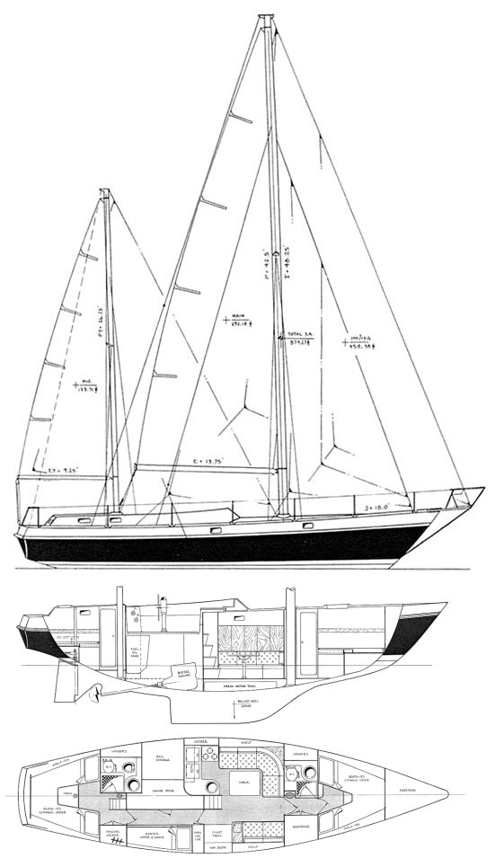
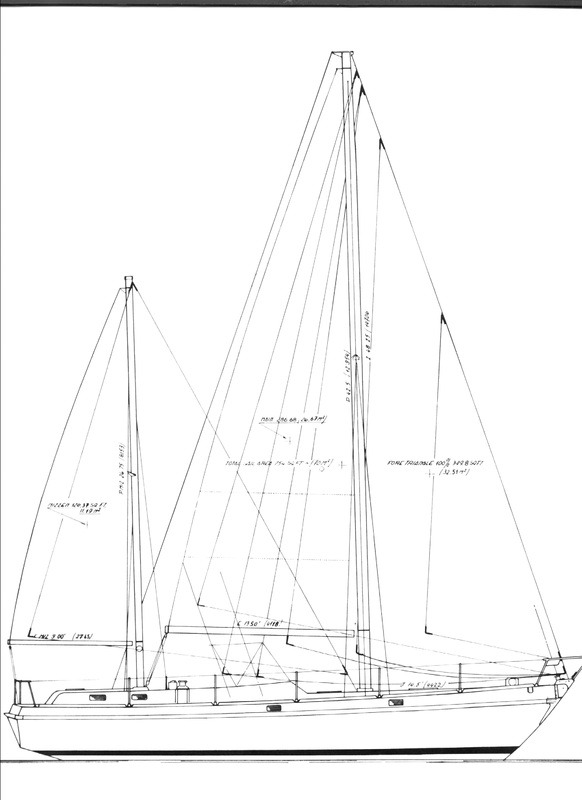
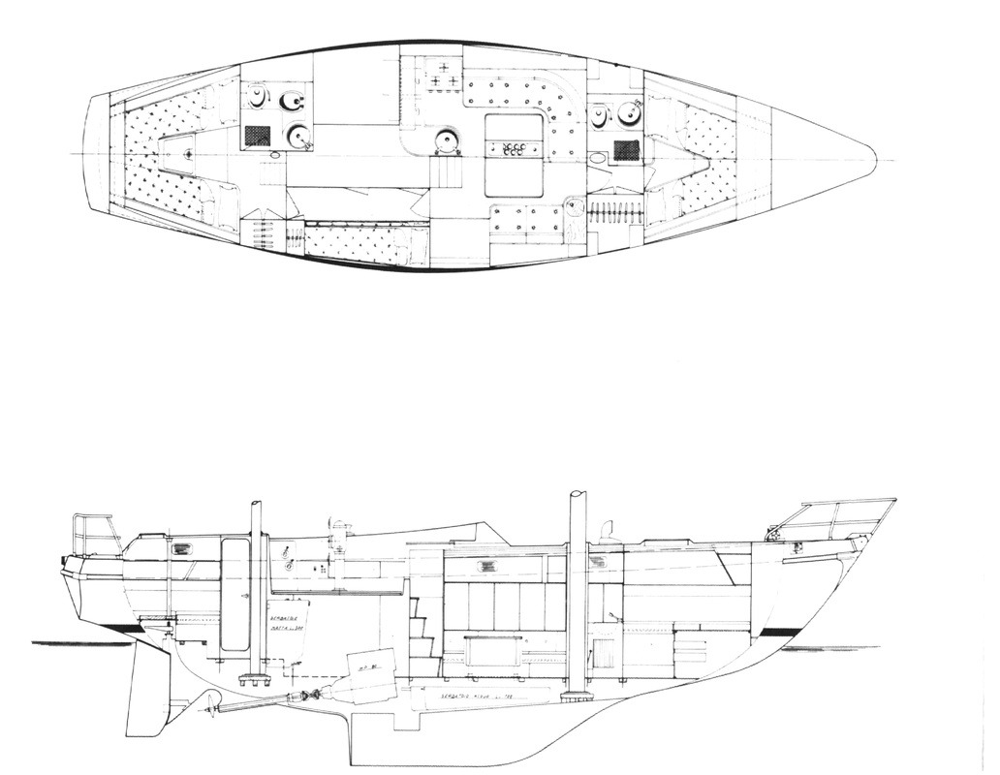
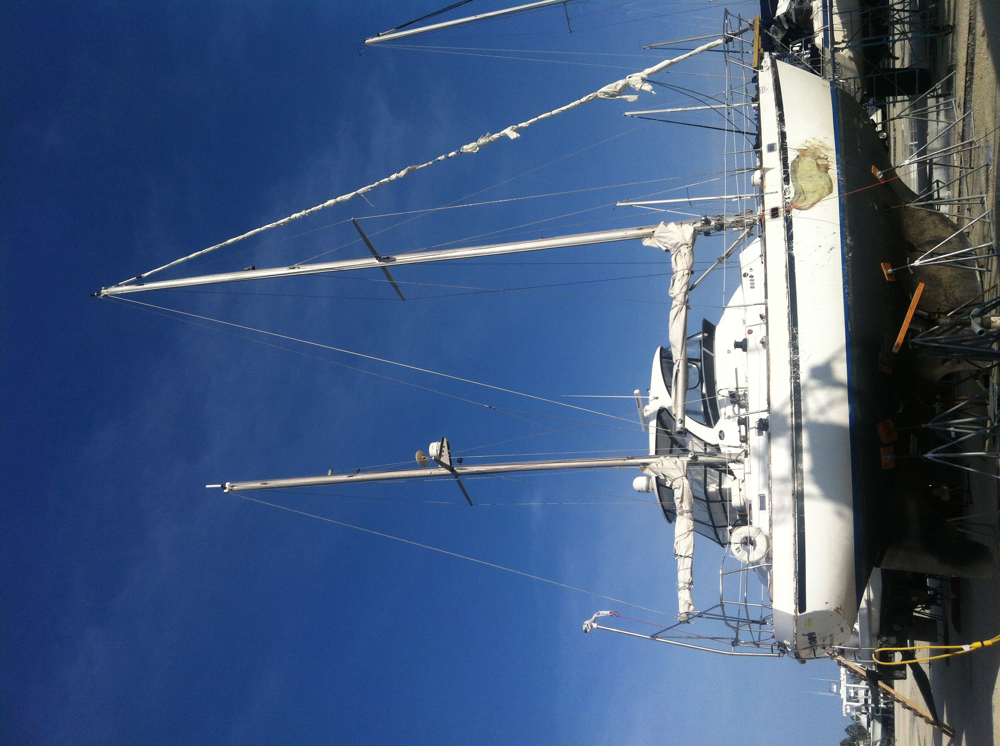

Moj rejs z Elberta AL do Fort Mayers Beach FL
Marzec 2021 do Grudzień 2022
Alpa 42 0302
Wyprawa po jacht 0302
Barber Marina 0311
Po miesiącu remontu 0415
Zezwolenie na pływania 0419
Prawie gotowe do wodowania 0422
Wodowanie 0430
Ingram Bayou 0430
Burza 0618
Ostatnie przygotowania do rejsu 0628
Wyruszam w rejs 0718
Awaria silnika 0804
Na południe 0804
Uszkodzony bukszpryt 0804
Tampa Bay 0905
Na mieliźnie przy Egmont Key 0914
Znów na Tampa Bay 0917
Na mieliźnie koło Fort de Soto 0921
Tampa Bay przed mostem 0925
Na mieliźnie przy Manatee River 1001
Za mostem Tampa Bay 1019
Wciągnięty pod most 1021
Wyrzucony na morze 1029
Kolizja z barką 1119
Akcja ratunkowa
Holowanie do Fort Mayers Beach
Fort Mayers Beach 1121
Wypompowanie paliwa i wody
Wyjazd do miasta po generator i pompę
Uruchomienie generatora i pompy
Ranger z Botwich Point Park
Odholowanie na kotwicę przed Pink Shell Hotel
Porwany poza tor wodny
Wyprawa po paliwo
Wyprawa po gaz
Oferta pomocy od żeglarza z Alberg 35
Problemy z wodą
Uszkodzony zawór gazu
Wyjazd do sądu
Porwany ponton
Pomoc żeglarza z Alberg 35 z wodą
Mandat za przesarzałe race
Nowy ponton
Na sandbar przed hotelem
Naprawa przecieku
Sąsiad z Albert 35 odpływa
Sciąganie jachtu z sandbar
Citation
Dolce i kecz za blizko
Nowa kotwica w prezencie
Splątane kotwice i wygięty dyszel
Ubrania od żeglarza z dinghy
Manadat za swiatło kotwiczne
Anglicy
Marzec 2022
Porwany przez burze do Moos Marina 0312
Kwiecień 2022
Silnik zaburtowy 0419
Maj 2022
Czerwiec 2022
Huragan 0928
Alpa 42
Siedząc w McDonaldzie w mroźny zimowy wieczór w zasypanej śniegiem po kolana i zmrożonej arktycznym mrozem stolicy Kanady, podpięty do internetu dostałem wiadomość na e-maila, że jest jacht do sprzedania. Od kilku miesięcy wypatrywałem ogłoszeń i interesowałem się jachtami nawet nie przypuszczając, że moje marzenie może się ziścić. Miałem alarm założony na craigslist i parę tysięcy dolarów, które w pocie czoła uskładałem, sprzedając butelki i puszki po piwie za kaucje. Parę okazji się już nadarzyło i wszystkie przepadły. Ogłoszenie mówi, że jest do sprzedania za niewielką sumę, na którą mnie stać było jacht 42 stopy. Wyglądał jak nowy tylko miał uszkodzoną burtę. Zadzwoniłem i zapytałem, czy jeszcze jest, czy już ktoś go kupił? Był i sprzedający zgodził się na 500 dolarów zaliczki. Decyzja była bardzo szybka, może pół godziny od zobaczenia tego ogłoszenia, a było na internecie dwie godziny. Byłem pierwszy w kolejce. Po konsultacji z żoną wysłałem mu zaliczkę. Zrobiłem rozeznanie o jachcie i oto co znalazłem po przetłumaczeniu z włoskiego.
Alpa A42, łódź stworzona do regat offshore
Zaprojektowana przez Sparkman & Stephens w 1973 roku,
Projekt S&S wszedł do budowy w 1974 roku i był jachtem flagowym stoczni Alpa.
Alpa 42
Alpa 42 stare zdjecie i specyficacja
Alpa 42 1977
zdjecie z ogłoszenia w craigslist, dziura w burcie, uszkodzone relingi, odrapania,
porwany fok
zdjecie z ogłoszenia w craigslist, łazienka w achterpiku
zdjecie z ogłoszenia w craigslist, kambuz z achterpiku, skradziona kuchenka gazowa
Tabliczka Alpa 42 na zejściówce, Numer seryjny 55,
Na burcie od środka numer seryjny kadłuba 55,
Tabliczka na silniku,
Mapa - z lotniska w Pensacola FL do Barber Marina AL
video-Barber Marina_huragan_Sally_2020_0916
video-Barber Marina_huragan_Sally_2020_0916
video-Perdido Key_huragan_Sally_2020_0916
Ten facet, który się kreci zagaduje do mnie. Ja trochę wystraszony, przecież co mam
wspólnego z żaglami. Czy wyglądam jak żeglarz? Mówi duży jacht, dla niego za duży.
On kupił mniejszy i też odbierają. Aha. Wychodzę z office bardzo spięty, ale
dumny ze się znów udało. Jestem szczęśliwcem. Bo przecież to wszystko mogło się
okazać kłamstwem. Jachtu mogło tam nie być i mogłem być oszukany przez kogoś.
Jest cudowna pogoda. Początek marca. Słońce swieci. Co mi się przytrafiło to jest sen, marzenie.
I przygoda życia. Idę do jachtu. Kręci się manager i zagaduje do mnie. Tu masz
rusztowanie, drabinę. A tu jest woda i prąd. Czy czegoś potrzebujesz, to
zagadaj do mnie. Facet przystojniacha około 30 lat. I widzę ze tam robota wre.
Bo koło mojego jachtu który stoi na kobyłkach dwoch facetów się krząta i coś
szlifują. Ubrani w jakieś białe kombinezony. To duży jacht motorowy. Nigdy
takiego nie widziałem. To jest olbrzym jak na moje wyobrażenie. Mój jacht też
duży. Dwa maszty. Ustawiam drabinę i wchodzę na rusztowanie. Wchodzę do środka.
Oglądam co jest. Będę tu mieszkał. Jacht jest w doskonałym stanie. Ma wybitą
w burcie dziurę po huraganie który uderzył w marinę ubiegłego roku we wrześniu
niszcząc wszystko. Kompletna katastrofa. Jest dużo wody na jachcie.
Sięga do poziomu podłogi. Silnik zatopiony. Poprzedni właściciel który mieszka w Maiami,
próbował coś robić, zdjął szafkę i zostawił. Może go ten remont przerósł.
Zadzwoniłem do niego. Powiedział ze jacht gdy uruchomiony, wart jest 15 tys.
I ze trzeba szybko dziurę załatać i wpuścić na wodę.
Nie takie proste jak się mówi. Czy wykonalne ?
Czwertek, Marzec
11, 2021 13:37
Widać
obrośniętą muszelkami srubę, rower który nabyłem z craigslist lecąc
samolotem
z Kanady, i podparty na kobyłkach jacht.
Mam gdzie spać i mam rower. Nie znam okolicy. Marina jest nad wodą.
Do najbliższego miasta Elberta jest 12 mil. Czyli około godziny rowerem.
Muszę zrobić zakupy. Muszę się zorganizować. Jest prąd.
Muszę kupić kabel, kuchenkę żeby coś gotować. Muszę się dostać do Elberty.
Jadę do Elberty rowerem. Potem docieram dalej do Foley i tam robię zakupy.
Kabel, kuchenka, slow cooker do gotowania ryżu. Jakieś zapasy.
Chleb i konserwy. Nie mam nic tylko rower i plecak i dokumenty i wszystko co zmieściło się w plecaku.
Wszystko trzeba kupić na miejscu. Namierzam kilka sklepów które się mogą przydać.
Wallmart czy Dollar Tree gdzie wszystko jest po dolarze.
Jest tani chleb i rosół z makaronem za jedyne 25 centów. Jakieś sklepy z
narzędziami, szlifierka wiertarka klucze itp. To wszystko muszę przywieź
rowerem więc taki wyjazd to jest wyprawa na cały dzień a powrót wieczorem.
mapa-
Barber
Marina do Elberta AL
Rozeznaję sytuację na jachcie. Jest woda w zęzie. Poprzedni właściciel powiedział że może nalało z deszczu.
Jest to możliwe. Najpierw trzeba ją wybrać. Wybieram puszką i wylewam za burtę. Żeby wyschło.
Dziura w burcie jest olbrzymia. Próboję się dowiedzieć czy to można zakleić i ile by kosztowało.
Spotkałem kogoś na jardzie i zapytałem. Mówią ze okolo 3 tys. Nie wchodzi w grę, za drogo.
Będę próbował zrobić to sam. Bukszpryt jest kompletnie pokręcony. Powyginany.
Relingi są pokrzywione. Dodger jest połamany. Fok na rollerze jest podarty i
skręcony ściągaczami. Generator wiatrowy na rufie ma połamane śmigło.
A tak wszystko jest ok. Jest masa dokumentów poprzedniego właściciela.
Mapy. Kotwica Damfoth bardzo ciężka. I mnóstwo różnych szpejów. Poduszki jak nowe.
Dwie łazienki z lustrami. Po prostu cudo. Ubrania buty. Różne przyprawy i jedzenie.
Garnki i talerze Wszystko na swoim miejscu. Tylko płynąć. Tylko ta dziura w burcie.
Może uda się uruchomić silnik. Mam nadzieje. Jest tyle do roboty. Ale cudo znalazłem, tak myślę.
Pogoda dopisuje. Lepiej nie mogłem trafić. Czy ja śnie, czy to jest prawda.
Marzec
11
do Kwiecień 16 2021 Remont
jachtu uszkodzonego w huraganie. Alpa
42
1977
Remont obejmował naprawienie dziury w prawej burcie, dorobienie bukszprytu, reling i
uruchomienie silnika. Postój za jeden dzień $40. Remont do zwodowania 2 miesiące.
Materiały i narzędzia dowoziłem z Elberta albo z Folley oddalonego o dwie godziny rowerem.
Marzec 11 Jacht
stoi na placu boat jard w Barber Marina. Po obu stronach od dziobu
mniejsze
zniszczone jachty. Jacht stoi na kobyłkach. Uszkodzony
pogięty bukszpryt z rur ze stali nierdzewnej Pourywany
reling.
Pogięty
stelaż dodgera. Wygięta rura do wiatraka. Wiatrak
bez śmigła.
Po miesiącu remontu
Wtorek, Kwiecień 13, 2021 12:15 PM
zaklejona od środka wstępnie dziura w burcie, odrapana burta, naprawiony bukszpryt i relingi
zaklejona od środka wstępnie dziura w burcie, odrapana burta, naprawiony bukszpryt i relingi
Ujęcie z przedsionka obok przedniej toalety w kierunku messy. Drzwi do messy otwarte, za drzwiami grot maszt.
W dali korytarz prowadzący obok kabiny silnika pod kokpitem do kabiny rufowej. Zdjęte schody od zejściówki.
Dwie pary akumulatorów stare na swoim miejscu pod zejściówka i drugie nowe na podłodze koło siedzenia w messie.
Pootwierane
klapy w podłodze pod która jest zbiornik na wodę. Lampka
która poprzedni właściciele zostawili na stole nawigacyjnym. Zamknięta
zasuwa
do wejścia.
Klejenie
dziury w burcie. Jeszcze światło przebija. Wyłamana rura z kablami i
panel
elektryczny. Otwarty bulaj. Na lawie plastykowa pokrywa, na której
nasączyłem
mate. Słoik do mierzenia żywicy.
Kambuz.
Slow cooker na piecyku przechylnym. Słoiki z jedzeniem i butelki z woda
do
picia. Na podłodze pojemniki z olejem, który zbierałem z wody w zęzie.
Widok
z messy na przedsionek do kabiny dziobowej. Dwie grodzie przedsionka z
drzwiami
i dalej kabina rufowa. Po lewej zdemontowane schody do zejściówki.
Panel
elektryczny i klejenie dziury w burcie.
Korytarz
do kabiny rufowej. Szafki ze szpejami u góry po lewej. Po prawej dwa
bulaje do kokpitu.
Niżej drzwi do komory silnika pod kokpitem . Po prawej na koi narzędzia
i
kleje. Na ściance gaśnica a powyżej lampa. Na dole podłoga wyłożona
wykładziną
dywanową. Drzwi do kabiny rufowej otwarte.
Zbliżenie
na kambuz. Kuchenka uchylna, która ktoś mi ukradł i przeniósł na
sąsiedni
jacht, odebrałem. Ma dwa palniki i piekarnik. Na kuchence elektryczny
slow
cooker, który używałem do gotowania. Po lewej zlew. Na stole deska,
butle z
woda i słoiki, cebula. Na podłodze pojemniki z olejem, który ściągałem z
wody w
zęzie.
Kabina
rufowa widoczna z korytarza. Otwarte drzwi. Na ściance gaśnica i lampka.
Materace
w bardzo dobrym stanie, które pozdejmowałem, żeby nie zabrudzić. Lina
100 ft,
która kupiłem w Foley i użyłem później jako lina kotwiczna. Pompka do
pontonu.
Na podłodze wykładzina dywanowa. Po lewej szafka na ubrania.
Na
koi w korytarzu przed kabiną rufową.
Żywica
pędzle utwardzacz miarki aceton rękawice Na
ścianie gaśnica. Wykładzina dywanowa na podłodze.
Na
koi w korytarzu narzędzia pudelka. Klucze
nastawne, i socket, pilnik, szlifierka, wiertarka, szlifierka kątowa
Makita, papier ścierny.
Widok
na messę z korytarza do dziobu. Po lewej rozkładany stół. Na stole pudło
po
pontonie. Za stołem przed grodzią zdjęte schody od zejściówki. Otwarte
drzwi do
przedsionka i do kabiny dziobowej. Po prawej na dole koja/siedzenie. Na
podłodze otwarte pokrywy do zbiornika na wodę, żeby się zęza suszyła. Na
podłodze po prawej nowe akumulatory kwasowe. Przedłużacz.
Kabina
rufowa z materacami. Pompka do pontonu, lina, która użyłem do kotwicy
Mata
do żywicowania i wykładzina z podłogi . Śpiwór. Na gorze podsufitka w
bardzo
dobrym stanie, bulaj i okno pokładowe. Otwór po lampie która ktoś
ukradł
Tylna
łazienka z kabiny rufowej . Lustro na drzwiach Szafka
na ścianie. Bulaj.
Tylna
łazienka przez drzwi. Szafki na burcie. Bulaj.
Wywietrznik w suficie.
Kabina
rufowa. Półka na ścianie. Materace śpiwór. Kolo ratunkowe Podsufitka
i bulaj z lewej burty.
Kokpit
widok z rufy do dziobu. Kolo sterowe i kolumna. Bulaje
w
korytarzu. Stolik w kokpicie koło kola sterowego. Zamknięta klapa do
zejścia do
messy.
Widok
z kabiny dziobowej na przedsionek . Po lewej otwarte drzwi grodzi. Dalej
szafki
i szuflady niżej. Drugie drzwi do messy otwarte a za nimi grot maszt.
Dalej
widok na messę stół nawigacyjny. I korytarz obok komory silnika i dalej
wejście
do kabiny rufowej.
Messa
i korytarz. Ściana zejściówki po zdemontowaniu schodów. Zasunięta klapa
do
zejściówki. Po prawej szafki nad kambuzem. I okno w pokładzie. Po lewej
stół
nawigacyjny. Na podłodze nowe akumulatory. Po prawej z przodu
zdemontowane
schody od zejściówki. Na suficie podsufitka i otwór o lampie, która ktoś
ukradł.
Messa i kambuz. Na burcie szafki. W kambuzie szafki i szuflady. Z prawej na
dole zdemontowana szafka z prawej burty. Nad szafkami na burcie półka i bulaj.
U góry podsufitka i otwór po lampie.
Messa widok do przodu na lewa burtę. Szafki.
Na dole po lewej zdemontowana szafka z prawej burty pudło po pontonie.
U góry podsufitka i okno pokładowe. półka nad szafkami i uchwyty.
Na ścianie barometr i zegar.
.
Jak widać na zdjęciach praca przy jachcie wre na dobre po półtora miesiąca pobytu w Barber Marina.
Najpierw musiałem się zorientować w terenie co i jak.
Gdzie są sklepy. Gdzie mogę nabyć żywice, narzędzia, żywność.
Wyjazdy zajmowały dużo czasu, bo musiałem jeździć rowerem. Żywność, narzędzia, materiały wszystko trzeba
było przywozić. To były wyprawy od rana do nocy a czasem dopiero docierałem na rano.
Np. przywiezienie 2 belek 4x6 8 ft na bukszpryt rowerem zajęło mi do rana.
Nie łatwiej było przywieźć duże pudło z pontonem, 2 akumulatory kwasowe,
kilka wiader żywicy, matę. Nawet łańcuch kotwiczny tez sporo ważył. Z narzędzi
wymienię kątową szlifierkę Makita którą kupiłem używaną i okazała się niezastąpiona
i wiertarkę. Tez prostownik do ładowania akumulatorów który się niestety wkrótce zepsuł.
Na plus powiem ze znalazłem tanie miejsce, gdzie mogłem się zaopatrywać w mate i
żywice. Udało się zainstalować bukszpryt i odciąg z liny stalowej. Belki
zamocowałem na śruby do pokładu w miejscach, gdzie był stary bukszpryt z
rur nierdzewnych. Po przycięciu i posztukowaniu rurek kosz dziobowy był naprawiony.
Cięcie rur kainerowych póltora incha o grubyćh ściankach nie należy do łatwości.
Ten stary bukszpryt to trochę ważył. Zdjąłem i zamocowałem roller do foka, żeby
wzmocnić maszt z przodu. Przygotowałem, przeszlifowałem i zakleiłem dziurę w
burcie od zewnątrz na tyle, żeby nie przeciekała, jak widać na zdjęciach.
Przydatne było rusztowanie na kółkach, które mogłem używać.
Szybko zorientowałem się, ze cały remont do końca dokładnie zajmie to bardzo
dużo czasu i dużo więcej materiału, a na to nie miałem tyle czasu i pieniędzy, żeby
płacić za postój na jardzie. Celem było jak najszybsze usunięcie jachtu z mariny.
Kolejną sprawa był silnik. Wymiana oleju. Okazało się ze oleju było w silniku
bardzo dużo, o wiele za dużo. Była pompka do pompowania oleju, ale nie znalazłem
dipstyka. Dopiero później udało mi się odkryć że znajduje się po drugiej
stronie silnika i pod rozrusznikiem i jest bardzo ciężki dostęp od strony schowka.
Pytanie było skąd tyle oleju się uskładało w silniku i był wyjątkowo żadki.
Jak się o wiele później przekonałem, to wyciek paliwa z rurki koło
zaworów w komorze zaworów powodował, że wlewało się do oleju.
Ale to odkrylem dopiero gdy bylem na wodzie. Na ten moment o tym nie wiedziałem i
wymieniłem olej. Po wybraniu wody z zęzy i wysuszeniu jachtu podładowałem stare akumulatory.
Jacht miał miejsce na 4 akumulatory. 2 do silnika i 2 do jachtu. Więc po
zakupie 2 nowych po 100 dolarów sztuka miałem komplet. Te nowe użyłem do
silnika a stare na jacht. Jacht nie chciał zapalić na starych akumulatorach.
Udało się na krótko uruchomić silnik ma sucho bez chłodzenia.
Reling był częściowo zniszczony. Słupki wyłamane. Wymyśliłem ze dorobię zamocowania z
płaskownika przy pokładzie i zamocuję te brakujące słupki. O spawaniu nie było mowy,
i nie miałem takich możliwości. Kupiłem dwie liny plastykowe po 100 ft, które zamierzałem użyć jako lina
kotwiczna później i 40 ft łańcucha do kotwicy. Na jachcie była kotwica CQR 75 funtów.
Sprawdziłem światła i funkcjonowały. Na dziobie nie było świateł pozycyjnych, ale to nie było problemem.
Rurki od dodgera zdemontowałem. Linka do zmiany biegów się zacięla i musiałem coś zrobić.
Kupiłem plastykowe rurki i wsadziłem jedna w drugą plastykowa i to służyło jako popychacz do zmiany biegów.
Udało się zainstalować. Poodrywane listwy odbojowe na burtach poobcinałem tylko bo nie było czasu, żeby je naprawiać.
Kwiecień
15
Kwiecień 15, 2021 11:51 Nalało
solidnie. Woda stoi na placu i na foli w kokpicie
Przykryłem kokpit folia i woda się
nazbierała.
Messa
po prawej stronie. Widok na dziurę w burcie i gródź przednia. Otwarte
drzwi do
grodzi. Na poręczy wisi głośnik owinięty. U góry podsufitka i okno
pokładowe.
Klejenie dziury w prawej burcie.
Komora
silnika i silnik. Na dole pompka zezowa. Z prawej rozprowadzenie wody ze
zbiornika. U góry po lewej pompka wody. Po prawej pionowo rura do
odwodnienia
kokpitu. Jest ich cztery z każdego rogu kokpitu. Silnik,
pokrywa zaworów, wąż do wody chłodzącej i pompa wodna. Pompa paliwa.
Komora
silnika. Silnik . Pompa wodna do zlewu
Silnik.
Pokrywa zaworów. I chłodnica wodna. Pompka wody do zlewu po lewej.
Aluminiowy
zbiornik na paliwo w komorze silnika na tylnej ścianie u góry. Na dole
filtr
powierza i rura poboru powietrza.
Komora
silnika z korytarza. Pompka zezowa. Akumulator. Pompka do pompowanie
oleju z
silnika. Węże. I kable odpływ wody z kokpitu.
Widok
na messę z korytarza do dziobu. Złożony stół. Na stole pudło po
pontonie. Na
podłodze mata . Drzwi do grodzi zamknięte. Jeden nowy akumulator na
podłodze i
po lewej w rogu akumulatory w skrzynce podłączone do zasilana jachtu i
silnika.
Na siedzeniu / koi slow cooker.
Widok
na kambuz z messy. Zapalona lampa ledowa w rogu. Jest ciemno, bo
przykryłem
kokpit folia, żeby nie nalało do środka, bo jest burza. Zlew, kuchenka,
szafki
nad stołem i schowki na naczynia w ściance.
Messa
widok na stół nawigacyjny i lampkę. U góry okno pokładowe i podsufitka i
poręcz. Otwor po lampie która ktoś ukradl. Kable. Wejscie do
korytarza.
Podłoga
w messie przed wejściem do przedsionka. Otwarte pokrywy dla wietrzenia.
Jakieś
pompy, które nie działały. U góry pod drzwiami do przedsionka stopa
grotmasztu
Po lewej siedzenie z messie i mata szklana.
Widok
na kokpit od kabiny rufowej po burzy. Nalało solidnie i widać wodę w
folii
która rozłożyłem żeby zabezpieczyć kokpit. Plandeka, koło sterowe i
kolumna,
pojemniki.
Kwiecień
16
Kwiecień
16-17 2021
Z
messy do kabiny dziobowej. Otwarte drzwi do przedsionka i do kabiny
dziobowej.
. Lampa naftowa na ściance grodziowej. Zdemontowane schody do zejściówki
i
pudło po pontonie. W kabinie dziobowej szafki i szuflady pod kojami.
Pokrywa
otwarta w kabinie dziobowej dla suszenia zęzy. Na suficie okno pokładowe
i podsufitka.
Messa
po lewej do dziobu. Szafki. Zdemontowana szafka z prawej burty.
Opakowanie po
smalcu. Na półce butelki z woda do picia. Na suficie podsufitka okno
pokładowe
i poręcz.
Korytarz
obok silnika. Po prawej dwie sklejki, które znalazłem na jardzie.
Narzędzia na
koi. Za otwartymi drzwiami kabina rufowa.
Messa.
Widok do dziobu. Składany stół, po prawej koja/siedzenie na
dole.
Klejenie dziury w prawej burcie. Narzędzia na stole nawigacyjnym. Panel
elektryczny. Gródź
przednia i otwarte drzwi. Potem drugie drzwi otwarte do przedniej
kabiny.
Kabina rufowa załadowana rzeczami. Po lewej szafki na ubrania. Na koi liny,
które użyłem potem do kotwicy, materace, kapoki, pompka do pontonu, wykładzina
podłogowa, na dole po lewej wiadro z żywica, i koło ratunkowe,
schody do zejścia do tylnej kabiny.
Kabina
rufowa. Po prawej wejście do ubikacji. Materace, pompka do pontonu, koło
ratunkowe, na suficie podsufitka i okno pokładowe, otwór po lampie,
kleje i
aceton w pudełku.
Sąsiednie
jachty w remoncie na jardzie. Z kokpitu na lewa burtę. Kabestan, knagi ,
wanta
do bezana, Sąsiedni duży jacht motorowy i jego rufa. Za nim jacht
żaglowy i
drabina do wchodzenia. W tle jachty motorowe . Dalej jest woda.
Widok na dziób jachtu. Zbudowany bukszpryt z belek. Wyprostowane rury bukszprytu i.
Naciągnięte odciągi relingu. Zamocowany roler. Łańcuch kotwiczny i CQR kotwica.
75 lb, która później zgubiłem na wodzie. Kabel. Otwarte okno pokładowe do.
Kabiny dziobowej. Po lewej dziób jachtu motorowego, który był malowany. W tle.
trawellift. Dalej jachty w remoncie. Z przodu przed jachtem mniejszy jacht.
Uszkodzony w huraganie, który stoi czeka na remont.
Jacht był z grubsza gotowy do wodowania. Musiałem tylko załatwić formalności to znaczy
zapłacić właścicielowi resztę, uzyskać od niego papiery o własności jachtu.
Zarejestrować w Kanadzie na siebie. I załatwić zezwolenie na pływanie po wodach przybrzeżnych.
Rejestrację w Kanadzie zrobiłem przez internet. Potrzebne były zdjęcia jachtu które zrobiłem.
Pomyślałem ze pojadę do Pensacola i załatwię to zezwolenie na pływania.
Okazało się ze Pensacola nie obsługuje mojego rejonu i muszę jechać do urzędu do Mobile w Alabamie. Zezwolenie
na pływania Poniedziałek, Kwiecień
19, 2021 Wyjazd
rowerem 30 mil do Pensacola po zezwolenie na pływanie.
Kwiecień
19 2021 18:39 30°24'39.6"N
87°15'31.7"W 20210419_183856
video-
po
zezwolenie do Pensacola Na
moście US HW 98 w oddali przystań Wycieczka
się nie udała, bo urząd celny nie obsługiwał i musiałem jechać
ponownie do
sąsiedniego stanu Alabama. Kwiecień
22 2021
To była dwudniowa wycieczka ze względu na dużą odległość. Gdy nie udało się.
Wynająć auta po przystępnej cenie pojechałem rowerem. W tamtą stronę.
Przenocowałem się na ławce kilka godzin. I dalej drogą do Mobile do urzędu.
Dotarłem tam I formalności poszły bezboleśnie.
Gdy wszystko się udało I dostałem zgodę na pływania na jeden rok.
Byłem szczęśliwy, że udało się zrealizować mój plan. Nie mogłem się.
Doczekać, kiedy będę mógł w końcu żeglować po 40 latach przerwy.
Tym razem na własnym jachcie.
20210422_125203
do 20210422_142547
w
drodze
do Mobile AL dwudniowa wyprawa rowerem do urzędu celnego w Mobile AL po
pozwolenie na pływanie. 70 mil w jedna stronę. Kwiecień 22, 2021 19:39 zwiedzam marinę w Fairhope, AL wracając z Mobile AL 20210422_192937
do 20210422_193909
video-zdjecia-wracajac
z Moblie AL
Kwiecień 22 2021 20:14 wracam rowerem z Mobile AL wszędzie pełno kwiatów Fairhope AL
Kwiecień
23-25 2021 Jacht prawie gotowy do zwodowania video-zdjecia-gotowe
do wodowania Kwiecień
23-25 2021
Jacht
przed wodowaniem 20210423_091650
do 20210425_130705 video-zdjecia-przed
wodowaniem
Lewa burta od dziobu, bukszpryt, relingi, rower, kotwica na
dzobie Lewa burta, rusztowanie , rower Lewa burta z masztami Lewa burta od rufy, rower Lewa burta dziub, bukszpryt, kotwica, rusztowanie. Po lewej
jachty na jardzie w remoncie. Dziób, poniżej lini wodnej, podpory, rusztowanie. Po lewej
sąsiad wymieniał silnik. Kil nie był malowany, podpory, rower. Płetwa sterowa z prawej burty, śruba, rower Płetwa sterowa z lewej burty, śruba. Z prawej dalej
przyczepka sąsiada z silnikiem i jacht żaglowy malowanie dna farbą antyporostową. Kil z lewej burty, odpływy, rower Rower, podpory Od rufy z lewej burty Od rufy z masztami i inne jachty w remoncie Od dziobu z masztami, ten drugi sąsiad po lewej przechodzi gruntowne malowanie. Hala po prawej gdzie malowali jachty milionerów. Od dziobu skos z lewej burty i rusztowanie Kwiecień
26, 2021 16:42 20210426_164234
video-zdjecia-
Barber Marina boat yard
Wybrałem się rowerem do Ingram Bayou żeby sprawdzić czy będzie
możliwość zacumowania tam i czy będę miał jak zejść na lad i dotrzeć do drogi. Plan
był ze tam zacumuję po zwodowaniu i dokończę remont. Znalazłem drogę
przez las choć nie było to łatwe do samego brzegu w pobliżu miejsca gdzie zamierzałem zacumować jacht.
Kwiecień
27, 5:28 PM
Poszedłem zobaczyć, jak wygląda ta woda. Bo byłem tak zajęty robotą przy jachcie, że nie miałem czasu zaglądnąć.
Na placu był wąż do wody, który używał sąsiad do napełniania wody do swojego jachtu.
Użyłem ten wąż i nalałem wody do zbiornika wody do pełna.
Nad wodą koło Barber Marina
Kwiecień 28
Zrobiłem zdjęcia elektroniki na jachcie
Panel
elektryczny
Switch
i amperomierz
Switch
i voltomierz
JRC
Radar 1000
Sollar
charge controller dependsjxb
Smart
Pilot Autohelm zdemontowany z kokpitu
Wyświetlacz glebokości Faria w kokpicie
Wyświetlacz głębokości Faria i temp silnika
Temp silnika i ciśnienie oleju
Napięcie na bateriach
ST 60 reymarine depth autohelm nie podłączony
Reymarine
60+ wind nie podłączony
Speed
Autohelm series
Reymarine
smar pilot computer w schowku
Standard
Horizon Ram+
Musiałem jeszcze nakleić numery rejestracyjne na dziobie.
Wyprawa do miasta po zakupy. Kupić butle gazowa i zapas jedzenia.
I odwiedzić office, zamówić wodowanie. Zadzwoniłem i zamówiłem wodowanie.
Gdy poszedłem do office to karta bankowa nie przyjęła transakcji na $3000. Przeszło częściowo a reszta została na drugi dzień. Wodowanie
Piątek, Kwiecień 30 2021 Wodowanie jachtu 20210430_081908 do 20210430_121129
Piątek, Kwiecień 30, 2021 12:11 PM Po dwóch miesiącach remontu wodowanie jachtu. Dalsze naprawy zrobię na wodzie. 20210430_121129
W dzień wodowania zagadałem do pracownika na placu że potrzebuje paliwo, 25 galonów.
Przyjechał z karnistami i okazało się ze tylko jeden karnister nalałem. Bo zbiornik był pełny.
Jacht przed wodowaniem z lewej burty Jacht przed wodowaniem z prawej burty i zaklejona dziura, w tle hala do malowania jachtów Messa, szynka ugotowana, rowery poskładane Slow cooker i szynka się gotuje
Kambuz, dużo chleba, szynki, rowery poskładane w messie, woda do picia w butelkach.
Messa, stół nawigacyjny, akumulatory, korytarz, pełno narzędzi na koi Wybrałem się do office żeby zapłacić resztę i zamówić wodowanie jachtu.
Udało się zapłacić i wodowanie zostało zamówione. Rachunek był na ok $3000. Barber Marina od strony wody, gdy bylem zapłacić za wodowanie. Barber Marina od wody Brzeg koło Barber Mariny Godzina 12:02 Travelift podjeżdża wokół jachtu. W tle hangar do malowania. Yard manager podchodzi do Travelift Przygotowanie pasów do podniesienia jachtu. Przygotowanie do zalożenia pasów Pas tylny założony. Przygotowanie przedniego pasa. Napinanie przedniego pasa. Oba pasy napięte, jacht idzie w góre. Usuwanie kobyłek Jacht w powietrzu Jacht wyjeżdża Zakręt rufą do tyłu
Jedzie rufą do tyłu do slipu. W tle inne jachty w remoncie.
Travelift mija bramę wejściową, w tle inne jachty.
Jedzie rufą do tyłu do slipu. W tle inne jachty w remoncie.
Gdy dotarliśmy do slipu jacht został opuszony na wodę. Wszedłem na jacht i zeszyłem do środka. Wszystko było OK.
Włączyłem silnik i zapalił za pierwszym razem. Woda chłodząca zaczęła pryskać z wydechu.
Nigdy tego wcześniej nie sprawdzałem, ale zadziałało. Pasy zdjęli.
Ingram Bayou Dzień -3 1.9
NM total
1.9 NM
Po zwodowaniu jachtu w Barber Marina płynę do Ingram Bayou żeby dokończyć remont i stoję tam na kotwicy.
Do rozeznania się gdzie płyne użyłem OpenCPN.
Głębokość miala być 12 ft.
Powoli zacząłem się wycofywać ze slipu na otwarty akwen.
To był mój pierwszy raz od 40 lat na wodzie na nowym jachcie.
Nigdy nie pływałem z silnikiem. A przynajmniej nie przypominam sobie.
Wycofałem się dalej i potem dałem do przodu i w lewo na otwarty akwen.
Jacht płynął, powoli oddalał się od mariny. Gdy znalazłem się na wprost Ingam Bayou skręciłem w lewo.
Dotarłem na miejsce gdzie zamierzałem stanąć na kotwicy. Miała być głębokość około 12 ft.
Dalej nie mogłem wchodzic, bo było płycej. Po raz pierwszy w życiu rzuciłem kotwice do wody.
Jacht się powoli ustawił z wiatrem. Nikogo nie było wokół. Bylem zupełnie sam na własnym jachcie.
Cały ten stress z wodowaniem i napawą jachtu był za mną. Bylem zmęczony, ale szczęśliwy.
Maj 2
2021 37
zdjec,
Jacht na wodzie w Ingram Bayou, ponton na wodzie, i przy brzegu, widok na jacht z pontonu i z brzegu.
9:07
am Pierwsze zdjęcie jachtu po zwodowaniu.
Stoję na kotwicy. Lina kotwiczna napięta. Wiatr SE
Opływam jacht na pontonie I robię zdjęcia.
Ponton pierwszy raz na wodzie. Ujęcie od rufy Lewa burta i zaklejona dziura. Lewa burta, duży scope na linie kotwicznej Widok od dziobu i lina kotwiczna.
Dziób, liny kotwiczne, nierozwinięty fok pospinany plastykowymi krawatami
Płynę pontonem na pagajach na brzeg żeby sprawdzić czy uda się stad dotrzeć do cywilizacji. Ponton na brzegu w oddali jacht na kotwicy. Maj 5 2021 28 zdjęć Ingram Bayou stawianie żagli, grota, bezana, maszty, bom grota, bezana,
saling bezana, 3 refy na grocie, żagle brudne, dziob, rufa, słup wiatraka zdjęty,
pokład czysty, bukszpryt czysty, kosz dziobowy, salingi, radar, kabestany na maszcie,
wajcha do sterowania silnika, żagle SUPER SAILMAKERS Ft Laudardale FL, koło sterowe
Nie mam źródła zasilania do akumulatorów. Muszę próbować uruchomić generator wiatrowy.
Pomyślałem za jak naprawie generator to będzie ladował akumulatory.
Dlatego zdemontowałem go I proboje naprawić. Ma uszkodzone śmigło.
Wykombinowałem ze użyje plastykowe pokrywy do pojemników i zrobię z drewna piastę i zamocuje na wirniku, taki jest plan.
Wirnik wydaje się ok I bedzie jak przymocować piaste do tego wyłamanego wirnika.
Jest cisza. Skorzystam z tego I spróbuję postawić żagle bo
nie wiem jak wyglądają. Grota I bezana.
4:30 PM cisza, dziób, grot postawiony i korba w kabestanie grot postawiony, cisza, generator wiatrowy zdjęty Grot trochę brudny, spróbujego umyć, 3 refy Bezan i złożony generator wiatrowy gotowy do naprawy Kokpit , koło sterowe, zejściówka do kabiny rufowej, zdjęty
gen wiatrowy Bezan maszt z radarem
Bukszpryt z belek 2x4 skręcany śrubami ocynkowanymi, kosz
dziobowy z kawałków starego bukszprytu I rurek stalowych ocynkowanych, z
odciągiem od spodu, liny kotwiczne
bezan, bezan maszt i boom, wanty które nie były zamocowane
Grot I bom grota Bom grota I kokpit
Cisza, bezan postawiony, kokpit i pokład, koło sterowe
kabestany, tratwa ratunkowa, zbiornik z gazem, kuchenka uruchomiona
Bezan
maszt I radar
Dorobiłem smigło do generator wiatrowego. Użyłem plastykowe pokrywy z pojemników,
drewno żywicę gwoździe i śruby żeby zamocować na kawałku piasty która została po
huraganie, wiatrak się kreci.
Maj 7 2021 7 zdjęć Ingram Bayou bezwietrznie, woda, mgła, kokpit wiatrak 7:07
am
kokpit, zejściówka zamknięta. grot zwinięty na bomie, mgła
wschód słońca, mgła
tratwa,
butla gazowa, zwinięty bezan Generator
wiatrowy z dorobionym prowizorycznie
śmigłem Maj 9 2021 5 zdjęć Ingram Bayou Ponton na brzegu brzeg w oddai jacht 9:10
am Wyprawa
na brzeg po drewno do remontu jachtu. Ponton
z pagajami na brzegu, plecak, kamizelka ratunkowa,
Ponton
na brzegu, w oddali jacht na wodzie
Brzeg Ingam Bayou jest niedostępny z lądu
Ponton na brzegu, plecak i kapok Maj 11 2021 8:20 am 2 zdjecia top bezana I radar z antena 2 zdjecia sąsiada 7 zdjęć w srodku, folia, szlifowanie dziury od środka,
bałagan. Messa od środka
Próbuję zorientować się, co to jest na bezanie.
Rurka z kabelkiem ? Antena satelitarna i radar 11:23 Sąsiad 3:57 PM
Szlifuję dziurę od środka, pozakładałem folie, żeby się nie kurzyło,
niestety kurz się wydostał co dodał mi dużo sprzątania.
Messa , zejściówka, rowery, sklejki, jedzenie w kambuzie, deski w korytarzu Zasłona z folli Maj 13 2 zdjecia naklejki ? I zeszytu
Analizuję połączenia elektryczne na jachcie, co, gdzie idzie.
Jaki kabel, gdzie idzie I do czego służy, żeby uruchomić światła I wszystkie urządzenia, które jestem w stanie uruchomić.
Zamocowałem rurę wiatraka na relingu na rufie. Spróbuję czy generuje prąd.
Zmontowałem talię grota zrobiona z dwóch małych podwójnych bloczków, które kupiłem.
Okaże się to potem błędem I przerobiłem to mocowanie później zakładając dolny bloczek na bezanie zamia sną pokładzie.
To wyszło podczas żeglowania.
Maj 15 2021 Ingram Bayou 19 zdjęć( 5 moje, 11 jacht z dala i
zatoka, wiatrak bom ) Sobota, 8:55 am Przybylo sasiadow wczoraj na
weekend. 2 motorowe kuterki z pontonami,
jeden slup I jeden kecz Stoja na kotwicy glebiej bo maja
mniejsze zanurzenie, tam dla mnie za plytko
stojak wiatraka zamocowany, talia grota założona
widok na SE na Orange Beach
kecz odplywa, holuje ponton
A za nim podąża slup
Maj 16 2021 Ingram Bayu
38 zdjęć elektronika Raymarine autopilot computer, screen,
ramie na sterze, moj tel iPhone,
Robię zdjęcia różnym urządzeniom elektronicznym na jachcie dla dokumentacji
Analizuję połączenia elektryczne.
Raymarine smart pilot computer Course Computer S3
Stoję na kotwicy w Ingram Ba you koło mariny.
Uszkodzone w huraganie śmigło zrobiłem z plastykowej pokrywy od pojemnika na pranie.
Później po testach okazało się, że wiatrak nie dawał wystarczająco prądu.
Zdemontowałem go i założyłem mały solar, żeby lądować akumulatory
30°18'54.4"N
87°33'16.2"W 20210517
101833
Maj 17 2021 Ingram Bayou 1 video wiatraka
16 zdjęć( 3 moje, 6 pokładu, 1
dzobu, 1 woda, 2 Raymarine na sciance w schowku, rury I szpeje, 3 schowek z przdu )
Pokład jachtu i wiatrak zainstalowany.
Inverter i lampka podłączona
Maj 20 2021 Ingram Bayou 1 wideo 18 zdjęć ( 2 woda, 4 silnik, 3 korytarz I akumulatory,
kabina silnika, olej we wiadrze , zęza koło silnika z olejem, panel,
wiatra po zywicy, smieci w messie, wypompowałem olej pompka I polecialo do zęzy,
zbieralem olej w zęzie z woda do wiadra )
Silnik
zęza koło silnika z olejem, wypompowalem
olej pompka I
polecialo do zęzy, zbieralem olej w zęzie z woda do
wiadra
Akumulatory
do silnika
olej we wiadrze, zbieralem olej w zęzie z
woda do wiadra
Kokpit
Kokpit, schowek otwarty, koło sterowe, reczna pompa zezowa ( nie uruchomiona ),
kontola silnika
Kokpit, otwarta zejściówka do messy, na podłodze rura odcięta bardzo ciężka 1 1/2 cała gruba.
Z pokrzywionego huraganem kosza rufowego, użyje ja później jako obciążnika do kotwicy, gdy zgubie kotwice,
blachy do odbijacza koło burty, które użyje przy budowie dodgera.
Maj 21 2021
Ingram Bayou
72 zdjecia ( 8 woda, 19 jacht z pola, 2 poklejona dziura,
messa , kambuz, zejscie, olej w zęzie pod akumulatorami, 4 dziura pod
akumulatorami, 2 silnik, korytarz, stol nawigacyjny, pokrywa zbiornkika wody,
wentylator w schowku, rury w schowku I autopilot, rozrusznik , kable,
alpa 42 matricola 55 na kadłubie, kable w schowku )
Wiatrak poklejony, fok potargany na rollerze, wyczyściłem.
Pokrywę zbiornika wody, wyczyściłem kable pod akumulatorami,
rozeznawanie połączeń elektrycznych I akumulatorów, dziura w burcie zaklejona,
jacht na kotwicy na dwóch linach plastykowych, silne szkwały, wybieranie oleju zęzy
Messa, schodki zdemontowane, kambuz, stół nawigacyjny, odkręcony switch do panela
rozpoznawanie kabli
Zejściówka i kambuz, schody odsunięte
Akumulatory silnika rozłączone
Korytarz, komora silnika
Silnik
Olej w zęzie pod akumulatorami
Pokrywa
zbiornika wody
Rozrusznik
Nadmuch powietrza do komory silnika
Rura do napełniania zbiornika wody pitnej i odpowietrzenie
Prysznic w schowku
Napis alpa 42 matricola 55 na kadłubie
Rura wydechowa i mufler
Kokpit i wejscie do jachtu, skrzynka na akumulatory do silnika
Na
kotwicy szkwali
Maj 22 2021 Ingram Bayou
27 zdjęć (5 woda, 2 pokład, podłączenie do panela,
połączenie kabli do szyny koło panela, kable do silnika, rozrusznika,
bezpiecznik, alternator, olej z wodą we wiadrze, lejki, szmaty do
cedzenia) odcedzanie oleju z wody brudnej z zęzy
polaczenie kalbli do szyny koło
panela
podłączenie do panela
Switch
Alternator
Bezpiecznik
Olej
z woda ,
Zlew
Maj 23 2021 Ingram Bayou
14 zdjęć (pompa zezowa duża, czyszczenie pompy i zęzy z oleju pod akumulatorami)
pompa zezowa duża, czyszczenie pompy
Czyszczenie
zęzy pod akumulatorami z oleju
Maj 24 2021 Ingram Bayou
34 zdjęcia (8 woda, 18 jacht z pola, 8 jacht w środku),
zdjęta zejściówka, sklejki w messie, dziura prześwietla słońce częściowo,
zaklejona, kable podłączone
6:24
am
Messa, schodki odsunięte
Kabina dziobowa
Messa, dziura w burcie jeszcze nie skończona
Messa, kambuz, sklejki
Kokpit, koło sterowe, zamknięta zejściówka
kabina rufowa, materace, ponton złożony, wiatro kable
grot
maszt i bom
Kosz rufowy, talia bezana
Dziób
, otwarty forluk
Dziób, światła nawigacyjne na dziobie naprawione
kokpit
Grot na bomie, wiatrak, bezan, kokpit
Kabestany na grotmaszcie, fał foka urwany
May
25
Wyprawa
do miasta po zakupy
Musiałem dotrzeć na brzeg, który wcześniej rozpoznałem pontonem, bardzo.
Wcześnie rano, żeby nie wzbudzać podejrzeń. Rower wcześniej zawiozłem na brzeg poskładany na pontonie.
Ponton zostawiłem na brzegu. Idę i jadę przez dróżkę w lesie do drogi.
Głównej przez teren prywatny, obawiając się, żeby mnie nie złapali. Udało się.
Potem dwie godziny pedałowania do miasta tak samo jak z mariny.
Tym razem droga dużo trudniejsza ze względu na broczenie w bagnie przy brzegu i.
Po podtopionej drodze, zanim się nie oddalę od wody. Potem jazda rowerem do miasta dwie godziny i zakupy.
Pojechałem, żeby kupić mate do klejenia dziury. Miałem na tyle żywicy, bo poprzednio kupiłem 2 wiadra żywicy, ale.
Skończyła mi się mata. Musiałem więc wybrać się do miasta, żeby skończyć tę dziurę.
Przy okazji przywiozłem coś do jedzenia. I radio do odbierania komunikatów o Musiałem dotrzeć na brzeg, który wcześniej rozpoznałem pontonem, bardzo.
Wcześnie rano, żeby nie wzbudzać podejrzeń. Rower poskładany zabrałem na ponton.
Ponton zostawiłem na brzegu. Idę i jadę przez dróżkę w lesie do drogi.
Głównej przez teren prywatny, obawiając się, żeby mnie nie złapali. Udało się.
Potem dwie godziny pedałowania do miasta tak samo jak z mariny.
Tym razem droga dużo trudniejsza ze względu na broczenie w bagnie przy brzegu i.
Po podtopionej drodze, zanim się nie oddalę od wody. Potem jazda rowerem do miasta dwie godziny i zakupy.
Pojechałem, żeby kupić mate do klejenia dziury. Miałem na tyle żywicy, bo poprzednio kupiłem 2 wiadra żywicy, ale.
Skończyła mi się mata. Musiałem więc wybrać się do miasta, żeby skończyć tę dziurę.
Przy okazji przywiozłem coś do jedzenia. I radio do odbierania komunikatów o pogodzie z latarka z możliwością ładowania na korbkę.
Później to radio się zepsuło, a została latarka i też się zepsuła jak zalała się słona woda.
Z jedzenia kupiłem szynkę, kilka chlebów w Wallmart po $1, olej, smalec i majonez, i Musiałem dotrzeć na brzeg, który wcześniej rozpoznałem pontonem,
bardzo wcześnie rano, żeby nie wzbudzać podejrzeń. Rower wcześniej zawiozłem na brzegu poskładany na pontonie.
Ponton zostawiłem na brzegu. Idę i jadę przez dróżkę w lesie do drogi.
Głównej przez teren prywatny, obawiając się, żeby mnie nie złapali. Udało się.
Potem dwie godziny pedałowania do miasta tak samo jak z mariny.
Tym razem droga dużo trudniejsza ze względu na broczenie w bagnie przy brzegu.
I po podtopionej drodze, zanim się nie oddalę od wody. Potem jazda rowerem do miasta dwie godziny i zakupy.
Pojechałem, żeby kupić mate do klejenia dziury. Miałem na tyle żywicy, bo poprzednio kupiłem 2 wiadra żywicy, ale.
Skończyła mi się mata. Musiałem więc wybrać się do miasta, żeby skończyć tę dziurę.
Przy okazji przywiozłem coś do jedzenia. I radio do odbierania komunikatów o pogodzie z latarka z możliwością ładowania na korbkę.
Później to radio się zepsuło, a została latarka i też się zepsuła jak zalała się słona woda.
Z jedzenia kupiłem szynkę, kilka chlebów w Wallmart po $1, olej, smalec i majonez, i cebulę, wszystko po 1$.
Wracając, muszę zdążyć przed nocą, żeby dopłynąć na jacht przed zachodem słońca. To samo w odwrotną.
Stronę. Tym razem muszę wszystkie ciężary zapakować na ponton. Rower zostawiłem w krzakach.
Udało się dotrzeć na jacht do domu.
Maj 26 2021 Ingram Bayou
18 zdjęć (6 jedzenie, 11 jacht pokład, 1 wiadro z wodą z zęzy z olejem)
Byłem w mieście, kupiłem szynkę, ugotowałem, chleby suszę na słońcu,
olej, majonez, smalec, cebula, suszę szynkę na słońcu.
Przywiozłem mate do żywicowania dziury, radio z latarka.
Szynka którą przywiozłem wczoraj i ugotowałem
Suszenie chleba na słońcu
Szynka ugotowana
Świeże
zakupy
Suszenie
szynki
Kokpit, mata, chleb się suszy
Dziób jachtu, otwarty forluk Radio
i latarka
Wiadro z woda z zęzy z olejem, cedzenie oleju Maj 27 2021 Ingram Bayou
45 zdjęć( 7 woda, 10 jacht pokład, suszenie chleba i mięsa,
5 ponton, 15 jacht z pontonu ) wyprawa na brzeg pontonem Dziób, kosz dziobowy, lina kotwiczna Jacht od dziobu Kokpit, suszenie chleba I miesa, i szmat do cedzenia oleju
ponton jacht z pontonu Wyprawa na brzeg pontonem
Wybrałem się na brzeg, żeby przywieź rurki PCV, które na brzeg woda wyrzuciła.
Rurki te użyłem później do budowy ramy dodgera nad kokpitem.
Poszedłem brzegiem blisko, aż do Barber Marina. Znalazłem tam rurki pół cala,
elastyczne PCV, które woda wyrzuciła. Było tego tak dużo, że mógłby z tego zbudować
Dodger pomyślałem
Maj 29 2021 19 zdjęć( 9 woda, 1 delfin, 6 pokład, 4 olej w zęzie pod
akumulatorami ) ?? kable wyciągnięte 6:31 am Spokój i cisza na Ingram Bayou Rano odwiedzały mnie delfiny 11:30 am
Olej w zęzie pod akumulatorami, czyszczenie zęzy z oleju z wodą.
Olej dostał się tam przez moją nieuwagę, gdy zacząłem pompować pompka olejowa,
i nie podłożyłem naczynia I rozlał się po całej zęzie.
Wodę dolewałem do zęzy, żeby ten olej zbierać.
Pompowałem olej z wodą z zęzy do wiadra jako lżejszy wychodził do góry,
zbierałem ten olej do pojemnika osobno. A wodę spod oleju odfiltrowałem.
Przez szmaty przez cedzenie I wylewałem do zlewu.
Maj 30 2021 2 zdjecia pontonu na brzegu przed Barber Marina ( wyprawa po
rurki do dodgera )
Ponton
na brzegu, w oddali Barber Marina
Maj 31 2021 4 zdjecia ( akumulator kable ) Podłączenie kalbi do akumulatora Czerwiec 1 2021 Początek sezonu huraganów 19 zdjęć (2 woda, 6 pokład, 11 panel i podłączenie świateł, testowanie elektryki).
testowanie elektryki, panel switch
Czerwiec 2 2021 6 zdjęć( 4 kokpit maszty, 2 pokład )
Kokpit
z zejsciowki
Ingram
Bayou, kokpit i zbiornik na wodę z boatyard
Grot
maszt i kabestany, obciągacz bomu
Czerwiec 4 2021
72 zdjęcia (8 woda, 40 pokład, 1 zbiera się na deszcz, 1.
deszcz, 8 maszty, 2 kokpit, 6 folia na bomie, 2 tabliczka na silniku,
4 dziura w burcie, 1 czyszczenie liny kotwicznej z narostów,
2 zdjęta osłona na burcie nad dziura dla dostępu, pogoda wieczór,).
deszcz i czyszczenie liny kotwicznej, zdejmowanie osłony
Poklad
na dziobie
Grot maszt i bezan maszt
Grot kabestany i pokład
Kokpit, 2 wiadra , drabinka uszkodzona, otwarta zejściówka do kabiny rufowej
Bezan maszt top i saling
folia na bomie, zbiera się na deszcz
Deszcz
Czyszczenie liny kotwicznej z narostów
Tabliczka na silniku
Zdjęta osłona na burcie nad dziura.
Rozpogodziło się. Bom grota i grotmaszt o zachodzie.
Bom grota z kokpitu
Z
kokpitu o zachodzie
Dziób
po deszczu o zachodzie
Zmoknięty bukszpryt o zachodzie.
Czerwiec 5 2021
40 zdjęć (2 woda, 8 z pokładu, 30 jacht z pontonu prawa burta,
dziób, bukszpryt, lewa burta, rufa, światła pozycyjne i wiatrak zamocowany).
8:30
am
Lewa
burta
Dziób
z pontonu
Rufa
z pontonu
Alpa
i sasiedzi
7:53
Zachód słońca na Bayou
Czerwiec 6
Wietrznie I pochmurno, dziób I lina kotwiczna.
Czerwiec 7 2021
74 zdjęcia (9 delfin, 8 woda, 2 ponton, 8 bukszpryt,
2 kokpit, 10 fok na pokładzie (storm staysail), 10 pokład,
2 worek na stom staysail large (hong kong sailmakers), 6 zaklejona dziura,
2 messa. prawa burta) suszenie prania, ponton z wodą
Ponton z woda, jak widać polalo w nocy I nalalo do pontonu
Delfin
Fok sztormowy na pokładzie.
Wyciagnalem fok sztormowy (storm staysail) na pokalad żeby go sprawdzic
Suszenie ubran Worek na foka Kokpit i zejscie do kabiny rufowej
Zaklejona dziura
Nakleiłem kilka warstw maty, od środka, żeby wzmocnić dziurę w burcie i tak wyschło
W messie szafka zdemontowana, rama roweru, sklejki i osłona
Czerwiec 10 2021
5 zdjęć (1 kambuz I schodki do messy, 1 charge controller.
12,2 V działa, 2 solar panel, 2 pokład) solar panel podłączony
Kambuz I bałagan, mała pompka zezowa we wiadrze, chleb na desce I cebula, zlew I płyn do prania, składany stół w messie.
Podłączony solar panel, który przywiozłem z miasta rowerem.
Daje 12,2 V.
Czerwiec 11 2021 1 zdjecie ( solar panel ustawiony do słońca)
Solar panel przestawiałem, żeby uzyskać lepsza wydajność.
Czerwiec 12 2021
29 zdjęć (6 woda, 4 sąsiad jacht. 4 solar na pokładzie,
2 pokład rufa, 2 alpa naklejka, 7 skończone klejenie dziury od środka,
3 podsufitka i osłona ściany nad dziura, 2 pokład).
dziura skończona, zakładanie osłon.
Sąsiad na kotwicy.
Solar do słońca Naklejka fabryczna Alpa
Klejenie dziury skończone I wyschło
Czerwiec 13 2021
32 zdjęcia (12 pokład i woda, 1 rufa I ponton odwrócony obrośnięty,
2 kokpit zejściówka, 2 koło sterowe, 8 kabina rufowa,
2 messa I kambuz, 2 szafka na prawej burcie) założenie szafki na dziurze, cisza,
ładne ujęcia, dużo sąsiadów na kotwicy, rurki I drzewo zgromadzone z brzegu,
sklejki, drugi rower rama (z mariny) materace czyste, wiadra i pojemniki,
zbiornik z mariny, narzędzia, woda do picia w butelkach.
Sąsiedzi Ponton odwrócony
Cisza Cisza na wodzie, otwarty schowek Kambuz, szafki, sklejki
Zainstalowana szafka na prawej burcie, rama rowera z boat yard, która później użyje jako kotwice,
rurki PCV, które użyje na dodger, narzędzia szpeje na stole nawigacyjnym,
odkręcona sklejka nad stołem nawigacyjnym
Messa, schody zejściówki, rama roweru
Kabina rufowa, materace Scianka od lazienki w kabinie rufowej Kabina rufowa, schowek Kabina rufowa, materace i poduszki Kokpit, wiatra, zbiornik na wodę, karnister, puszki , aceton
Kokpit, otwarta zejściówka do messy, rzeczy wyjete ze schowka Messa, sklejki, narzedzia, otwarte szafki Czerwiec 14 2021
22 zdjęcia (12 messa, 10 pokład) szafki na dziurze założone na gotowo z drzwiczkami,
wszystko posprzątane, woda do picia na półce w butelkach,
zapasowa rama w messie, sklejki w messie, narzędzie w pudle, kokpit 2 wiadra,
jacht płynie, solar na pokładzie do słońca i wentylacja luku na dziobie,
filtrowanie wody z olejem
Zainstalowana szafka na prawej burcie
Messa, kambuz, szafki, sklejki, rama roweru, narzędzia, woda deszczowa do picia na półce.
Messa, materialy i narzdzia Jacht płynie, wiadra w kokpicie
Pokład na dziobie, solar do słońca, wentylacja w oknie pokładowym
Messa podłoga, rozkładany stół, filtrowanie oleju z zęzy, narzędzia
Czerwiec 17 2021
5 zdjęć (4 zdjęcia zaworów silnika I rurki odpływowej paliwa,
1 pokrywa zaworów) znalazłem pękniecie w rurce po zrobieniu reaserch pomysł, jak to naprawić,
powodowało przelewanie się paliwa do oleju,
silnik jest unieruchomiony
Silnik, zdjęta pokrywa zaworów
Silnik, zdjęta pokrywa zaworów.
Rurka powrotna paliwa I wyciek na jednym z trójników.
Zrobiłem test, nalewając paliwo do rurki powrotnej od tyłu, widać wyciek paliwa
Czerwiec 18 2021
2 zdjęcia (2 komora zaworów)
Zaklejony żywica trójnik, żeby zatrzymać wyciek paliwa do silnika
wido-zdjecia-na wodzie w Ingram Bayou
video-zdjecia-spokojna
zatoczka Ingram Bayou Burza
Sobota, Czerwiec 19, 2021 dzień-2
07
NM total
2.6 NM
Burza porwała kotwice. Uruchomiłem silnik i udało się uniknąć wylądowania na brzegu
Rano przyszła burza. Zaczęło lać, była nawałnica około 40 knotów z SE jak zwykle.
Jachtem targało niemiłosiernie I zaczął ciągnąć kotwice.
Odkąd stałem tam nigdy nie miałem tego. Kotwica trzymała jak mur przy 30 knotach.
Ale tym razem było za dużo. Jacht zaczął jechać w kierunku brzegu. Lało niemiłosiernie.
Widząc, że jacht zbliża się niebezpiecznie do brzegu wpadłem w panikę.
Byłem w messie wtedy, chroniąc się przed deszczem. Wypadłem nieubrany do kokpitu i włączyłem silnik.
Zapalił. Na szczęście wczoraj udało się zamknąć komorę zaworów, że silnik był sprawy. Zapalił.
Powoli jacht zaczął się posuwać pod wiatr. Kotwica ciągle w wodzie.
Po jakimś czasie line kotwiczna się napięła i zacząłem ciągnąć kotwice.
Jechałem na wprost do wylotu zatoczki i ciągnąłem za sobą kotwice.
Zauważyłem, że to jest możliwe. Że silnik jest na tyle mocny.
Obawiałem się, żeby lina kotwiczna nie wkręciła się w śrubę, ale szła bokiem.
Wydostałem się z zatoczki Ingram Ba you na otwarta.
Wodę, gdzie był dalej był tor wodny ICW, którym ciągnęły barki I większe jednostki.
To był mój drugi dzień, gdy jacht zmienił swoją pozycje do czasu,
gdy stanąłem na kotwicy po zwodowaniu w Barber Marina
June
20 2021 13:44 Stoje
na kotwicy przed Ingram Bayou
Przestawiam jacht bliżej Barber Marina, żeby spróbować złapać WiFi z jachtu.
Płynę na silniku. Gdy byłem na brzegu pontonem poprzednio szukając rurek do dodgera,
udało mi się połączyć z WiFi mariny i wejść na internet.
Śrubuje to zrobić ponownie tym razem z pokładu jachtu.
przestawienie jachtu blizej mariny
Czerwiec 25 2021
2 zdjeca 1 video (2 woda, 1 pokład ponton) przed Barber Marina
7:07
PM
Przed
Barber Marina na kotwicy
Przed Barber Marina, zachód słońca, solar ustawiony, żeby łapać ostatnie fotony.
Przed Barber Marina, zachód słońca nad mariną, rufa i ponton.
Przed Barber Marina, w oddali Orange Beach
Czerwiec
25
25
Czerwca 2021 godz 19:08
20210625
190838
Zachód słońca, Orange Beach, tor wodny i Orange Beach po drugiej stronie toru wodnego.
Na kotwicy przed Barber marina, łapie WiFi.
30°18'42.1"N
87°33'48.2"W.
Stoję parę dni przed Barber Marina, żeby skorzystać z internetu.
Ściągam informacje z internet przez WiFi,
ściągam z internet software i uruchamiam OpenCPN na smartfonie,
w oddali Orange Beach i tor wodny.
Robię reaserch na internecie jak się wchodzi na maszt, i o węzłach do tego potrzebnych,
żeby się wspiąć na maszt po linie, używając Prusik knot.
Też na temat nie działającego generatora wiatrowego Air X,
Ściągam informacje video.
Czerwiec 28 2021
Ściągam 8 video (2 climbing, 4 knot, 2 air turbina,).
Wideo jak wspiąć się na maszt i naprawić śmigla wiatraka.
Czerwiec 28, 2021 8:07 AM
How
I climb my mast
alone -- Sailing Tarka
Extras_144p
June
28,
2021 8:22 am
How
to use a Prusik
knot as backup for mast
climbing_144p
ATN
MastClimber - NEW
Design - Mast Climber from
ATN_144p
June
28,
2021 8:41 am
How
To Build & Use
'The Easy Climb' - A Mast Climbing
Aid_144p
June
28,
2021 9:01 am
Single-handed
mast
climb system_144p
June
28,
2021 9:05 am
June
28,
2021 9:22 am
AirX
wind generator
Yaw-slip ring
replacement._144p
June
28,
2021 9:43 am
Air
X Wind Turbine
Upgrade Kit - e Marine
Systems_144p
June
28,
2021 9:44 am
AIR
Wind Turbines Blue
Blades Installation - e Marine
Systems_144p
June
28
2021 9:48 am
Ostatnie
przygotowania do rejsu
Dokończenie niezbędnych napraw i przygotowania do rejsu.
dzień -1
1.3
NM total
3.9 NM
Przestawiłem jacht bliżej z powrotem na Ingram Bayou, płynąc na silniku
Kontynuuję remont jachtu i przygotowania do rejsu.
Muszę zdjąć roller na dziobie i rozkręcić fok co nie jest łatwym zadaniem,
ze względu, że fal foka jest urwany. Buduję siodełko bosmańskie i uczę się wiązać węzeł Prusik.
Wchodzę na bezana na próbę. Potem wchodzę na grota i robię przegląd.
Następnie rozpinam rollera od bukszprytu i wchodzę na maszt ponownie,
żeby rozpiąć szeklę i ściągnąć foka z rollera.
Schodząc rozpinam plastykowe krawaty i ściągam podarty fok,
który był zamocowany przy ich pomocy.
Prawdopodobnie zrobione to było z jakiegoś podnośnika.
Rozpięcie bez podnośnika i na wodzie nie było już takie łatwe.
Planuję zbudowanie dodgera, który zabezpieczy mnie przed deszczem i słońcem,
gdy wypłynę na morze. Chce do tego użyć rurek PCV, które ściągnąłem wyrzucone przez wodę na brzegu,
pozostałe połamane aluminiowe rurki i płachetek tora znalazłem na boat jardzie.
Boki zrobię z folii przezroczystej, która znalazłem na jardzie.
Wszystko chce powiązać drutami zbrojeniowymi i sznurkami.
Użyje kawałki blach z odbijacza do zamocowana płachty do ramy.
Dach będzie nieprzezroczysty, a ściany przezroczyste.
Ściany będą podnoszone i mocowane na krawędzi dachu.
Dodatkowo dach powinien być odciągany na bok, żeby była możliwość dostępu do grota,
w celu zrolowania. Ten projekt udaje się zrealizować jak zaplanowałem.
Daje cień w kokpicie przed silnym słońcem. Gdy pada deszcz i zacina, to woda nie leje się do kokpitu.
Zapewnia dużo bezpieczeństwa w czasie rejsu. Okazuje się zbawienny,
w wielu bardzo niebezpiecznych sytuacjach podczas rejsu.
Gdy burza przychodziła i trzeba było stać za kolem sterowym przy wietrze z rufy,
chronił mnie przed strugami deszczu. Podczas niebezpiecznej burzy,
na otwartych wodach Zatoki Meksykańskiej około 100 mil od brzegu,
po kilku dniach flauty, która mnie zaskoczyła wieczór po zachodzie słońca,
ten dodger uratował mi życie, gdy jacht szedł pod pełnym żaglami,
pod wiatr w podmuchach do 40 knotów i więcej. Oparty nogami o ławkę w kokpicie,
trzymałem z całych sił ster na wiatr, żeby nie dopuścić do odpadnięcia,
co mogło, by się skończyć katastrofa. Wtedy w nocy strugi deszczu zacinały,
a ja modliłem się, żeby to przetrzymać. To był horror. Dodger uratował życie.
Innym razem w czasie sztormu puścił fal grota i wiatr pozrywał raksy i ściągnął grota do wody.
Wyciągałem go z wody przez dziurę w ścianie dogera, bo nie było szans wyjść ana pokład.
Lipiec 18 2021 12 zdjęć (10 plytka wiatraka, 2 kable wiatraka)
Rozebrany wiatrak i nieudana próba naprawy w Ingram Bayou.
5:54
PM
Niedziela, Lipiec 18, 2021, 17:55
Rozmontowana
plytka wiatraka i proba zdjagnozowania.
Zbudowany dodger, naprawiony roller i bezpieczny grotmaszt.
Czas na testy silnika i ożaglowania. Ten test zaplanowałem na sąsiednim akwenie,
Perdido Bay w kierunku Pensa cola, gdzie było więcej miejsca do żeglowania.
Dwukrotnie płynąłem tam torem wodnym, który prowadzi z Ingram Ba you i wracałem
dzień 0
17
NM total
20.9 NM
Próba żagli i silnika. Po naprawach czas na test żagli i silnika.
Poplynolem na silniku na Perdido Bay, żeby spróbować jak jacht się sprawuje na żaglach
ze sztormowym fokiem, grotem i bezanem. Test wyszedł pozytywnie. Wróciłem na silniku.
Po testach okazało się, że bom grota jest trudno sterować.
Musiałem zmienić zamocowanie tali grota wyżej i przełożyłem je na bezana. Cienka linka talii,
nie spełniała swojego zadania, dlatego zacząłem używać grubych lin, jakie miałem na podorędziu.
Np. z fałów, które były pod ręką i zakładałem je na kabestany, bo sila na żaglu była olbrzymia.
Dodatkowo zrobiłem z jednego 2x4 x 12 ft coś w rodzaju pawęzy na sztagach bezana,
na której mocowałem szoty grota. Innym problemem później okazało się,
zakładanie kontra szotów na bomie grota, żeby nie przelatywał przy zwrotach.
Jacht był bardzo podatny na zwroty i przez to bom był wielkim niebezpieczeństwem.
dzień 1 i dzień 1a ( dwa razy )
13.3
NM x 2 total
34.2 NM + 13.3 NM
Po przejściu testów i zrobiłem ostatnie zakupy przed rejsem.
Przywiozłem rower z krzaków. Wtedy nie wiedziałem, że mam dostęp do internetu,
jeśli mam wykupiony plan na telefon. Miałem już ze sobą drugi zapasowy smartphone,
oprócz iphona 4, który zabrałem z Ottawy. Ten smartphone udało mi się kupić okazyjnie,
za 25$ dolarów z przeceny w Wallmart w Foley i wykupić plan.
Ten telefon miał micro USB connector do ładowania,
który nie wytrzymał słonego środowiska w czasie rejsu i przestał się ładować.
Było to wielkim problemem dla mnie, bo nie mogłem się dodzwonić o informacje je o pogodzie,
i podawać swoją aktualna pozycje. Wtedy nie miałem pojęcia ze, że jak mam wykupiony plan,
to mam ograniczony dostęp do internetu co pozwoliłoby mi w małej odległości od lądu,
ściągać prognozy pogody np. przez windy. Tak że byłem zdany tylko na radio,
które miałem i na słuchanie komunikatów pogody z radia. Prognozy te zapisywałem i analizowałem.
Gdzie znajdowały się dogodne kotwicowiska dowiadywałem się z aplikacji Active Captain,
która ściągnąłem na telefon. Zawierała ona informacje o wszystkich kotwicowiskach i marinach.
Jednak miałem z tym problemy i dostęp się wyłączał, czego nie mogłem zdiagnozować.
Tak po raz pierwszy znalazłem kotwicowisko, do którego się wybrałem w pierwszym etapie rejsu.
Nazywa się Redfish Point. Już nie mogłem się doczekać, kiedy rozpocznie się mój rejs.
Wcześnie rano wyruszyłem w drogę.
Wyruszam
w rejs
Jacht gotowy do rejsu do Fort Mayers i Okeechobee River koło Label.
Żeby go tam zostawić na lądzie. Płynę do Big Lagoon na kotwice.
Cały czas na silniku po drodze pod mostem i dość ruchliwym kanałem.
Staje na noc na kotwicowisku Redfish Point.
dzień 2
65.8
NM total
100 NM
Wcześnie rano wypłynąłem na zatokę Meksykańska z zamiarem, że zatrzymam się w Destin.
Znajduje się na torze wodnym. Wiatr się wzmaga dość silny do ok. 5, 6.
Miałem wszystkie żagle postawione i nie byłem w stanie ich zrefować.
Zapadł zmrok. Nie ryzykowałem wejścia do Destin w nocy,
i popłynąłem dalej dość już wyczerpany całą noc.
Musiałem zawrócić na otwarte morze dla bezpieczeństwa.
dzień 3
114
NM total
214 NM
Nie udało się zatrzymać nawet w Panama City. Byłem wyczerpany i płynąłem druga noc.
W końcu nad ranem wiatr ustał i wyniosło mnie daleko na zatokę.
Nastała flauta. Mogłem odpocząć i wyspać się. Potem ruszyłem w kierunku brzegu do Pensacola,
ale nie udało się dojść i kontynuowałem znów nocą na południe w kierunku Appachiola.
Byłem bardzo zmęczony.
dzień 4 69.2
NM total
283. NM
Nad ranem zacząłem skręcać w kierunku Apachicola. Wiatr był słaby, ale burza nadchodziła po południu.
Miałem postawione wszystkie żagle. Przyszła potężna burza. Wiat się rozszalał.
Trwało to ze 2 do 3 godziny. Byłem w strachu. Próbowałem utrzyma kurs z wiatrem.
Lało niemiłosiernie i były silne grzmoty. Na szczęście dodger, który zbudowałem zdał egzamin.
Ochronił mnie przed deszczem i nawet wiatr go nie uszkodził.
Potem się uspokoiło i znów przyszło uderzenie. Najadłem się wielkiego strachu.
Poburzy pomyślałem, że uruchomię silnik i dalej popłynę na silniku.
Tak mocno docisnąłem gazu, jak nigdy, myśląc, że silnik to wytrzyma.
Przegrzałem go i silnik stanął. Ponownie go uruchomiłem, ale znów stanął.
Była masa dymu pod pokładem. Popłynąłem dalej na żaglach i na głębokości ok. 20 ft,
rzuciłem kotwice. Fala była duża. Było ok. 2 mil do brzegu.
12 zdjęć( 12 uszkodzona pompa wodna w silniku ) Na kotwicy koło Apacicola 29°34'59.6"N 84°55'53.3"W aparat samsung SM-T290 Galaxy Tab A 8.0 (2019)
Tam przestałem ze 2 dni albo więcej. I planowałem dalsze kroki co zrobić,
i co się stało. Odkryłem, że pompa wodna wysiadła.
Nie było łatwo, bo fala z zatoki była dosyć silna.
I jachtem mocno bujało. Kotwica była na głębokości okolo 20 ft.
Na drugi dzień zacząłem diagnozować problem z silnikiem.
Udało mi się rozebrać pompę wodna i znaleźć, co było problemem
Środa, 4 Sierpień, 2021, 16:20
Wirnik pompy wodnej
Pokrywa pompy wodnej Johnson pump wykonane w Szwecji
Pompa wody chłodzącej.
dzień 5
15.6
NM
total
298 .8 NM
Plan był, że wpłynę na Apacicola Bay i spróbuje szukać pomocy.
Był bardzo wąski kanał i musiałem wejść na żaglach.
Zbliżałem się do wąskiego kanału przed wyspą i zapadała noc. Było ciemno.
Nie udało się wejść w kanał i stanąłem na kotwicy w pobliżu, żeby doczekać do rana,
i zaplanować dalsze kroki. Zdałem sobie sprawę, że to był szaleńczy krok,
bo tam były płycizny wokoło i przekopany kanał, który można było pokonać tylko na silniku.
Rano wpadłem na pomysł, że zrobię tymczasowy system chłodzenia silnika ze zbiornika brudnej wody,
który miałem na jachcie. Udało się zrobić i uruchomić silnik. Działało. Silnik.
Chodził, choć był przegrzany, a woda płynęła grawitacyjnie ze zbiornika.
Czekałem na połączenie do Kaśki, żeby ją zawiadomić, ale nie mogłem się dodzwonić
i zawiadomić ja, że decyduje się na przeprawę przez zatokę w kierunku Clearwater.
To był bardzo ryzykowny krok. Być może było inne rozwiązanie w tej sytuacji.
Np. tałwowanie jachu do brzegu i naprawy. Ale nie wiedziałem, że mogę za niecałe $200,
nabyć ubezpieczenie i że mogą mnie ściągnąć. O takiej możliwości dowiedziałem się,
dopiero później od żeglarzy, gdy byłem w Fort Mayers Beach.
dzień
6 i 7
Stoję na kotwicy przed Apacicola, próbuje poprawić chłodzenie i zmieniłem pompę wodna na większą.
Okazało się to błędem. Mocniejsza pompa nabrała tyle wody do zbiornika,
że woda zalała silnik przez rurę wydechowa i silnik stanął.
Zostawiłem, to zamierzając naprawić później.
Zrezygnowałem z podejścia do Apacicola i stwierdziłem, że sprobuje pokonać Big Bend,
z uszkodzonym silnikiem bez pompy, na samych żaglach
I tu kończą się moje zdjęcia z pierwszego etapu rejsu.
Na południe
Od Sierpinia 4 do Wrzesnia 13 nie mam żadnych zdjęć. To jest około 40 dni na wodzie.
W tym okresie żegluje po Zatoce Meksykańskiej i pokonuje Big Bend.
Dostaje się w okolice Clearwater, szukam dogodnego kotwicowiska i nie znajduje go.
Przeżywam liczne burze i sztormy. Nie znajduje żadnego dogodnego miejsca na zakotwiczenia.
Jestem bez kontaktu z Kaśką, aż do czasu, gdy znalazłem się w pobliżu Clearwater.
Mogło to być z trzy tygodnie bez kontaktu z cywilizacją. Zapisuję wszystkie informacje w zeszycie,
który służy mi jako logbook. Moje przejścia, uczenie się jachtu i problemy spisałem poniżej.
Miałem coraz mniej jedzenia na jachcie i zapas wody się kończył. Przeszedłem jedną potężna burze,
która porwała mi foka i bezana. I zniszczyła dość mocno dodger, który zbudowałem dla bezpieczeństwa.
Nauczyłem się refować grota. Późniejszy sztorm, o którym się dowiedziałem z radia,
i który trwał kilka dni urwał mi fal grota. Postrzępił grota, pourywał raksy. Jedyny środek napędu.
Naprawiłem porwanego foka sztormowego, związując górna część żagla lina, żeby moc płynąć dalej.
Próbowałem naprawiać silnik, rozbierając go, co było błędem, bo spowodowałem, że silnik się zatarł.
Skończyła mi się woda i jedzenie. Pewnego razu, gdy byłem w pobliżu Clearwater,
dostałem jedzenie od żeglarzy na wodzie. Był weekend. Jakiś jacht żaglowy podpłynął, na który była.
Chyba rodzina z dziećmi. Zapytali, czy nie potrzebuje pomocy. Czy mój jacht tak źle wyglądał że,
zwracał na siebie uwagę. Powiedziałem, że nie mam jedzenia. Podarowali mi kilka kanapek,
które mieli ze sobą. Smakowały wybornie
dzień 8
76.1
NM
total
374.1 NM
Płynę w kierunku Tarpon Springs przez Big Bend. Około 180 mil do pokonania.
Myślałem, że będzie gorzej
dzień 9
99.3
NM
Total
474.2 NM
Halsuje prez
Big Bend do Tarpon Springs
dzień 10
63.4
NM
total
537.6 NM
Halsówka bliżej Tarpon Springs i poszukiwanie miejsca na zakotwiczenia.
Silnik unieruchomiony, wydaje się, że będzie coś w pobliżu Anclote Island.
dzień 11
75.7
NM
total
613.3 NM
Halsuję koło Tarpon springs, ale nie udaje się zbliżyć na tyle do wyspy, żeby zakotwiczyć.
Podejmuję decyzje, że popłynę bliżej Clearwater i tam spróbuje
dzień12
60.3
NM
total
673.6 NM
Wychodzę dalej na morze i zbliżam się do Clearwater. Złapałem znów zasięg na telefonie.
Nie udaje się zbliżyć blisko, żeby wejść do Clearwater. Jestem bez silnika,
a na żaglach nie da się wejść w wąskie wejście. Płynę dalej.
Uszkodzony bukszpryt
Dzień13
68.1
NM
741.7
NM
Jest około 10 wieczór. Jest ciemno. Płynę w pobliżu Clearwater. Nie mam włączonych świateł nawigacyjnych.
Na wodzie zwykle nie ma żywej duszy, więc nie włączałem świateł, bo oszczędzałem prąd na nawigację.
Jacht sam płynie, jestem w messie. Gdy wychodzę do kokpitu ku mojemu przerażeniu w niewielkiej odległości,
widzę rozpędzony jacht, który płynie na silniku wprost na mnie. Krzyczę do niego, ale jest za późno.
Wpina się dziobem w mój bukszpryt. Jachty się spinają razem. Idę nad dziób i próbuje rozpiąć.
Połączone jachty. Udało się. Najadłem się strachu. Na szczęście nic poważnego się nie stało.
On kręci się koło mnie kilka razy swoim jachtem i sprawdza, co się stało.
Gdy mu krzyknąłem, że wszystko jest OK, odpłynął. Rano okrywam co się stało.
Lina odciągu bukszprytu jest urwana. Belka bukszprytu odrapana.
Na początku budziło to moje obawy, że może spowodować uszkodzenie masztu.
Ale jak się potem okazało bukszpryt wyginał się do góry pod naciągiem sztagu,
na którym wahał się roller foka. Został jednak drugi sztag, który przytrzymywał maszt z przodu
dzień14
61.2
NM
802,8
NM
Wynosi mnie daleko na zatokę. Znów tracę zasięg na telefon i zasięg radia z prognozą pogody.
Halsuję na otwartych wodach. Przychodzi cisza i flauta. Stawam wszystkie żagle.
Próbuję naprawić silnik, rozbieram go, ile się da. Odkrywam, że nie mogę obrócić silnika.
Wpadłem na głupi pomysł, że dorobię raksy z drutu do bezana i postawię go na przednim rollerze.
Po upalnym dniu stawiam bezana i foka sztormowego na przodzie i całego grota, żeby złapać trochę wiatru.
Choć w oddali widzę, jakby się pojawiły jakieś chmury. Zapada zmrok. Zostawiam pełne żagle na noc.
Od paru dni wcale nie ruszyłem się o kawałek, co mnie uspokoiło. Ale nic bardziej mylnego.
Na morzu trzeba być cały czas czujnym. Nigdy bym nie przypuszczał, że nagle się coś zmieni w pogodzie.
Jednak ok. 10 wieczór poczułem nagły podmuch wiatru, jakby znikąd, z zaskoczenia.
Na środku morza uderza burza z piorunami. Nie ma w ogóle dużej fali, bo morze jest gładkie,
ale wiatr duje pewnie z 50 knotów. Uderzył, jak grom z nieba. Jacht jest na pełnych żaglach w potężnym przechyle.
Woda szoruje po pokładzie. Nie jestem w stanie utrzymać kursu na wiatr. Szoty foka się splatały.
Jacht robi zwroty. Jest noc i leje niemiłosiernie. Nie jestem w stanie utrzymać koła sterowego,
bo jacht chce odpadać po założeniu tych żagli na dziobie, a to oznacza, że byłoby jeszcze gorzej.
Zapieram się nogami o ławkę w kokpicie. I z całej siły trzymam koło sterowe na wiatr, żeby zmniejszyć szkody.
Jacht robi zwrot przez sztag. Szoty foka się splątują i żagiel trzepoce niemiłosiernie.
Myślałem, że to już koniec, ze mnie położy na wodzie. Grzmoty, zawierucha. I ulewa.
Wydaje się, że mój dogger nie wytrzyma naporu wiatru. Szczęśliwie po dwóch godzinach wiatr ustaje.
Wychodzi księżyc. Fok sztormowy jest podarty do połowy. Bezan, który założyłem na dziobie na roller porwany.
Wszystkie raksy z drutu puściły. Na grocie kilka raks puściło. Na drugi dzień rano szacuje zniszczenia.
I zastanawiam się, czy jeszcze mi jakieś żagle zostały? Związuję foka sztormowego od góry linami,
tak że został tylko sam dół żagla. Naprawiam raksy grota.
Zawizuje co zostało z bezana zakładam z powrotem bezanmaszcie
dzień15
63.9
NM
866.2
NM
Zbliżam się do Clearwater
dzień16
65.9
NM
923.9
NM
Halsuję przy Egmont Key i blisko toru wodnego do Tampy.
dzień17
114.8
NM
1047.5
NM
Wynosi mnie ponownie daleko w morze. Sztorm się zbliża.
Nasłuchuję prognoz pogody nadawanych przez radio. Zapowiadają fale do 14 ft i silę wiatru do 40 knotów.
Tracę zasięg radiowy. Morze się burzy. Próbuję przetrzymać sztorm z dala od brzegu.
Silnik jest rozebrany i muszę uważać, żeby się części nie rozsypały.
Śpię na podłodze w messie, bo jest bardzo silny rozkołys. Sztorm trwa kilka dni.
Jadę na zarefowanym grocie na 2 refie. Zrobiłem błąd, bo nie zdążyłem go zarefować na trzeci ref.
Chronię się w kabinie dla bezpieczeństwa. Jacht sam żegluje pod wiatr, robiąc zwroty sporadycznie.
Ktorejs nocy słyszę, jakby się uciszyło, jakby sztorm ustał. Rano wychodzę na pokład i ku mojemu zdziwieniu,
odkrywam ze sztorm nie ustał, ale grota nie ma na maszcie. Grot jest wleczony w wodzie koło burty.
Fal grota jest urwany. Nie wychodząc na pokład tylko pod osłoną doggera wciągam grota z wody,
do kokpitu. Gdy sztorm słabnie naprawiam plastykowe pełzacze i co z nich zostało wiercąc otwory w nich,
i przywiązując do żagla. Zamocowuję bom grota na fale z bezanmasztu. Zakładam topenantę grota jako fal grota.
Da się płynąć dalej, choć byłem w strachu co zrobię, gdy nie będę mógł postawić grota.
Grot u góry jest silnie postrzępiony i ledwo wytrzymał ten sztrom.
dzień18
147
NM
1165
NM
Sztorm ustaje, ale rozkołys morza jest duży
Tampa
Bay
Próbuję zbliżyć się do wyspy Egmont Key
dzień19
21.5
NM
1187
NM
Halsując usiłuje wejść na żaglach szerokim południowym wejściem do Tampa Bay. Północny kanał
jest wąski i tam przepływają statki oceaniczne idące do Tampy. Południowy wydaje mi się mniej uczęszczany.
I na tyle szeroki, żeby spróbować w nim halsować na zatokę. Dotychczas, moje pływanie nie miało styczności z prądami
na morzu. Tu po raz pierwszy się z tym spotykam. Nie zdaje sobie sprawy, że tam jest dość silny prąd pływowy,
który wtłacza i wypycha wodę z Tamba Bay. Jest po południu. Halsując powoli udaje się pokonać ten kanał,
i wejść na Tampa Bay. Nawet nie wiem, jaki wtedy był prąd, czy mnie wciągał, czy wypychał.
O prądach dowiedziałem się później, gdy pływałem po Tampa Bay i jakie szkody mogą wyrządzić.
Od razu poczułem ulgę. Jak tylko schroniłem się za Egmont Key rozkołys morza ustał.
Zrobiło się cicho i przyjemnie. Rzucam kotwice, która najpierw jedzie, a potem się zatrzymuje z dalsza od wyspy.
Rozkołys morza ustaje. Goje rany. Potrzebuję spokoju i odpoczynku. To pierwszy mój postój, odkąd opuściłem Appaciola.
Soje na kotwicy około tygodnia, obserwując lodzie rybackie, które przypływają tu łowić ryby.
Lizę rany po sztormach i burzach. Zawiązuję porwane resztki folii z dodgera na stelażu. W końcu odpoczywam.
Z kanapek, które mi dali żeglarze tamtego weekendu zostały tylko resztki. Planuję przestawienie jachtu,
bliżej Fort de Soto, koło plaży na brzegu przy parku Fort de Soto, gdzie na mapie zaznaczone jest kotwicowisko.
Stamtąd jest droga do miasta i sklepów, moje zbawienie.
Gdy wyciągam kotwice z wody, zostawiam ja zawieszona na łańcuchu kotwicznym,
i wydaje się, że jest jakby lżejsza. Zauważam, że nie mam pługa została tylko sztanga
Próbuję to naprawić, zawieszając ramę doggera razem ze sztanga, żeby służyła jako kotwica.
Dla zwiększenia wagi przymocowuje jedna z ciężkich rur kajnerowych z bukszprytu.
dzień20
3.2
NM
total
1190.2 NM
Przestawiam jacht na kotwice przy parku Fort de Soto koło pomostu.
Nikt tu nie kotwiczy, jest pusto, więc, być może to jest ostrzeżenie dla mnie.
Nie zdaje sobie sprawy, że tu jest dość silny prąd. Przecinam tor wodny statków, które idą do Tampy.
Koło pomostu stoją kutry pilotowe, które pilotują statki morskie wchodzące do portu w Tampie.
Zostawiłem jacht na noc na kotwicy. Rano, skoro świt widzę za jacht poniosło bliżej zatoki z drugiej strony
pomostu. Ryzykuję zejście z jachtu na ląd, nie sprawdzając, czy kotwica wytrzyma w tym miejscu.
Jestem bardzo wyczerpany i głodny. Chce jak najszybciej dostać się do miasta i do sklepu.
Na pontonie wywożę rower, zostawiam ponton na plaży pod krzakiem i jadę na zakupy do miasta. Nie jest daleko.
Około 10 mil. Robię zakupy i wracam wieczorem. Park jest zamykany na noc.
Udaje mi się wjechać na krotko przed zamknięciem, gdy wszyscy go opuszcza.
W powrotnej drodze natykam się na rangera, który mnie przepytuje, gdzie jadę. Mówię, że mam
tu jacht przy brzegu i tam jadę na noc. Gdy docieram na plaże robi się ciemno i chmury się zbierają na burze.
Wiatr się wzmaga a za chwilę może padać. Jest tak ciemno, że nie mogę zobaczyć mojego jachtu. Chodzę po plaży,
szukając miejsca, gdzie go zostawiłem, ale nie wiedzę śladu. Dopóki nie będę wiedział, gdzie on jest nie wypłynę
pontonem na wodę z rzeczami i rowerem w ciemności. Byłoby o zbyt niebezpieczne. Czarne myśli nachodzą mi do
głowy. A co jak jachtu nie ma. Kładę się spać pod krzakiem na plaży i przykrywam, czym tylko mogę.
Pod pontonem schowałem rzeczy, żeby nie przemokły. Skoro świt nastaje szukam jachtu, idąc plaża w kierunku morza.
Gdy w odległości 2 mil od tego miejsca, gdzie go zostawiłem widzę cień dwóch masztów na wodzie nie chce mi się wierzyć.
Jak możliwe, żeby jacht tam się dostał sam, bez sternika. Teraz nie wiem, czy to prąd, który tam jest,
jest za to odpowiedzialny, czy burza. Szczęśliwie, gdy jacht się oddalił za cypel znalazł swoje bezpieczne miejsce
i nie wyplynol na Zatoke Meksykańska. Kamień mi spada z serca. Przenoszę rzeczy bliżej cypla i drugiego pomostu
i wiosłuje pontonem do jachtu z rzeczami i rowerem. Gdy wchodzę na jacht nic się nie zmieniło jakby na mnie
czekal. Znów poczułem się jak w domu.
27°36'52.4"N 82°43'24.1"W
dzień21
1.5
NM
total
1191.7 NM
Rano znajduję jacht o 1.5 milę dalej. Musiał zostać porwany przez prąd i przez burze.
Wrzesień 13 2021
19 zdjęć1 video ( 5 woda, 1 molo, 7 jedzenie kambuz I kokpit, 3 dziub,
4 dodger I kokpit, 2 rdza, 1 blokada bomu grota )
Na kotwicy koło mola Fort
de Soto po zakupach,
Pozbierane owoce w parku, suszenie chleba, rdza na pokładzie po łańcuchu kotwicznym.
Dodger zbudowany I folie pozwijane I potargane, widok na molo.
aparat LGE LM-K300
Na kotwicy koło mola Fort de Soto po zakupach
Owoce pozbierane w parku. Gdy wróciłem z zakupów, na drugi dzień zauważyłem,
że na krzewach rosną owoce, które nadaja się do jedzenia. Nie wiem, co to jest?
Pozrywałem je i były dość gorzkie i kwaśne. Próbowałem je przechowywać na słońcu,
żeby dojrzały. Dobre to źródło witamin.
Suszenie chleba w szafce koło kuchenki, chleb przecinałem na pół, żeby nie pleśniał.
Suszenie chleba w kokpicie. Widać rurki ramy od dodgera poskręcane drutem zbrojeniowym.
Dziób, otwarte okno pokładowe, zwinięty potargany fok sztormowy,
pokład pokryty rdza od zardzewiałego łańcucha kotwicznego
Kokpit, dodger, suszenie, otwarte zejściówki i schowek, owoce
Kokpit, dodger, suszenie, potargany grot, zwinięty dach dodgera,
belka do mocowania grota, lina kotwiczna na kabestanie
Molo przy Fort de Soto
Cypel na Fort de Soto i w oddali most na Tampa Bay i po prawej tor wodny dla statków
Dziób, zwinięty zawiązany fok sztormowy
rdza na pokładzie po łancuchu kotwicznym,
Egmont Key na horyzoncie po lewej, z prawej tor wodny i Zatoka Meksykańska
Forluk w pokładzie do kabiny rufowej otwarty, zwinięty fok sztormowy, liny kotwiczne
Owoce z parku na ławie w kokpicie
Chleb się suszy, zejściówka do messy
Zejściówka do messy, okno nad kambuzem, chleb się suszy
Kokpit, zejściówka do messy, otwarte okno nad kambuzem, suszenie chleba, owoce
Wrzesień 13 2021 09:44.
27°36'41.5"N 82°44'27.7"W
Na kotwicy przy parku i molo. Solar ustawiony do słońca ładuje baterie.
Widać molo i dźwig, a po drugiej stronie wyspę.
Między wyspą i lądem przechodzi tor wodny dla oceanicznych statków.
Prąd wodny w tym miejscu dochodził do 2 knotów i więcej.
Jacht tam zdryfował, gdy zostawiłem go na kotwicy i poszedłem na zakupy,
po raz pierwszy od dwóch miesięcy na morzu.
Zaopatrzenie udało się zrobić, ale burza i prąd porwały jacht,
i przesunęły w to miejsce około 1,5 mili.
Na szczęście jachtu nie wyniosło na Zatokę Meksykańska.
W kierunku rufy widać Zatokę Meksykańska. Silny prąd porywał jacht.
Nie było to bezpieczne miejsce do stania i za blisko tego pomostu,
a dalej mielizny w kierunku na Zatokę Meksykańska.
Gdy próbowałem wpłynąć z powrotem nie udało się.
I prąd mnie znów wyciągnął na Zatokę Meksykańska.
Próbowałem okrążyć wyspę Egmont Key i wpłynąć od strony południowej, jak poprzednio.
Skończyło się, że zapadła noc i halsowałem wąskim kanałem wyczerpany.
Wpadłem na mieliznę na cyplu wyspy Egmont Key
20210913 094439
video-zdjecia-na
kotwicy przy Fort de Soto
molo
Wrzesień
13, 2021
po
dlugiej tulaczce po Zatoce Meksykanskiej w koncu
spokojne wody i zdobyćie
niezbednej zywnosci
video-zdjecia-na-kotwicy-po-zakupach
dzień22
42
NM
total
1233.7 NM
Stoję na kotwicy w pobliżu pomostu. Jednak silny prąd porywa jacht na zatokę i na tor wodny.
Opływam Egmont Key, żeby próbować wejść z powrotem na Tampa Bay jak poprzednio.
Z tej strony wyspy jest dość płytko i trzeba uważać, żeby się nie wpakować na mieliznę.
Udaje się przedrzeć stosunkowo blisko wyspy. Wynosi mnie prąd dalej na wodę i cały dzień.
Halsuję i tracę wysokość. Wieczorem udaje się wejść w południowy kanał.
Jestem bardzo wyczerpany i halsuję w nocy kanałem. Z przerwami na sen po 15 minut.
Gdy prąd odpływowy się wzmaga jacht wchodzi o 4 rano na mieliznę. Stoję na mieliźnie kilka dni.
Te kilka dni to walka z żywiołem. Fale z zatoki przychodziły i bujały jacht niemiłosiernie.
Podnosiły go do góry i potem z całą silą opadał na dno bijąc kilem w piasek.
Cały kadłub się trząsł od tego walenia w dno. Gdy woda opadła jacht się przechylał do 45 stopni,
i trzeba było w takiej pozycji funkcjonować. Ciągle go szarpało i rzucało. Na dodatek kotwica,
która rzuciłem do wody. Próbując się wyciągnąć z mielizny zrobiona z ramy roweru wpadła pod kil i nie byłem jej w stanie wyciągnąć.
Obawiałem się, że przebije mi kil i jacht.
Apparat LGE LM-K300
Wrzesień
13-17 2021
Po kilku dniach walki z żywiołem udało się uwolnić jacht z mielizny o własnych siłach.
Gdzie był narażony na fale z Zatoki Meksykańskiej. Ale tylko na krótko żeby wkrótce wpaść
na lachę piasku na samym cyplu wyspy. Dzięki pomocy woluntariuszy udało się wydostać.
video-zdjecia-na
mieliźnie przy Egmont
Key
Wrzesień 17 13:25
Na mieliźnie przy cyplu bezludnej wyspy Egmont Key.
Po czterech dniach na mieliźnie przy otwartej stronie wyspy,
gdzie duże fale z Zatoki Meksykańskiej szamotały jacht,
a motorówka która wezwałem nic nie mogła zrobić,
udało się wydostać z pułapki i uwolnić samemu.
Niestety jacht zahaczył o płyciznę na cyplu i znów ugrzązł w piasku.
Dzięki pomocy woluntariuszy z Eckerd College udało się go wyciągnąć dzień później.
Rybacy z tej motorówki podali mi numer telefonu, gdzie zadzwoniłem o pomoc.
Indiański ranger z żoną przyszli zrobić mi zdjęcie.
W przybliżeniu
27°34'33.0"N 82°45'20.2"W
video-na
mielizmie przy Egmont
Key
Sep
17, 2021 22
zdjecia 1
video 2.28 min ( 8 woda, 5 jacht z ladu, 7
pokład, 1 kokpit ) Na cyplu Egmont
Key na mieliźnie Od
8:09 am
do 3:53 PM,
Na drugi dzień przypłynie pomoc z Eckerd College i wyciągnie mnie
Widać wyspę i plaże, i jacht wyrzucony na plaży, rama rowera zapasowego na pokładzie, i lina kotwiczna.
Nie mam kotwicy. Zrobiłem z ramy od roweru, który wpadł pod kil i został pognieciony jak jacht wpadł na miela,
rdza na ramie, potargany grot i listwa do mierzenia głębokości, rdza na pokładzie od łańcucha,
powiązany połamany dodger, byle jak powiązany grot na bomie, blokada bomu grota,
lódka rybaków, którzy mi poradzili zadzwonić do Eckerd College po pomoc,
przykryłem kokpit przed deszczem, młotek i szlifierka, próbuje coś robić z kotwicą,
rdzawe plamy na lewej burcie od mocowania stojaka do relingów,
urwana lina do mocowania bukszprytu od wypadku koło Clearwater,
na prawej burcie silne rdzawe zacieki od łańcucha kotwicznego, widać cypel Anna Maria.
Apparat LGE LM-K300 8:09 am
Widać jacht przechylony leżący na burcie na plaży, chmura się zbliża
Widać jacht przechylony leżący na burcie na plaży, chmura się zbliża
Widok na wyspe z drugiej strony cypla
1:23
PM
Widok na wyspę z drugiej strony cypla, jest blisko do plaży, mewy na plaży,
jacht przechylony, dodger z pozwijanymi foliami z boków, zwinięty grot żagiel
Egmont
Key dzika plaża
Plaza, mewy, rybacy którzy udzieli informacji jak wezwać pomocy
Pokład od dziobu, zwinięty fok sztormowy, dodger z pozwijanym dachem i resztkami ścian,
zwinięty grot, rama roweru, który służy jako kotwica,
Rama jest pognieciona od uderzeń kila o dno, gdy wpadła pod jacht,
próbuję dociążyć ramę tym, co mogę znaleź na jachcie
5:51
PM
Wskaźniki, dodger z przodu, wyspa w tle
Dziób, woda opadła, rama roweru jako kotwica, Makita, młotek, próbuję dociążyć kotwice.
Próba naprawy kotwicy
Rama roweru, łańcuch kotwiczny, dodger, pozwijane folie, żagle, plandeka z dachu
5:52
PM
Poziom wody tak opadł, że mogłem bez problemu zejść na plaże.
Widok z plaży, lewa burta z rufy, dodger z rurek PCV, pozwijane folie, żagle, stojak od wiatraka
Widok z plaży na dziób, bukszpryt, zerwany odciąg bukszprytu,
światło nawigacyjne z lewej burty, zwinięty fok sztormowy.
Z plaży lewa burta, zwinięte żagle na bomach, dach z plandeki dodgera zwinięty,
dodger z rurek PCV
Z plaży widok na lewą burtę od dziobu, zacieki z rdzy na burcie,
dodger, bukszpryt bez odciągu, w dali Zatoka Meksykańska.
dzień23
4.2
nm
total
1237.9 NM
Wydostaje się z mielizny o własnych siłach, żeby wpaść ponownie na cyplu na mieliznę.
Dopiero gdy pomoc przychodzi udaje się wyciągnąć jacht. Odholowują mnie na głęboka wodę.
Staje na prowizorycznej kotwicy koło Egmont Key
dzień24
12.8
NM
total
1250.7 NM
Halsuje po
Tampa Bay.
Wrzesień 20, 2021
12 zdjęć duplikaty 1:17 PM
do 5:08 PM ( 5 woda, 2 statek, 3 dzob I
pokład, )
Stoję koło barki do wyciągania piasku koło Fort de Soto Park
Barka
do wyciagania piasku
To miejsce do stania na kotwicy okazało się niebezpieczne.
Dlatego że prąd był tam dosyć silny około 2 knotów, a ja nie miałem odpowiedniej kotwicy.
Wydawało się mi, że tam jest moje bezpieczne miejsce, gdzie miałem blisko do plaży.
I nie było tam za dużo ludzi. Jednak to było zdradliwe. Na drugi dzień rano,
lekki wiatr się zerwał ze wschodu I równocześnie prąd mnie znosił w kierunku pomostu.
Próbowałem postawić żagiel, odpłynąć, ale wiatr był za słaby, żeby się oddalić. Zbliżałem się coraz bliżej brzegu.
W pewnym momencie zrobiło się płytko. I chyba to była wysoka woda.
To jest bardzo niebezpieczny moment, jak się wpada na mieliznę na wysokiej wodzie, bo może być tylko gorzej.
Gdy się nie zdoła uwolnić, bo np. wiatr jest za słaby, a nie ma się silnika to opadająca woda osadza jacht,
i coraz mocniej się siedzi. Tak się zdarzyło. Początkowo nie widziałem, w tym żadnego problemu, bo sądziłem,
że się wydostane. Ale tak się nie salo. Na dodatek miejsce to było blisko plaży, a tam jest Park,
więc ktoś z zarządu parku to zaobserwował. Gdy stałem tam kilka dni to było widoczne. Zrobiła się z tego afera.
Bo miasto blisko. Wkrótce miałem wizytę Coast Guard. Mówiłem im, że postaram się załatwić, żeby mnie ktoś wyciągnął.
Ale gdy zadzwoniłem do Eckerd College, to mi odmówiła. Potem znów. Przyjechali w nocy z Coast Guard I pytali co i jak.
Jacht się zagrzebał coraz bardziej w rowie w piasku i nie było go jak wydostać.
Prąd wodny zrobił swoje, bo przepływając wokół kila wykopywał coraz większy dołek.
Był chyba z pół metra zakopany. Mówiłem im, że czekam na stosowny wiatr. Wiatru, jak na złość nie było.
Kazali mi dzwonić pod jakiś numer. Zadzwonił facet i się wypytywał, czy mam paliwo. Powiedziałem, że mam.
Kazał mi paliwo usunąć I go o tym zawiadamiać. Na plaży codziennie chodzili jacyś ludzie w mundurach.
I spoglądali na jacht. Po około tygodniu przypłynął z policji z jakimś drugim. Pokazałem mu papiery.
Potem przyjechał znów I wręczył mi coś do podpisania I powiedział, że mam 5 dni, żeby jacht usunąć.
I że jak nie usunę, to oni go zabiorą I zniszczą. Zadzwoniłem dot towing, czy może mnie wyciągnąć.
Przyjechał posprawdzał I powiedział, że będzie kosztowało ponad 3 tysiące, i że przyjedzie rano,
i że będzie ciągnął mnie kilka godzin i próbował odkopać piasek przy pomocy śruby.
Więcej nie zadzwoniłem do niego.
Plaza przy parku Fort de Soto, widok z kokpitu, reling, solar, wanty bezana
Messa, zejście do messy z kokpitu, zlew w kambuzie, okno w suficie nad kambuzem,
stół nawigacyjny po lewej, przechyl 25 stopni na prawa burtę.
Messa, widok na prawa burtę i szafki, okno dachowe, przechyl 25 stopni
Kambuz, szafki pod blatem i pod zlewem, słoiki z jedzeniem,
krany, po lewej schody zejściówki i stół składany przykryty dywanem,
z prawej wychylony piecyk gazowy.
Dwa
luki w suficie w messie
Messa, schody zejściówki, po lewej stół nawigacyjny,
smartphone się ładuje. Widać, że jest oparty na kablu,
bo miałem problem z ładowaniem przez złącze micro USB.
W korytarzu widać sklejkę, która przytaszczyłem z brzegu,
pordzewiały zlew, choć jest ze stali nierdzewnej
Messa, widok do dziobu, lampa naftowa, szkło się rozbiło
Messa
, koja tymczasowa, przechyl 25
stopni
Luk w messie, widok na plaże, przechyl 25 stopni
Zejściówka do messy, dach dodgera, pawęż z 2x4 do mocowania szotów grota,
pozwijane folie z boków dodgera, bezan zwinięty na bomie, plaża dość blisko,
otwarte zejście do kabiny rufowej w kokpicie.
Kambuz, zardzewiały zlew, kuchenka
Okno dachowe nad kambuzem
12:10 PM
Rufa, urwane listwy odbijaczy, zwinięty bezan i przywiązany do relingu,
reling na rufie, światło rufowe, na lewej burcie wydech z przodu i odpływ pompy zezowowej,
na horyzoncie Egmont Key
Na mieliźnie przed Fort de Soto, jacht w przechyle 25 stopni, woda po pas,
w oddali po prawej pomost i plaża
Na mieliźnie przed Fort de Soto, przechyl 25 stopni, na horyzoncie z lewej Egmont Key i z prawej Fort de Soto.
Przechył na prawa burtę 25 stopni przy odpływie
Przechyl na prawe burtę 25 stopni przy odpływie, mało uczęszczana plaża w parku
Plaza Fort de Soto
Plaża Fort de Soto, most na Tampa Bay z prawej
Przechyl na prawa burtę 25 stopni, Łańcuch kotwiczny, dodger.
Przechyl 25 stopni na prawa burtę, bukszpryt bez odciągu, łańcuch kotwiczny
W przechyle 25 stopni przy odpływie, płetwa sterowa, plaża Fort de Soto.
Dziób, bukszpryt, łańcuch kotwiczyny, w oddali plaża, pomost
Przechyl 25 stopni, plaża
Lewa burta w przechyle, swiatlo nawigacyjnie, maszty olinowanie
Dziób i bukszpryt, łancuch kotwicy, roller i sztag
Bukszpryt zrobiłem z dwóch 2x6 x 8 „green treeted” i zamocowałem na istniejących kawałkach rur,
ze starego przy pomocy śrub. Z przodu zamocowałem odcięte części i kosz rufowy wyprostowany,
połączyłem rurkami ocynkowanymi. Odciąg zrobiłem z liny stalowej i ściągacza.
Ale uszkodzony został w kolizji i zdjęty
Światło nawigacyjne dorobione, original ukradziony
Bukszpryt i kosz dziobowy, dziób i lina kotwiczna wodo kod spodu,
śruby ocynkowane już solidnie skorodowały i łańcuch kotwiczny też.
Bukszpryt, łancuch kotwicy, roller foka, maszty
Dziób, łańcuch kotwicy, plaża Fort de Soto z tyłu
Lewa burta od dziobu, silne zacieki rdzy od łańcucha kotwicy, który był na pokładzie,
z tyłu mało uczęszczana plaża w parku
W przechyle na mieliźnie przed Fort de Soto, reling, światło nawigacyjne
W przechyle, dodger, pozwijane żagle, solar ustawiony do słońca, drabinka do zejścia, otwarte okna pokładowe
W przechyle na mieliźnie przed Fort de Soto, dodger, zwinięty grot i bezan, w oddali plaża
W przechyle na mieliźnie przed Fort de Soto, cały pokład, center kokpit, dodger,
okna pokładowe otwarte, zwinięte żagle na bomach, bukszpryt i kosz, drabinka, relingi, solar
W przechyle 25 stopni na prawej burcie przed Fort de Soto.
Z lewej na horyzoncie most na Tampa Bay
Na mieliźnie przed Fort de Soto w przechyle na prawą burtę, na horyzoncie widać zabudowania Anna Maria.
Na mieliźnie przed Fort de Soto od rufy, maszty z olinowaniami, pokład od rufy
Na mieliźnie przed Fort de Soto od rufy, maszty i olinowanie
Od rufy, dodger, kokpit, kabina rufowa, relingi
Od rufy dogger, bomy, kabina rufowa
Prawa burta od rufy, kokpit, dodger, bomy, w oddali most na Tampa Bay
Tymczasowa kotwica zrobiona z ramy od rowera z obciążnikami
Plaza Fort de Soto z pokładu, solar
Poklad, solar do słońca, dodger, plaża w tle
Plytko, ryby
Roller foka, kosz dziobowy
15:03 PM
Przypływ, jacht się podnosi do pionu, kokpit, zejście do kabiny rufowej, koło sterowe
25 Wrzesień 2021 12:09.
Na mieliźnie przed plaża. Jacht stoi na mieliźnie przez dwa tygodnie.
Przy przypływie woda jest płytka, tak że można dojść po dnie do brzegu.
Przekopuję rów przed dziobem, brodząc w wodzie do łokcie.
Gdy wiatr się zmienił na północny udało się uwolnić z mielizny, bez ściągania.
Policja zagroziła zniszczeniem jachtu, gdybym nie usunął do pięciu dni
w przybliżeniu
27°36'59.0"N 82°43'14.7"W
20210925 120948
12:27
video-na
mieliźnie przed plaża w
parku Fort de
Soto
dzień24-1
2.5
NM
Total
1253.2 NM
Płynąc do Fort de Soto Park wpadam na mieliznę. Stoję na mieliźnie dwa tygodnie.
Robię zakupy w mieście. Rozkopuję dno, żeby uwolnić jacht.
Policja daje mi mandat i grozi zniszczeniem jachtu. Wyciągniecie jachtu kosztuje za dużo.
Ostatniego dnia udaje się jacht uwolnić o własnych siłach
dzień25
19.3
NM
Total
1272.5 NM
Po uwolnieniu z mielizny halsuje po Tampa Bay od strony zatoki przed mostem Sunshine Sky way Bridge na.
Autostradzie 275
W tym czasie pływam po Tampa Bay po zachodniej stronie mostu.
Próbuję naprawić silnik. Szukam miejsca, gdzie mogę się zbliżyć do brzegu, żeby zrobić zakupy.
Ale nie udaje mi się znałeś dogodnego miejsca. Kotwiczę w miarę możliwości na wschodnim krańcu zatoki,
gdzie nie ma silnych prądów i fala jest niewielka ze względu na przeważające wschodnie wiatry
Staram się naprawić silnik. Gdy tylko pogoda pozwala stoję na kotwicy.
Szukam też różnych sposobów, żeby usprawnić kotwice.
Naprawę rozpocząłem już wcześniej próbując obracać silnik, gdy pływałem po Zatoce Meksykańskiej.
Zacząłem wtedy rozbieranie silnika, powoli, zdejmując wszystkie części. Tj. głowice, intake and output manifold,
chłodnice wodna, węże, pompę paliwa. Próbowałem poprzednio za wszelką cenę obrócić silnik przy pomocy łańcucha,
i 2x4, kręcąc za koło pasowe. Potem próbowałem kręcić za koło zamachowe. Żaden z tych sposobów nie działał.
Doszedłem do wniosku, że muszę rozebrać cały silnik i dotrzeć do korbowodu i zdjąć go.
I próbować wybić tłoki. Żeby mieć lepszy dostęp do silnika zdemontowałem całą ściankę w korytarzu do komory silnika pod kokpitem.
Żeby rozebrać silnik zdemontowałem skrzynie biegów, pokrywę koła zamachowego. Koło zamachowe od silnika,
Które ważyło około 200 funtów. Wykombinowałem, że muszę podnieś silnik i zdjąć go z podpór,
żeby go obrócić i też zdjąć miskę olejowa. Wywierciłem 4 otwory w kokpicie i przepuściłem liny do silnika.
A na ławkach w kokpicie zainstalowałem rurę, od przedłużacza do steru o średnicy dwóch cali, zawijając liny wkoło tej rury,
byłem w stanie zrobić dźwignie i podnieś stopniowo silnik z podpór i obrócić go. Odkręciłem miskę olejowa.
Tak podniesiony silnik podarłem na deskach, przechyliłem i zamocowałem linami, żeby się nie obracał.
Mając zdemontowana pokrywę od koła zamachowego wymyśliłem, że mogę ją użyć jako kotwicy.
Pociąłem kajnerowy płaskownik, który służył jako odbijacz na burcie na kawałki długości półstopy i powbijałem je.
W otworu po śrubach w osłonie silnika. Tak przygotowana osłonę silnika zamocowałem mocno do liny i wrzuciłem do wody.
Służyła jako tymczasowa kotwica. Po dłuższym czasie okazało się, że w słonej wodzie aluminiowa pokrywa skorodowała,
i zdałem sobie sprawę, że nie był to dobry pomysł. Ale od biedy miale jakąś kotwicę. Miałem zakupione różne środki, płyny,
które mogłem użyć, żeby uruchomić tłoki w bloku silnika. Co jakiś czas pryskałem je tymi olejami, ale to nic nie pomagało.
dzień 26 26.1 NM 1298.6 NM
Halsuję po Tampa Bay z tej strony mostu Sky way. Staram się kotwiczyć na.
Wschodzie, gdzie fale są mniejsze i nie ma pływu
dzień 27 35.7 NM Total 1334.3 NM
Halsuję po Tampa Bay, prąd mnie wynosi za Egmont Key na zatokę. Wracam z powrotem z prądem.
4.2 NM Total 1338.5 NM
Próbuję odejść z kotwicy i przy północnym wietrze, ale nie mogę oddalić się od brzegu.
Wpadam na mieliznę koło Manatee River. Stoję tam koło tygodnia. Na szczęście nikt się nie zainteresował mną, bo było.
Stosunkowo daleko od brzegu. W końcu uwolniłem się o własnych siłach.
Dzień 30 27.4 NM Total 1365.9 NM
Halsuję po zatoce Tampa Bay, bo nie mam porządnej kotwicy tylko zrobiona z ramy do roweru. Nie trzyma dobrze.
Na noc, żeby odpocząć stoję bliżej grobli na wschodzie, gdzie prądy są małe i gdzie fala jest niewielka,
ze względu na przeważający wschodni wiatr.
Dzień 31 36.5 NM Total 1402.4
Halsuję od zachodniej strony mostu. Prąd wynosi mnie znów daleko za Egmont Key.
Udaje się wrócić, gdy przypływ się odwraca
Messa, rower złożony, butelki z wodą na półce.
Kambuz, schody do zejścia do messy, szafki, piecyk
Płynę lewym halsem koło Egmont Key w kierunku mostu, grot cały postawiony, bezan zdjęty z bomu,
za rowa Egmont Key i Zatoka Meksykańska, jestem w pobliżu toru wodnego, Wiatr słaby.
Po prawej płynie kecz, na horyzoncie Egmont Key, wiatr słaby
Płynę. Grot Postawiony, Fok postawiony, Solar ustawiony do słońca, jakieś deski w kokpicie,
grot postawiony na topenancie, podtrzymuję bom grota falem od bezana.
Ketcz płynie obok
18 Pazdziernik 2021 07:49
7:49 am
w przybliżeniu
27°36'07.7"N 82°41'46.0"W
Tampa Bay przed mostem Sky way Bridge, kierunek SE,
lewy hals, wiatr 4-5, grot zarefowany, za rufa Egmont Key,
z prawej tor wodny do Tampy, od dziobu po lewej most
20211018 074924
video-plyne
przed mostem na
Tampa
Bay
19 Pazdziernik 2021
11:29.
Stoje na kotwicy przed mostem na Tampa Bay
Pozycja w przybliżeniu 27°35'21.0"N
82°39'45.5"W
20211019 112943 video-stoje
na kotwicy przed mostem
na Tampa Bay
stoje na kotwicy przed mostem
Skyway Bridge, wiatr N
3-4 Za mostem Tampa Bay Dzień 32 26.5 NM Total 1428.9 NM
Przepływam na drugą stronę mostu. Na noc staje na kotwicy na północnym brzegu,
gdzie prąd jest mniejszy i gdzie jest stosunkowo płytko
Dzień 33 2.8 NM Total 1431.7 NM
Rano podnoszę kotwice i próbuje odejść na głęboka wodę. Nie zauważyłem, że jest silny odpływ.
I jest dość daleko do środkowego przęsła mostu. Moim zamiarem było przepłyniecie z powrotem pod mostem.
Jednak silny prąd mnie wciąga bliżej mostu i nie jestem w stanie dopłynąć, gdzie most jest wysoki.
Wiatr jest bardzo słaby. Wpadam jachtem między dwa betonowe filary mostu.
Na szczęście nie uderzyłem burta o filar, bo byłaby tragedia.
Prąd między filarami jest silny i przechyla jacht na burtę. Stoję zaczepiony masztami o przęsło mostu.
Na górze duży ruch po autostradzie. Saling na bezanie ulega uszkodzeniu. Maszt ociera o beton mostu nad nim.
Wanty są napięte i ocierają o przęsło mostu. Liczę, że prąd się odwróci i być może wydostane się stamtąd.
Po około pół godziny przypływa straż. Ściągają mnie z jachtu.
Że nie mogę tam stać, bo jest niebezpiecznie. Co im do tego. Jacht zostaje tam, gdzie stał.
Wypływając pod mostem uderzają o filar i zarysowują burtę.
Potem widzę za Coast Guard podpływa do mojego jachtu i proszę ich, żeby mnie do nich zawieźli co robią.
Jeden z ratowników Coast Guard wchodzi na jacht. Okazali się bardzo pomocni.
Zakładają liny holownicze do jachtu i umiejętnie wyciągają go z pułapki.
Dzień 34 15.3 NM Total 1447
To jest dalszy ciąg tej historii pod mostem. Coast Guard odholowuje jacht do mariny w St Petersburgu.
Trwa to ładne kilka godzin. Sheriff płynie za nami motorówka. Przy pomoście w marinie schodzę na ląd.
Rozmawiam z Sheriffem, który okazał się jakimś Azjata. Nie miał do mnie żadnych zastrzeżeń,
tylko chodziło mu o to, że tamten strażak uderzył o beton i chciał wziąć moje dane.
To mi spadł kamień z serca, bo się obawiałem najgorszego z tym Sheriffem.
Na pomoście pojawiają się jacyś ludzie z kierownictwa mariny. To jest droga marina i zdaje sobie sprawę,
że tam stać nie mogę. Coast Guard robi kontrolę na jachcie, czy mam wszystko, co potrzebne,
i dogaduje się z nimi, żeby mnie stąd wyciągnęli na otwartą wodę. Odholowują mnie na środek zatoki,
przed St Petersburg koło mariny. Nic nie kosztowało.
Dzień 35 45.6 NM Total 1492.6
Pływam po północnej stronie mostu na Tampa Bay. Nie wchodzę głębiej w zatokę, bliżej Tampa,
ale pozostaje na wprost St Petersburga. Szukam dogodnego miejsca do rzucenia kotwicy,
gdzie prąd nie byłby silny. Wydaje się, że tam, gdzie mnie odholowali jest ok.
Jest dość głęboko, ale prąd jest umiarkowany.
Dzień 36 34.3 NM Total 1526.9
Wyciągam kotwice, a tu okazuje się, że zahaczyłem jakąś skrzynkę z kamieniami.
Była to bojka z sieciami do łowienia ryb. Przyda się jako dodatkowa kotwica, pomyślałem.
Wyciągam ja na pokład. Halsuję po Tampa Bay, poznając tę stronę zatoki.
2 wideo
1.35 i 0.28 25 Pazdziernik 2021 14:33 Pozycja w przybliżeniu 27°37'16.8"N
82°37'46.8"W
20211025 143337 1:35 min video-zeglowanie
za mostem na Tampa
Bay
Płynę powoli 2 knoty za mostem do Tampa Bay na zrefowanym grocie na lewym halsie w kierunku mostu.
Kotwica z ramy rowera dynda u bukszprytu, zbliżam się do mostu.
Wiatr 3, grot zarefowany, w kokpicie rura do zapasowego steru, na której wisi zawieszony w komorze silnika blok silnika.
Grot na 3 refie. Postrzępione folie od dodgera.
0.28 min Stoje na
kotwicy
Słońce zachodzi zapada zmrok światła nawigacyjne na horyzoncie, widok, jak wycieczkowiec wychodzi w
morze
25 Pazdziernik 19:12. 6:12 PM 20211025 191225 video-wycieczkowiec wychodzi w morze
Stoję na kotwicy za mostem nad Tampa Bay. Słońce zachodzi zapada zmrok. Światła nawigacyjne na horyzoncie.
Wycieczkowiec wychodzi w morze.
Pazdziernik 28 12:02 am
Pozycja w przybliżeniu.
27°45'14.7"N
82°34'44.2"W
20211028 120209 video-plyne
od St Petersburg na
lewym halsie
Płynę lewym halsem. Za rufa centrum miasta. Postrzępiony grot na 3 refie.
Uszkodzony fok sztormowy. Wiatr koło 5 z południa. Postrzępione folie dodgera.
W kokpicie widać deski poprzeczne deski, na których wisi podwieszony silnik.
29 Pazdziernik 2021
09:00 .
Lewym halsem na trzecim refie grota i uszkodzonym sztormowym foku.
Na horyzoncie centrum miasta St Petersburg.
Pozycja w przybliżeniu 27°45'08.1"N
82°35'09.2"W.
20211029 090031 video-St
Petersburg na
horyzoncie
Tampa Bay koło St Petersburg, z
prawej downtown
Na horyzoncie po lewej St Petersburg i Tampa po prawej
Dzień 37 35.6 NM Total 1562.5
Halsuję po Tampa Bay koło St Petersburg, szukając dogodnego miejsca do zejścia na ląd, żeby zrobić zakupy i dobrego miejsca do kotwiczenia
Powrot na zachodnia stone Dzień 38 20 NM Total 1582.5
Po kilku dniach takiego szlajania się po północnej stronie mostu dochodzę do wniosku,
że nie ma tu co szukać, bo dojście do brzegu jest bardzo utrudnione. I decyduje powrócić na druga stronę mostu.
Tym razem po nauczce, gdy wpadłem pod most wybieram inna strategię. Ustawiam się na środku mostu i gdy odpływ ustaje.
Wiatr był w miarę sprzyjający. Rzuciłem nawet kotwice przed mostem czekając na prąd. Pod wieczór, jednak wiatr ustał,
a mimo to zdecydowałem się przejść pod przęsłem. Gdy wchodziłem pod most patrzyłem ze strachem, czy się maszty zmieszczą.
Była już północ. Na torze wodnym za mną pojawił się olbrzymi statek, który się zbliżał niebezpiecznie, a ja poruszałem się do przodu bardo powoli.
Gdzy byłem pod mostem w wąskim przęśle między filarami dogonił mnie przeszedł obok mnie, gdy ja byłem praktycznie w bezruchu, bo wiatru nie było.
Widział mnie i syrena tak zabuczała, że omal mnie nie ogłuszyła, gdy mnie mijał. Na szczęście przeszedł i mnie nie rozjechał.
Ale miałem stracha wielkiego. Dopiero jak się oddalił, a ja oddaliłem się od mostu po drugiej stronie to adrenalina opadła.
Była noc. Powoli zbliżałem się do znanego mi miejsca, gdzie było bezpiecznie, żeby rzucić kotwice.
Nie było to jednak takie proste, bo wiatr ustał.
Dzień 39 22.1 NM Total 1604.6
Jestem znów na południowy zachód od mostu. Znajomy mi akwen i tu czuje się bezpiecznie.
Halsuję, bo nie mam odpowiedniej kotwicy. Próbuję naprawiać silnik. Podnoszę go za pomocą lin,
któreś pościłem przez otwory wywiercone w kokpicie i obracam go, żeby odkręcić miskę olejowa i dotrzeć do korbowodu.
Dzień 40 54.5 NM Total 1659.1
Była cisza. Stanąłem w nocy na kotwicy w starym miejscu. Nie pamiętam, co robiłem z kotwicami,
ale były dwie liny plastykowe i kotwica tymczasowa ze skrzynki od rybaków i ramy rowera.
Nie pamiętam, dlaczego nie zaknagowałem liny kotwicznej, czy coś poprawiałem już nie wiem.
Poszedłem spać, obudziłem się i wychodzę na pokład i widzę, że jacht płynie. Że nie stoję na kotwicy.
Najpierw pomyślałem, co jest, dlaczego płynę, przecież wiatr jest słaby. Zauważyłem, że nie ma liny kotwicznej.
Cholera, co ja zrobiłem pomyślałem. Zdałem sobie sprawę ze zgubiłem kotwice i liny kotwiczne.
Różne myśli mi chodzą po głowie, ale dale sobie sprawę, że nie mam wyjścia. Postawiłem żagle.
Była noc. Dziwnym trafem wiatr się zaczął wzmagać coraz bardziej z NE. Gdyby nie ten wiatr,
pewnie do rana bym wrócił w to stare miejsce, gdzie kotwiczyłem i poszukałbym tych lin. Być może pływały po wodzie, bo były plastykowe.
Ale wiatr był coraz mocniejszy. Musiałem odpłynąć, żeby halsować. Wedy zdałem sobie sprawę, że jestem ugotowany.
Nie mam kotwicy i nie mam silnika. A tu wiatr się wzmaga. Wiatr był coraz silniejszy. Noc.
Na zniszczonych żaglach nie byłem w stanie iść pod wiatr, a nawet trudno było utrzymać wysokość. Halsowałem od brzegu do brzegu.
Nie było mowy od odpoczynku. Nastawiałem sobie budzik, żeby przepłynąć zatokę i przed brzegim zrobić zwrot przez rufę.
Nie byłem w stanie zrobić zwrotu przez sztag. I tak znosiło mnie coraz bardziej bliżej Egmont Key.
Byłem w strachu, że wpadnę w gdzieś na brzeg. Wiedziałem jednak, że najbezpieczniej będzie na otwartej wodzie.
I że muszę opuścić Tampa Bay, gdzie byłem od miesięcy. Nie było innego wyjścia tylko,
Wycofać się na południowy kanał koło Egmont Key i wyjść na otwarte morze. Byłem wyczerpany. Nie było to łatwe.
Ze względu na zmęczenie i że jacht najchętniej płynął bajdewindem, a ja nie musiałem stać przy sterze.
Ale w kanale halsy są krótkie i niebezpieczne. Płyniecie pełnym wiatrem w tych warunkach w nocy odpadało.
Halsując udało mi się wycofać przez kanał koło Egmont Key na otwarte morze. Fala się zwiększyła, choć wiatr był od lądu.
Nad ranem wydostałem się poza Egmont Key i byłem na otwartym morzu. To był silny front, którego się nie spodziewałem.
Zmiana pogody. Przez ten okres, który byłem na Tampa Bay takie wiatry się nie zdarzały. Wiatr mnie wyganiał dalej i dalej na otwarte morze.
I znów byłem na morzu. Straciłem kotwicę. Fale były coraz większe i jachtem rzucało.
Sinik, który zacząłem naprawiać i wyciągnąłem był na deskach w komorze silnika.
Zamocowałem go deskami i powiązałem linami, żeby nie spadł do zęzy. To była ciężka noc.
Ten wiatr rozwiał się na dobre i gonił mnie na otwarte morze.
Już nie miałem niebezpieczeństwa bliskości brzegu, ale pojawił się rozkołys i silne fale. Byłem na otwartym morzu.
Dzień 41 77 NM Total 1736.1
Wypchało mnie na otwarte morze koło Bradenton. Miałem jeszcze myśli, że mogę wrócić tam,
i być może te liny kotwiczne są na wodzie, bo były plastykowe i być może je znajdę.
Ale im dalej się oddalałem, zdałem sobie sprawę, że muszę się pożegnać z moimi linami kotwicznymi,
i z tą tymczasową kotwicą. Trzeba próbować walczyć dalej. Wiatr ciągle mocny i wypychało mnie dalej,
i dalej na zachód i południe. Tam się kierowałem. Pomyślałem muszę się dostać do Fort Mayers,
i zapomnieć o Tampa Bay. Parłem na południe.
Listopad 06 2021 09:45
.
Rozmontowany silnik porozkładany w kabinie rufowej.
Wiać głowice, collector wydechowy, solar panel i generator wiatrowy. Łazienka.
Silny sztorm z wiatrem ze wschodu wypędził mnie z zatoki Tampa Bay,
na otwarte wody zatoki Meksykańskiej. Słychać jak jacht płynie
20211106 094544 video-kabina
rufowa z
czesciami
silnika
Dzień 42 161.8 NM Total 1897.9
To może być nawet dwa dni żeglowania na południe. Próbuję się jeszce zbliżyć do lądu.
Być może znajdę jakieś wejście na wody wewnętrzne.
Zamocowuję silnik, żeby się nie rozlatywał i obijał
Ciągnie mnie na południe w kierunku na SaraSota, Venice i Englwood.
Nie znajduje żadnego kotwicowiska, które byłoby na otwartej zatoce.
Wszytkie sa na Intra Coastal Water Way. Płynę bardziej na południe, starając się zbliżyć do brzegu.
Jest to utrudnione, bo pasat jest z południowego wschodu, a ląd ucieka na wschód.
Im dalej na południe, tym bardziej oddałem się od lądu.
Listopad 09 2021 07:48
Po sztormie na Tampa Bay wyrzuciło mnie na otwarte wody Zatoki Meksykańskiej.
Znajduje się maxymalnie do 150 mil od brzegu. Próbuję dotrzeć do brzegu, bo jedzenie się skończyło.
Wiatr na moje nie szczęści wieje w większości z kierunku, w którym mam płynąć.
Uszkodzone są zarefowany grot i sztormowy fok. Jestem bezsilnieją. Jacht idzie bardzo tępo pod wiatru na tych żaglach.
Jedyny plus to, że burze się skończyły. Muszę się dostosować do wiatru. Nie mam wyjścia.
Gdy wiatr się zmieni na bardziej południowy wykorzystuje to. Mam problem zbliżyć się do lądu.
Im dalej na południe linia brzegowa się oddala dalej na wschód. Wiatr jest E, SE i S.
Szukam dogodnego miejsca, gdzie mógłbym rzucić to, co zastępuje mi kotwicę i zrobić zakupy.
Czy uda się znaleźć? Za kotwice posłużyłaby mi pokrywa od koła zamachowego od silnika.
Mam też koło zamachowe, ale waży 200 funtów i nie wyobrażam sobie,
jakbym mógł go wyciągnąć na pokład i wrzucić do wody.
Podchodzę bliżej do lądu w okolice wyspy Cayo Coasta, próbując wejść do Char Lottę, ale tor wodny jest za wąski.
Bezsilnieją nie będę w stanie halsować w takim wąskim kanale. Poszukuję dogodnego miejsca do kotwicowania,
przeszukując mapę i informacje o kotwicowiskach z Active Captain.
Podpływam bliżej wyspy Captiva na odległość wzroku. Ale też nic nie znalazłem dogodnego.
Potem przy korzystnym wietrze zanosi mnie, aż do Naples. Zdaję sobie sprawę, że to prowadzi mnie donikąd,
i że muszę zawrócić. Płynąc dalej na południe musiałbym ominąć Keys, ale to nie było w planie i tam jest płytko.
Zawracam. Wiatr się okazuje silny i zaniosło mnie w spowrotem w okolice Sara Soty.
w przybliżeniu 26°25'32.2"N
83°01'30.2"W
20211109 074807 video-Halsowka
od Sarasoty do
Naples
Dzień 43 125.1 NM Total 2023
To jest dwa dni albo więcej. Halsuję w pobliżu Englwood i Punta Gorda,
rozważając możliwość wejścia do zatoki koło Boca Grande i dotarcia do Punta Gorda.
Jednak ten kanał okazuje się zbyt wąski i zawracam bardziej ma północ.
Dzień 44 99.1 NM Total 2122.1
Halsuję coraz bardziej na południe i docieram w okolice Sanibel.
Jestem jednak za daleko od lądu. Na Sanibel znajdują się dwa kotwicowiska od strony zatoki,
i rozważam możliwość dotarcia tam, ale jestem ciągle za daleko od lądu.
Tu jest jeszce większy uskok lądu na wschód, a południowo wschodni wiatr,
uniemożliwia mi zbliżenie się do brzegu.
Dzień 45 93.7 NM Total 2215.8
Jadę jeszcze bardziej na południe. Ciągle daleko od lądu. Zbliżam się do Marco Island.
Studiuję mapę. Dochodzę do wniosku, że parcie bardziej na południe nie ma sensu.
Nie mogę przecież zbliżyć się do lądu, a muszę zrobić zakupy. Jedzenie się kończy.
Wiatr jest dość silny. Jednak jestem w stanie już opanować to,
bo nauczyłem się refować żagle na zatoce i płynę na solidnie zrefowanym grocie.
W nocy nie mam włączonych świateł, bo oszczędzam na baterie do nawigacji.
Gdy zapada zmrok ustawiam jacht na halsie i kładę się spać. Nikogo nie ma wokoło.
Jacht płynie sam i zdarza mu się zrobić zwrot przez sztag i zmienia kierunek,
a potem znów daje się ponieść wiatrowi. Najważniejsze, żeby nie paść ze zmęczenia.
Zdaję sobie sprawę, że nic nie da parcie na południe. Zawracam z powrotem na północ.
Myśli mi przychodzą, że mógłbym z tym wiatrem dotrzeć nawet z powrotem do Tampa Bay
Dzień 46 48.2 NM Total 2264
Jadę jeszcze bardziej na północ i zbliżam się znów do wejścia do Punta Gorda.
Jednak wejście w kanał nie jest możliwe. I oddalam się znów od lądu
Płynę lewym halsem, kierunek północno-wschodni, róg foka sztormowego i szot,
rama dodgera, rama dodgera, Morze 2 do 3 w skali Beauforta,
na horyzoncie ląd i kanał, wydaje się, że jest to Boca Grande kanał.
Słońce zachodzi nad zatoką meksykańska
Zachód słońca nad Zatoka Meksykańska, rufa, kosz rufowy.
Fok sztormowy pracuje, wybrany szot foka na kabestanie, solar ustawiony do zachodzącego słońca,
zejściówka otwarta, na horyzoncie lad i najprawdopodobniej Bocka Grande
Grot na trzecim refie postrzępiony, bom grota, wanty i saling
Zachód słońca nad zatoka Meksykańska
]
Ląd po prawej, dodger powiązany
Zachód słońca na rufie, podwiązany dach dodgera, koło sterowe
Około 3 mile do lądu, prawdopodobnie Boca Grande, widać domy na brzegu
Zachód słońca na rufie przy Boca Grande
Rama dodgera, na horyzoncie Boca Grande, solar
Postrzępiony grot i powiązany fok sztormowy, rama dodgera.
Przed Boca Grande, po lewej na horyzoncie ląd, fok pracuje, dodger, bosak z 2x4, reling
Przed Boca Grande, dodger, solar do zachodzącego słońca, na horyzoncie ląd
Boca Grande na horyzoncie z prawej burty, dodger, fok pracuje
Przed Boca Grande, księżyc.
Słońce zaszło przed Boca Grande
Listopad 14 2021 17:52
Znów na otwartych wodach Zatoki Meksykańskiej po sztormie, który mnie wygnał z Tampa Bay.
Uszkodzony grot żagiel na 3 refie, powiązany podarty sztormowy fok.
Jestem koło Boca Grande
video-zdjecia-na
otwartych wodach
zatoki
Płynę koło Boca Grande
Dzień 47 66.6 NM Total 2330.6
Zbliżam się do wyspy Captiva. Widzę z oddali zarys lądu i korony drzew.
Jestem bardzo blisko, około 2 mil, szukając dogodnego kotwicowiska.
Tam są plaże i wyspa jest bezludna, bo tam nie ma żadnych dróg na mapie.
Ale nie decyduje się tam podchodzić bliżej, bo jest noc i zawracam na otwarte morze
Kolizja z barką Dzień 48 65.2 NM Total 2395.8
Wiatr jest dość silny, pasatowy z południowego wschodu. Znalazłem dwa możliwe kotwicowiska koło Sanibel i miasto, i sklep.
Pomyślałem ze stanę tam na kotwicy i zostawię łajbę i popłynę na brzeg i zrobię zakupy, bo nie mam już nic do jedzenia.
Może to szalony pomysł, ale głód zmusza mnie do szalonych decyzji. Na dodatek woda też się skończyła i jadę na resztkach.
Nie mam kotwicy. Nie mam silnika. Nie mam wyjścia. Próbuję dojść do Sanibel jadę na południe potem na północ. I znów na południe. Jadę lewym halsem.
Ustawiam jacht na kurs południowo-wschodni i powinienem się zbliżyć do Sanibel. Kładę się spać. Około 4 rano budzi mnie potężny huk, jakby grzmot z nieba.
Albo jakiś wybuch. Wyskakuję z koi na podkład i widzę ścianę stalowa z lewej burty, a jacht opary o tę ścianę i ociera. Przechyla się na bok i woda szoruje po burcie.
W oddali widzę jakiś statek i bardzo silne światło. To jest surreal. Co się wydarzyło. Adrenalina. Strach. Panika.
Widzę bardzo gruba lina stalowa rozciąga się w kierunku tego światła. Zdaję sobie sprawę co się mogło stać.
Jestem ciągnięty przez statek, który holuje olbrzymia barkę po morzu. Oni mnie nie widzą. Szybko zbiegam do środka i włączam wszystkie światła nawigacyjne.
Wychodzę na pokład i zrzucam w popłochu żagle i je zawiązuje. Schodzę znów pod pokład i zaczynam się rozglądać, czy jacht nie jest uszkodzony.
Niestety widzę, że koło silnika zaczyna przybywać wody. Widzę też wodę w messie na przodzie. Strach. Myślę, że tonę. Co mogę zrobić. Ewakuacja.
Czy wyjdę na tę barkę? Tam jest wysoko. To szalony pomysł. Włączam pompę zęzową. Szukam plecaka zbieram laptop dokumenty. Wyskakuję na podkład.
Jeszcze mnie nie zauważyli. Woda szoruje po burcie i jacht jest mocno przechylony. Wisi na tej linie i się ociera o przód tej barki.
Oni ciągną ją ze mną. Próbuję świecić latarka w ich stronę. Po około pół godziny nagle rozlega się potężna syrena. I lina puszcza.
Zauważyli mnie i przestali ciągnąć barkę. Powoli barka się zatrzymuje i jacht stoi koło niej. Uruchamiam pompy zezowe, jakie mam. Dwie.
Nastaje cisza, bo woda już nie szoruje tak tylko jacht nabiera wody.
Akcja ratunkowa Piatek, 19 Listopada, 2021 Dzień 49 24.5 NM Total 2420.3
Holowanie do Fort Mayers Beach
Fort Mayers Beach
Wypompowanie paliwa i wody
Wyjazd do miasta po generator i pompę
Uruchomienie generatora i pompy
Ranger z Botwich Point Park Sobota, 20 Listopada, 2021
Odholowanie na kotwicę przed Pink Shell Hotel Dzień 50
0.6 NM Total 2420.9 w przybliżeniu 26°27'45.0"N
81°57'47.6"W
Dzień 51 .1 NM Total 2421
Po wjechaniu w piątek nad ranem, 19 Lisopada, na line holownika i uszkodzeniu wału napędowego jacht bierze wodę.
Odholowany przez straż przybrzeżna. W końcu udało się dotrzeć do brzegu i zrobić zakupy.
Stoję na kilku małych kotwicach, które dostałem od policji koło kanału wodnego przy wyspie Estero Island.
Kupiłem generator i wydajną pompę na prąd. Pompuję co dwie godziny po kilka minut, żeby jacht nie utonął
Niedziela, Listopad 21, 2021
Pompowanie wody z zęzy. Dwa dni we wcześniej zostałem odholowany po wypadku.
Woda wchodzi do jachtu bardzo szybko. Trzeba pompować co 2 godziny.
Przez ok półtorej minuty. Stoję na kotwicy przed Estero Island.
W tle brzeg San Carlos Island. Kokpit i widok do dziobu.
Generator pracuje na ławce w kokpicie. Rura plastykowa wystawiona przez.
Bulaj w messie. Suszenie rzeczy na stelażu dodgera.
18:17 do 19:44
Czas pompowania wody większy od 1:30 minuty.
Przed Estero Island pompowanie wody. W oddali San Carlos Island. Generator włączony.
Na ławce w kokpicie. Kabestany.
Przed Estero Island pompowanie wody. W oddali San Carlos Island. Generator włączony.
Na ławce w kokpicie. Kabestany. Woda się pompuje, Kokpit, generator suszenie rzeczy
Przed Estero Island, dwa dni po wypadku. Sąsiad z katamaranem na kotwicy
Woda się pompuje, kokpit, achterdek, tratwa, solar do zachodzącego słońca ładuje baterie,
generator w kokpicie
Solar i uchylony achterluk
Suszenie rzeczy po zalaniu woda w kokpicie, zejściówka otwarta do messy,
obok pompy, które zostały zalane słona woda, generator na ławie w kokpicie,
obok kawałki rur w schowkach pod siedzeniami w messie. Rama dodgera.
Resztki z plandeki i folii po uszkodzeniu na morzu.
Z prawej na dole dorobione cięgno do zmiany biegów jeszcze w Barber Marina.
Na kotwicy przed Estero Island. Fordek. Dwa luki z messy i luk z forpiku otwarty.
Grotmaszt z obciągaczem bomu, liny kotwiczne od kilku kotwic.
Czarna lina kotwiczna od policjanta użyta jako szoty foka
Forpik z otwartym lukiem.
Niesklarowany fok i grot pozwijany niestarannie po nocnym pływaniu.
W oddali brzeg San Carlos Island.
Bukszpryt i fok na dziobie. Liny kotwiczne. Dwie małe kotwiczki Danforth,
i jedna większa od policjanta, i belhousing na podwójnym szocie od foka, roller.
Widok na tor wodny i cypel Estero Island. Oznakowanie toru wodnego.
Od lewej na brzegu pomost do szkoły żaglowej i jachtu motorowego,
a dalej pomost z dostępem publicznym w Bouditch Park.
Pomiędzy tymi pomostami na brzegu zostawiałem ponton pod drzewem,
i jechałem do miasta po zakupy. Dalej za pomostem brzeg wyspy,
aż do cypla, gdzie dobijały motorówki, kajaki i gdzie później też zostawiałem ponton.
Z prawej, na horyzoncie brzeg Bunche Beach
Przed Pink Shell Hotel Estero Island. W tle najpierw tor wodny, a dalej brzeg.
Po lewej Pink Shell Hotel. Jachty motorowe przy brzegu. Widok na ramę dodgera i kokpit,
rufę, bom grota z pozwijanym żaglem i bezanmaszt. Generator w kokpicie.
Pozwijana płachta do przykrycia dachu dodgera. Na pokładzie 2x4 12 ft jako bosak,
miarka do głębokości wody. Słońce zbliża się do zachodu.
Jacht na kotwicy sąsiada tuż przy torze wodnym. Przy torze woda była głębsza,
a dalej od toru, gdzie ja stoję było już blisko do mielizny.
Nieposkładana folia na dole służyła do przykrywania kokpitu na wypadek deszczu.
Kabesany na grotmaszcie. W tle katamaran bliżej toru wodnego.
Na horyzoncie brzeg Estero Island.
Woda się pompuje, luk z messy na pokładzie, wanty, liny kotwiczne,
jedna czarna z szota od genui, którą założyłem na większą kotwicę,
i druga od policjanta podwójna z małymi kotwicami, pokład
Kokpit, otwarta zejściówka do messy, suszenie szpejów, które zamokły, pompy,
inwerter, który nie działał, kawałki rur, po lewej bloczek do szotów foka
Kokpit, pokład, rama dodgera, otwarte zejściówka, suszenie szpejów, pompy, inverter, kawałki rur,
urwany ściągacz od bukszprytu po wypadku, kausze, rurka do windy kotwicznej,
worek śmieci w kokpicie, generator, na siedzeniu w kokpicie, knaga,
szyna prowadnicy szotów foka i bloczek, stojak do relingu i reling.
Woda się pompuje, rura plastykowa wystawiona przez bulaj z messy,
półpokład prawa burta, 3 liny kotwiczne od dziobu do kabestanu
Generator craftsman 3500 Watów w kokpicie na ławce, kabestan
Korytarz obok komory silnika, zdjęta ścianka komory dla dostępu,
deska na dole wzdłuż i w poprzek 2x4 pod silnik dla mocowania silnika,
po lewej koja i deski
Silnik obrócony na bok na deskach w komorze silnika, korbowód,
block lampka na suficie, z prawej rura do odwodnienia kokpitu, łańcuch i liny
Dostęp do zęzy pod silnikiem. Z lewej koło pasowe silnika z prawej rurki wodne i węże,
kable, na dnie widać resztki wody, które zostały po wypompowaniu, na dole biała rurka do pompy
Blok silnika na deskach na boku
Korytarz do achterpiku. Zdjęta ścianka komory silnika, po prawej komora silnika,
deska do mocowania silnika, po lewej koja z deskami, z tyłu wejście do achterpiku,
drzwi do grodzi otwarte, po lewej u góry szafki
Korytarz do achterpiku. Zdjęta ścianka komory silnika, po prawej komora silnika,
deska do mocowania silnika, po lewej koja z deskami, z tyłu wejście do achterpiku,
drzwi do grodzi otwarte, po lewej u góry szafki.
Widok z messy do forpiku. Otwarte drzwi do przedsionka od forpiku.
Po prawej zdemontowana ścianka do komory silnika.
Na podłodze w forpiku zbiornik na brudną wodę, który wziąłem z Barber Marina,
który mi służył do chłodzenia silnika po tym, jak pompa wodna wysiadła.
Ubrania, materace
Messa w kącie, na koi rower poskładany oparty o szafki,
pudełko po pompie, która kupiłem do pompowania zęzy z instukcjami do generatora craftsman,
ponton, pudełko ze szpejami (bloczki), otwarty schowek pod koja
Korytarz do achterpiku, deska na podłodze, koło zamachowe 200 lb zdjęte z silnika,
biała rura do pompowania zęzy, deski do blokady silnika w komorze,
niebieski kabel do światła.
Listopad 22, 4:38 PM Poniedzialek, Listopad 22, 2021
Przed Pink Shell Hotel, rurki dodgera, bezan maszt, folia dodgera przywiązana,
w tle katamaran, Estero Island brzeg
Estero Island po prawej i San Carlos Island po lewej, most nad Matanzas Pass,
jachty na kotwicy przy torze wodnym, jeden utonął.
Achterpik z kokpitu, bezan maszt, dodger, bom bezana na relingu, katamaran, Estero Island na brzegu
Fordek, otwarty luk, fok sklarowany, liny kotwiczne, kosz dziobowy i relingi, wanty, grotmaszt,
brzeg Fort Mayers Beach i po lewej Bounche Beach, tor wodny.
Fordek, rdza na pokładzie po łańcuchu kotwicznym, otwarte luki, fok sklarowany, relingi,
liny kotwiczne, grotmaszt.
Kilka kotwic naraz, 2 małe i jedna większa Damforth,
belhousing od silnika na dwóch szotach foka dla bezpieczeństwa, roller
Kilka kotwic naraz, 2 małe i jedna większa Damforth,
belhousing od silnika na dwóch szotach foka dla bezpieczeństwa, roller.
W tle brzeg Estero Island i jachty na kotwicy przed torem wodnym.
Widok na pokład od dziobu, roller, relingi, otwarte luki, dodger,
sklarowany fok, liny kotwiczne, na katamaranie bawi się dziecko,
w kokpicie generator, z prawej katamaran.
Wystające maszty zatopionego jachtu.
Dalej po lewej jacht Alberg 35 starszego żeglarza, który mi zaoferował pomoc.
Prąd wodny zmienial sie z przypływu w odpływ i przestawial jacht o 180 stopni.
To powodowalo, że kotwice (Damforth), ktore byly kierunkowe i za male na jacht tej wielkosci,
wyrywaly sie z dna i nie trzymaly. Dla bezpieczeństwa dolozylem ta kotwice z bellhousing,
jako dodatkowa kotwice, ale to tez nie pomagalo przy silniejszym wietrze, jak się później okazało
Pokład na tle zachodzącego słońca przy Estero Island, otwarte luki, fok,
roller foka, rurki kosza dziobowego, relingi, szkielet dodgera z foliami i plandeka,
suszenie ręcznika
Roller foka i grotmaszt, szkielet dodgera, w tle Estero Island brzeg
Poklad od dziobu przy zachodzie
słońca
Most nad Matanzas Pass jachty na kotwicy, brzeg Estero Island, pokład jachtu
Brzeg San Carlos Island z pokładu jachtu, most z prawej,
a zaraz za mostem bardzo drogie mariny, przed wyspa, gdzie mieszkały pelikany
W tle Estero Island domki i palmy, katamaran, przed torem wodnym, pokład jachtu,
dodger z pozwijanymi foliami
Pokład luki do mesy, grotmaszt, kokpit z generatorem, dodger, bosak z 2x4.
Rufa, kosz rufowy, tratwa ratunkowa, solar na ręczniku ustawiony do słońca, ponton.
To znaczy że już byłem na brzegu pewnie, żeby nabrać wody.
Być może miałem już okazje spotkać się z sąsiadem żeglarzem na jachcie Alberg 35,
który mi zaoferował pomoc.
Ponton który kupiłem w Foley i pływałem, nim w Ingram Ba you okazał się niezbędny,
i dość wygodny. Nie uchodziło powietrze. I nie przeciekał.
Pokład od rufy, maszty i bom grota, dodger i pozwijane folie, koło sterowe,
suszenie rzeczy, w tle brzeg Fort Mayers Beach i Bunche Beach, tor wodny
Kokpit, maszty, bom, dodger, olinowanie, powiązane liny na bezanmaszcie,
zdjęty bom bezana.
Przed Estero Island tor wodny i jachty na kotwiczy, katamaran, wystające maszty, wraku jachtu,
dalej sąsiad Alberg 35, na brzegu domy, palmy, po lewej most i Moos Marina,
gdzie mnie później zdryfowało na wiosnę po burzy
Od rufy, zejściówka do achterpiku zamknięta, tratwa, bezanmaszt, dodger, wanty, reling, bom grota,
wystająca rura do pompowania wody.
Sytuacja jest pod kontrolą, bo mam czas zrobić zdjęcia i ogarnąć porządek na jachcie.
Poznaje okolice, gdzie wylądowałem i co tu jest do oferowania
Achterdek, butla gazowa, tratwa ratunkowa, solar na ręczniku, zejściówka do achterpiku,
stojak do wiatraka zamocowany na relingu
Cypel Estero Island, tor wodny, pomost przy Bowditch Park i jachty na kotwicy,
Dwa mniejsze slup i kecz na kotwicy na wprost pomostu. Bezan maszt, tratwa, dodger.
Kecz stal tam dłuższy czas i nikogo nie było. Po kilku miesiącach pojawili się ludzie,
kobieta i mężczyzna, i zaczęli go czyścić. Po jakimś czasie, a o było chyba dopiero na wiosnę.
Popłynęli do mnie na dingy i przywieźli mi kotwice CQR za darmo, z czego się bardzo ucieszyłem.
Była mniejsza niż moja, która zgubiłem na Tampa Bay. Później ta kotwice niestety zgubiłem,
gdy mnie porwała burza i poniosła, aż do pomostu Moos Marina.
Brzeg Estero Island, jachty przy brzegu, z lewej Pink Shell Hotel
Fordek, otwarty luk do forpiku, lina kotwiczna od policjanta, sklarowany fok, winda kotwiczna,
kosz dziobowy i reling.
Pokład od dziobu, otwarty forluk i luki do messy, lina kotwiczna,
wentylatory, które nie działały, dodger.
Sroda, Listopad 24, 2021 1:13 PM
Messa, stół nawigacyjny, zejściówka, szafka, panel w szafce, laptop podłączony do inwertera,
radio, które przestało działać i służy jako latarka na stole, rura do pompowania wody,
korytarz na podłodze koło zamachowe silnika.
Messa, Kambuz posprzątany, schody zejściówki, uchylne szafki w kambuzie otwarte,
zlew kuchenka uchylna, szafki na burcie
Messa, szafki na prawej burcie, panel, otwarty bulaj,
rura do pompowania wody wystawiona przez bulaj.
Generator craftsman 3500 Watów na deskach w kokpicie, kabel podłączony do pompy
Na kotwicy przed Pink Shell Hotel, w tle Hotel, przed Hotelem jachty i tor wodny.
Widok z kokpitu, generator i fragment rurek od dodgera, z lewej zamknięta zejściówka do achterpiku.
Fordek otwarty forluk sklarowany fok sztormowy, wywietrznik,
w tle drugi brzeg St Carlos Island
Na kotwicy, pokład, otwarty forluk i jeden luk nad messa drugi zamknięty,
solar ustawiony do słońca, rama dodgera i folie, relingi,
grotmaszt w oddali brzeg Estero Island, na wprost różowy Pink Shell Hotel i Marina.
Kambuz w całej okazałości, zlew lekko pordzewiały, kuchenka, szafki nad blatem,
schowki, szafka pod blatem, z prawej siedzenie w messie,
u góry okno dachowe i lampa led się świeci, do kranu idzie rurka.
Ta niebieska rurka, która podłączyłem do kranu przez filtr,
idzie do komory silnika, gdzie jest pompa wodna, żeby bypass system.
Messa, widok na prawa burtę, szafki, grodź, panel,
rura do pompowania wody wystawiona przez bulaj, laptop
Messa, widok na prawa burtę, szafki, grodź, panel,
rura do pompowania wody wystawiona przez bulaj, laptop
Messa, widok do dziobu lewa burta,
rower poskładany i przywiązany dla zabezpieczenia przed szafkami.
Tak podróżował po morzu, gdy później znalazłem sposób, żeby dostać się do miasta,
przeniosłem go do schowka. Póki co nie mogłem jechać do miasta, bo jacht brał wodę.
Stół nawigacyjny, laptop, panel, radar, rura do pompowania wody, radio/latarka, szafki.
Korytarz do achterpiku, szafki po lewej, otwarte drzwi do achterpiku.
Kokpit z messy, widok przez zejściówkę, generator na deskach, kolumna sterowa,
bezanmaszt
Przedsionek do forpiku, otwarte drzwi, ścianka komory silnika,
otwarte drzwiczki do szafki po prawej stronie
Komora silnika, zdjęta ścianka z korytarza,
blok silniki ana boku na deskach przywiązany linami, żeby się nie przesuwał,
z tyłu aluminiowy zbiornik na paliwo 50 gal, po lewej rura odwadniająca kokpit.
Korbowód silnika odsłonięty, od czasu do czasu smaruje panewki korbowodu olejem,
po jakimś czasie, gdy dowiedziałem się od znajomych żeglarzy, jaki środek stosować,
zakupiłem w sklepie, ale to nie dało żadnych rezultatów.
Korbowodu nie dało się obrócić. Pod silnikiem znajdowała się transmisja,
która zdemontowałem i leżała w zęzie. I gdy wody przypływało, całą.
Transmisja była zanurzona w wodzie. Co dwie godziny musiałem wodę odpompowywać.
Trzy miesiące nie mam żadnych zdjęc z tego okresu
Co się wydarzylo wtedy w skrocie:
Alpa A42 narodziła się jako łódź do regat na morzu.
W pierwotnym projekcie S&S, łódź została stworzona do regat offshore,
W 1974 roku pierwsza Alpa 42 (Zizanie, pływająca pod maltańską banderą) wygrała wyścigi na Morzu Śródziemnym w swojej kategorii „Cruising Division”.
Dziś Alpa A42 to dwunasto-metrowy jacht przeznaczony do żeglowania offshore.
Kilka z nich przepłynęło Atlantyk (wśród nich Eros i Vieux Malin).
Co najmniej jeden opłynął nawet świat, (Mary Jane).
Maszty przelotowe z ożaglowaniem typu keczu, opcjonalnie slupu,
spoczywają na solidnej podporze przykręconej do podpór umocowanych na stępce.
Podpory te posiadają możliwość przesuwania się po stępce i denniku,
co pozwala na idealne wycentrowanie masztu i wyważenie łodzi.
Stałe olinowanie jest przewymiarowane, aby zapewnić maksymalne bezpieczeństwo w każdych warunkach.
Warstwy pokladu są całkowicie wzmocnione systemem warstwowym,
którego rdzeń wykonany jest ze specjalnie obrobionego drewna balsa.
System ten eliminuje uginanie się pokladu, usztywnia go,
i nadaje mu szczególne właściwości dźwiękochłonne i termoizolacyjne.
Na zewnątrz sprawia wrażenie swobodnego, z podwyższonymi klapami i antypoślizgowymi profilami.
Centralny kokpit, głęboki i wygodny, jest chroniony barierą przeciw wysokim falom, która najlepiej chroni załogę.
Kadłub, którego harmonijne i ponadczasowe kształty łączą się z doskonałymi walorami nautycznymi,
wykonany jest z ręcznie warstwowanego włókna szklanego w jednym bloku,
charakteryzującego się znacznymi i zróżnicowanymi grubościami w zależności od naprężeń,
jakie musi wytrzymać każdy indywidualny obszar.
Wewnątrz 6 podłużnic zostało zainstalowane na całej długości,
dzięki czemu konstrukcja jest solidna i sztywna.
Balast składa się z pojedynczego bloku o masie około 4500 kg. ;
z żeliwa umieszczonego wewnątrz konstrukcji kadłuba i
uszczelnionego różnymi warstwami włókna szklanego.
W bloku balastowym utworzono studnię zęzową.
Ster znajduje się na skegu, a wał napędowy jest wbudowany w kadłub.
Kształt balastu, płetwa steru i profilowany skeg,
przyczyniają się do łatwego utrzymania znacznej stabilności kursu przy każdym kącie przechyłu,
ograniczając kołysanie i pochylanie, nawet przy wzburzonym morzu i przy silnym wietrze,
czyniąc nawet dla wymagających nawigację wygodną.
Zastosowano silnik Forda albo Perkinsa o mocy 80 do 100 koni mechanicznych,
aby uzyskać dobrą prędkość podróżną przy niskich obrotach, przy zasięgu około 600 km.
Wnętrza w pierwotnym projekcie S&S obejmowały 10 łóżek.
Zostały przeprojektowane przez architekta Alberto Mercati we współpracy ze stocznią
i doprowadzone do 6, 8.
Zaproponowano różne rozwiązania, wszystkie zdolne zapewnić prywatność,
dużą pojemność do przechowywania i niezaprzeczalną elegancję.
Zbudowano 67 jednostek Alpy A42, a ostatnią nazwano Ostatnią Damą.



Projektant: Sparkman & Stephens
Stocznia: Alpa Yachts (ITA)
Pierwsza budowa: 1974
LOA: 40.45 ft / 12.33 m
LWL: 32.25 ft / 9.83 m
Powierzchnia żagli: 764.00 ft² / 70.98 m²
Grot: 296 ft² / 27.50 m²
Bezan: 123.8 ft² / 11.50 m²
Lekka Genua: 563 ft² / 52.30 m²
Ciężka Genua: 456.4 ft² / 42.40 m²
Fok: 309 ft² / 28.70 m²
Spinnaker: 1372.4 ft² / 127.50 m²
Tormentina: 123.8 ft² / 11,50 m²
Szerokosc: 11.25 ft / 3.43 m
Wyporność: 26,455.00 lb / 12,000 kg
Balast: 9,920.00 lb / 4,500 kg
Zanurzenie: 6.07 ft / 1.85 m
Silnik: Ford/Lehman 2712E-4D254 80HP
Paliwo: 53 gals / 201 L
Woda: 106 gals / 401 L
S.A./Displ.: 13.82
Bal./Displ.: 37.50
Displ./Len: 352.09
Comfort Ratio: 46.51
Capsize Screening Formula: 1.51
zdjęcie późniejsze z (12 czerwca, 2021)
zdjęcie późniejsze z (21 maja, 2021)
zdjęcie późniejsze z (6 czerwca, 2021)
Wyprawa po jacht
I zaczęła się walka z czasem. Jak tam się dostać. Jacht na Florydzie. To było w moim zasięgu.
Bo bilet lotniczy 200$. Trzeba było tylko zrobić szczepienie na COVID. Zajęło 3 dni.
Zaświadczenie o szczepieniu. Będę potrzebował jakiś sprzęt do nawigacji, szybko się zorientowałem.
Jest GPS, kupiłem samochodowy używany od kogoś z ogłoszenia nie wiedząc,
że GPS jest wbudowany w tablecie i w każdym telefonie.
Jest OpenCPN. Nie wiedziałem, co to takiego. Żeglarzem byłem już od dziecka.
Miałem patent sternika z PL, gdy miałem 18 lat w 1974.
Od czasów studenckich na morzu nie byłem. To był rok 1979 ostatni raz.
Ale o żaglach się nigdy nie zapomina. To jest zew morza.
Nabyłem tablet Samsung Galaxy tab 8 jako urządzenie do nawigacji, spakowałem plecak i w drogę.
Czy się uda, czy mnie puszczą przez granice. Pociąg do Toronto kosztował prawie tyle, co bilet.
Samolotem do Pensacola Floryda. Była zima. Zostawiam za sobą zmrożoną Kanadę, zasypaną śniegiem.
Im bliżej Toronto śniegu coraz mniej. Komfortowa jazda pociągiem i smak przygody.
Dotarłem na lotnisko. Odprawa. Podchodzę do amerykańskiego urzędnika na granicy.
Wystraszony, uda się czy nie. Pokazuję paszport. Gdzie pan leci, pyta? Na Florydę do Pensacoli.
Po co? Kupiłem jacht i chcę go sprowadzić. Zaśmiał się i zażartował.
Ile pan tam będzie. Powiedziałem, miesiąc. Będzie pan pływał po Hudson Bay i wbił pieczątkę w paszport.
To był duży stres i jestem na drugiej stronie. Za dwie godziny miał być wylot.
Usiadłem na lotnisku gdzieś na krześle i planuje co mam zrobić. Było dużo do planowania.
Czy się uda i jak mam to wszystko ogarnąć. Idę, gdzie jest ten mój wylot. Nikogo nie ma na korytarzu.
Ktoś idzie w drugą stronę i pyta, gdzie pan idzie. Szukamy pana samolot za chwilę odlatuje.
W całym tym zamieszaniu zagapiłem się. Biegnę do stanowiska odprawy.
O Boże, uciekłby mi samolot. Co za gapa ze mnie. Wchodzę ostatni na pokład.
Wszyscy już siedzą wygodnie. Przepycham się między siedzeniami na swoje miejsce.
Samolot leci do Detroit. Tam przesiadka do Atlanty. A potem ma być do Pensacola.
W Detroit widzę duży ruch na lotnisku. Odwykłem już od cywilizacji. Przez całą zimę spałem na ulicy w aucie.
I jeździłem zbierać butelki i puszki. Tak przez kilka lat wcześniej, i to były moje środki na życie.
Ciągnąłem przyczepkę za rowerem, a potem do dużej przyczepy za Volvo przekładałem te butelki i puszki,
i dostarczałem to do sklepu, gdzie kupuje się piwo. Przyjmowali bez zastrzeżeń i płacili za każdą puszkę i butelkę.
Miałem dobrą kondycję, bo jeżdżąc nocami po osiedlach w Ottawie i okolicy rowerem musiałem sobie ją wyrobić.
A teraz moje życie się zmieniło o 180 stopni. Z bezdomnego zamieniłem się w żeglarza.
Jak mam to wszystko ogarnać. Wpadł mi pomysł szalony ze kupię przez craigslist rower,
bo muszę dotrzeć z Pensacola do Elberta Alabama. Rowerem będzie 32 mile czyli około 52 km.
.png)
Zostawia mnie na parkingu i odjeżdża. Zostawiłem rower. Wchodzę na plac który wygląda że tam stoją jachty.
Oglądam i znajduje ten mój. Serce mi zaczyna bić.
Jest cudowny. Czy to możliwe że będzie mój? Idę z plecakiem do office żeby załatwić formalnosci.
Jakaś elegancka pani tam z niemieckim nazwiskiem i wyglądem, pani manager.
Przecież do Alabamy po wojnie uciekali hitlerowcy, o czym wiem.
Może córka jednego z nich. Nie wyglądała źle. Jakiś facet się kręci z kimś. Zagadałem do niej.
Mowię źe kupiłem ten jacht i przyjechałem go odebrać. Aha. To będę go remontował i wodował.
Biorą dolara od stopy. Jacht ma 40 stpóp. To będzie 40$ dziennie. OK. To wszystko.
Podpisuje się gdzie trzeba. Płacił będę przy odbiorze. Mam się zglosić na jardzie gdzie jest jard manager.
Barber Marina





Prawie
gotowe do wodowania


30°18'49.3"N 87°33'48.2"W
Mapa


16 zdjęć( 4 woda, 12 pokład ) wietrznie , pochmurno


30°18'34.3"N
87°33'04.8"W


30°18'42.2"N 87°33'48.5"W


Na kotwicy w Ingram Bayou
30°18'54.4"N 87°33'16.5"W


.png)
.png)
Awaria silnika


Uszkodzony był wirnik (Water Pump Impelled) do pompy wodnej (Volvo.
Penta 825 941) co znalazłem na uszkodzonej części. Pytanie.
Się nasuwało, co było przyczyna tego i jak do tego doszło.
Przegrzanie silnika nastąpiło, nie wiem dlaczego.
Wiem, że po uruchomieniu silnika dosyć mocno naciskałem na gaz,
wystraszony ta burza. Nie było to zbyt mądre.
Następnym problemem było, że wskaźnik temperatury, który miałem w kokpicie,
był zasłonięty, zaklejony ze względu na deszcz.
Natomiast wskaźnik ciśnienia oleju nie pokazywał, że ciśnienie spadało.
Już nie pamiętam, czy silnik mi sam zgasł, czy zauważyłem jakiś dym.
Wydaje się, że silnik sam zgasł. Gdy wbiegłem pod pokład było pełno gryzącego dymu w messie i całym jachcie.
Tak czy inaczej, po tym incydencie skontaktowałem się z Kaśką i próbowaliśmy coś wymyślić.
Mięłam przecież telefon do niej do Ottawy. Znaleźliśmy ten wirnik i że można go było kupić,
i wymienić, i próbować dalej diagnozować, co było z silnikiem. Jednak, jak dostanę się na brzeg,
żeby zakupić ta część?
.png)
.png)
.png)
.png)
.png)
.png)
.png)
.png)
.png)
.png)
.png)
.png)

.png)
LG Aristo 5 LM-K300 5.7" 32GB 13MP Android Smartphone
Zacząłem robić zdjęcia na nowym smartfonie LG.
video-po
zakupach Fort de Soto
Wideo pokazuje rozmiar niszczeń na jachcie.
Poszarpane resztki folii na bokach na dodger przez sztormy i wiatry.
Pozwijana plandekę z dachu, która zwinąłem, gdy tyło stanąłem na kotwicy koło Egmont Key,
parę dni wcześniej. Solar panel ustawiony do słońca.


Na
mieliźnie przy Egmont Key
Wrzesień 15 2021
4:05 PM
6 zdjęć( 2 kokpit, 1 pokład, 2 żagle, 1 woda ) Na
mieliźnie przed Egmont Key
Fok postawiony, widać wyspe, dodger, zwiazane folie, blokada
bomu, katamaran w poblizu, w oddali Anna Maria
20210915_160525
Na mieliźnie przed Egmont Key, widok na zatokę, w oddali katamaran, który nie udzielił pomocy,
kokpit, stolik otwarty, schowek, dodger, koło sterowe.
20210915_160533
20210915_160532
Na mieliźnie przed Egmont Key, fok postawiony, widać wyspe
20210915_160542

Widok na wyspe Anna Maria na horyzoncie
20210915_160553

Na horyzoncie Anna Maria, dodger potargany, solar, folie od dodgera pozwijane,
szoty grota na kabestanach, katamaran
20210915_160555

Widok na Egmont Key, woda plytka, dodger i fok
27°34'30.8"N 82°45'32.7"W
4:05 PM


.png)
Znów
na Tampa Bay

koło barki
Stoję blisko barki z piaskiem na tymczasowej kotwicy z rowera,
jest przypływ, poza torem wodnym do Tampy, z widokiem na most i na przepływające statki,
chmurzy się
13:17 PM
20210920_131753
Most na Tampa Bay
20210920_131802
Dziób i lina kotwiczna. W oddali Fort de Soto Park
Na tymczasowej kotwicy koło barki i przed Fort de Soto
20210920_131817
Most na Tampa Bay i statek na torze wodnym do Tampy
20210920_131837
Widok na południowy zachód na zatokę po lewej Egmont Key,
holowniki na horyzoncie, z prawej ląd
O godzinie 5:07 PM stoje już blizko pomostu Fort de Soto
27°36'52.9"N 82°43'21.3"W
Koło pomostu
Jest odplyw, mam zrzucone żagle. Dopiero co stanolem na kotwicy,
żagle nie sklarowane, folia przed deszczem nie poskladana w kokpicie.
Bezan zwinięty.
apparat samsung SM-T290
5:07 PM
20210920_170718
Przepłynąłem bliżej pomostu, na kotwicy, jest odpływ
20210920_170728
Przed Fort de Soto Park, Egmont Key w oddali
20210920_170751
pomost przed Fort de Soto
20210920_170759
na kotwicy przed pomostem Fort de Soto, żaglejeszcze nie
sklarowane
20210920_170810
pomost przed Fort de Soto
20210920_170822
Dodger, bom grota, nie sklarowany grot, dach dodgera z plandeki zwinięty, i resztki folii z bokow dodgera.
Folia na przodzie do zakrywania kokpitu na wypadek deszczu
Wtorek, Wrzesień 21, 2021
9 Zdjęć podwojnych 2:47 PM ( 1 owoce w kokpicie, 2 dziub, 4
woda, 1 lina kotwiczna )
Suszenie, stoję przed Fort de Soto, widok na plaże i nic nie
zdradza niebezpieczeństwa
apparat samsung SM-T290
14:47 PM
Oddaliłem się od pomostu. Czy to spowodowane pływem i kotwica pojechała?
20210921_144725
stoje przed Fort de Soto widok na dzika plaze, owoce
dojrzewaja
20210921_144744
przed Fort de Soto przed plaża, Dziób, plyta ze styropianu
sluzy do nawiewu powietrza do
kabiny
20210921_144756
Widok na Fort de Soto pomost
20210921_144759
Fort de Soto plaża . dziub
20210921_144802
Przed Fort de Soto
20210921_144804
Przed For de Soto , w oddali most I barki
20210921_144807
Most do Tampa Bay
20210921_144814
W oddali Egmont Key
20210921_144849
Kosz dziobowy I lina kotwiczna
Na
mieliźnie koło Fort de Soto
Wrzesień 22 20 21
7 zdjęć duplikaty (1 kambuz, 1 messa, 3 kokpit, 2 dziób).
Jacht na mieliźnie przed Fort de Soto w przechyle 25 stopni na prawej burcie,
widać odpływ I niską wodę i plaże, dziób i łańcuch kotwiczny
apparat samsung SM-T290
Jacht na mieliźnie przed Fort de Soto w przechyle 25 stopni na prawej burcie.
Widać odpływ I niską wodę i plaże drób i łańcuch kotwiczny.
7:59 am
20210922_075923
Na mieliźnie przed For de Soto, kambuz, szafki w przechyle 25 stopni
20210922_075941
Kokpit, zejście do kabiny rufowej, plaża Fort de Soto
20210922_075943
Kokpit, plaża, blisko do brzegu
20210922_080046
Dziób, przechyl 25 stopni, łańcuch kotwiczny, pomost w oddali, zwinięty fok sztormowy.
20210922_080155
Przechył 25 stopni, kokpit, zegary
20210922_080222
Z messy widok do kabiny dziobowej, spanie w takich warunkach nie było łatwe.
Przeniosłem się do messy, bo w dziobowej, w której spałem spadałem z koi.
Po kilku dniach przyzwyczaiłem się do tego stanu. Nie było żadnego niebezpieczeństwa tam,
tylko niewygody. Postarałem się skorzystać z sytuacji i gdy woda opadała,
zacząłem wychodzić do wody. Bo było po pas. Wyciągnąłem drabinkę ze schowka,
i zawiesiłem na przechylonej burcie. Można było zejść po tej drabince prosto do wody.
Zrobiłem oględziny jachtu. I wyskrobałem narosty na części podwodnej kadłuba.
Zrobiłem też zdjęcia
Wrzesień 25., 2021
105 zdjęć większość duplikaty
1 wideo (8 woda, 1 kotwica,
kokpit, w środku, z wody jacht ze wszystkich stron) jacht w przechyle na
prawej burcie na mieliźnie koło Fort de Soto, rano był odpływ,
po południu woda się podniosła
9:22 am do 3:03 PM
samsung SM-T290
20210925_092219
Kokpit, zejście do kabiny rufowej, przechyl ok. 25 stopni
20210925_092226
Kokpit, solar panel, koło sterowe
20210925_092231
Widok na dziób, w oddali Egmont Key
20210925_092253
Fort de Soto plaża I most ma Tampa Bay w oddali, kokpit, kabesan, knaga
20210925_092256
Fort de Soto plaża, bezan maszt, dach dodgera ze zwiniętymi foliami, kabestan, solar panel
20210925_092323
20210925_092423
Widok na dziób, na horyzoncie Egmont Key, dodger, zwinięty grot na bomie
20210925_092329
20210925_092417

Dach dodgera z rurek PCV i auminiowych, w oddali pomost przy parku Fort de Soto


Gdy woda opadła i jacht się przechylił i plaża się zbliżyła

Tampa
Bay przed
mostem


Na mieliźnie przy Manatee River
Dzień 28


Ten okres od uwolnienia się z mielizny do Oct 16, to jest ok dwóch tygodni.
Nie mam żadnych informacji, ile zrobiłem mil wtedy. Ale zakładając, że było.
minimim 10 dni pływania i po 40 mil dziennie mogło być około 400 mil.
Oct 16 2021
3 zdjęcia (3 messa) poskładany rower, zejściówka I kambuz.
Oct 17 2021
5 zdjęć
2:19 PM
(1 woda, 1 ja, 1 pokład, 1 rufa, 1 maszt).
Grot postawiony, bez bezana, płynę na NE lewym halsem, wiatr północny, za rufa Egmont Key,
kecz płynie w pobliżu, solar ustawiony do słońca.
Apparat LGE LM-K300


Oct 18 2021 6:51 am
1 video 1.39 min
Wiatr 4 do 5 lewym halsem, po lewej most, płynę na południowy wschód,
fok sztormowy pracuje, halsowałem całą noc, bo wiatr był silny i jacht nie ustał na kotwicy.
Po lewej za rufa Egmont Key, prędkość niewielka do 2 knotów.
Oct 19 2021 10:30 am
1 video 17 sek
Przed mostem na
kotwicy


Wciągnięty pod most


Oct 25 2021

Oct 28 2021
1 video
1:20 min
Płynę lewym halsem od St. Petersburga. Za rufą w oddali downtown.
Grot na 3 refie poszarpany I słabo ciągnie. Jacht wyraźnie ostrzy do wiatru.
Belka do mocowania szotów grota zdemontowana.
Linki założone do grota od bezana, żeby utrzymać profil żagla.
Wiatr 4 do 5, dość znaczne zafalowanie jak na zatokę. W kokpicie dach nad przednia zejściówka zasunięty.
Deski oparte na ławkach podtrzymują silnik. Zawieszony na linach.
Rura do zapasowego steru w poprzek kokpitu podtrzymuje silnik.
Pochmurno.

Oct 29 2021
1 video
1:19 min
9:00 am
5 zdjęć( 2 woda, 2 bom 1 grot )
Apparat LGE LM-K300
Płynę w kierunku St Petersburg i zbliżam się do miasta. Kurs na centrum miasta.
Lewy hals wiatr 4. Pochmurno. Grot na 3 refie, silnie postrzępiony, pracuje.
Szoty grota napięte przez kabestany. Bom bezana zdemontowany, zamocowany na relingu.
Zdemontowana belka 2x4 x 12 ft, która używałem do mocowania szotów grota, Musiałem ją zdemontować,
gdy straciłem bosak, którym wyciągałem line kotwiczna, gdy się zaplatała pod kilem,
i sterem, i potrzebowałem nowy bosak. Powiązany fok sztormowy pracuje.
Prędkość mniej niż 2 knoty. Skrzynka z kamieniami koło masztu,
która wyłowiłem z dna, gdy kotwica o coś zahaczyła, a były to sieci rybackie.
Można było do niej nawkładać kamieni i będzie służyła jako obciążenie, i dodatkowa kotwica.
W kokpicie deski do podwieszenia silnika. Przednia zejściówka zamknięta,
rufowa otwarta, dodger, powiązane folie i dach. Kotwica z ramy rowera wisi na bukszprycie.
5 zdjęć( 2 woda, 2
bom 1 grot )
Apparat LGE LM-K300
20211029_121047

12:10 PM w kierunku na
St Petersburg lewym halsem wiatr
ok 4,
Folie i dach dodgera powiązane, dach dodgera wymaga poprawy
20211029_121215


Bom grota podwiązany na fale bezana. Napięte szoty grota na kabestanach,
w tle downtown St Petersburg, Zejściówka do messy otwarta


Wyrzucony na morze


6:50 am
Video 1:55 min
Na Zatoce Meksykańskiej na otwartej wodzie, szkwały, około 4 do 5 w skali Beauforta, wiatr z północy,
znaczna fala około 5, 6 ft, płynę prawym halsem, kurs na północny zachód, jachtem wyraźnie fala kołysze,
bom bezana zdemontowany, założony na rufie na prawym relingu, grot przywiązany na 3 refie,
brzegu nie widać, wychodzę z messy, na podłodze kartonowe pudełka po smalcu, które przechowywałem na wszelki wypadek,
jedzenie się kończy, szukałem, gdzie jeszcze coś zostało do jedzenia, znalazłem te opakowania,
i wyskrobuję z nich resztki smalcu, na podłodze w messie deska 10x2 8 ft „green treeted” bardzo ciężka,
która znalazłem na Ingram Ba you. Morze jest wyraźnie wzburzone. Bezan maszt ma złamany saling po kolizji z mostem,
który wcześniej przymocowałem sznurkami do masztu, ale się obluzował


Listopad 14 2021
5:20 PM do 5:52 PM
25 zdjęć (5 woda, 5 kokpit, 2 ja, 2 żagiel, 7 dodger, 2 solar)
Płynę na zatoce Meksykańskiej, na wschód lewym halsem, z prawej widać jakiś ląd,
odległość 3 mile, solar ustawiony do słońca, na zachód, postawiony fok i grot,
wiatr ok. 3 w skali Beauforta, grot łopocze potargany, słońce chyli się ku zachodowi na rufie,
chmury na niebie, ubrany w kurtkę i czapka na głowie, mam dużą brodę,
na prawej burcie z przodu widać, jakby ląd się urywał i było wejście do kanału,
widać domy na brzegu postrzępione folie na dodgerze. Zbliżam się do lądu,
jestem coraz bliżej lądu i kanał widać, pojawia się księżyc na niebie
Prawdopodobna pozycja
26°48'12.1"N 82°18'48.1"W
Mapa
Aparat LGE LM-K300
Płynę po Zatoce Meksykańskiej, na wschód, lewym halsem, kokpit, koło sterowe, zejściówka do kabiny rufowej,
zachód słońca na rufie, podwiązany dach dodgera, powiązane folie, wajcha do skrzyni biegów,
tratwa ratunkowa


Coast Guard holuje mnie. Rozmawiam z tymi dwoma co przeszli na mój jacht. Mówią,
że to nie powinno się wydarzyć. Holowanie trwa ładne kilka godzin. Co jakiś czas pompujemy wodę.
Jeden mi mówi, że moja podróż dobiegła końca. Czarne myśli przechodzą mi po głowie,
choć jestem bezpieczny, to nie wiem, jak to się skończy. Około 11 przed południem docieramy do brzegu.
Nie mam pojęcia, gdzie jestem. Po drodze pytam ich, czy są tam jakieś mariny. Mówią, że są i będzie można uzyskać pomoc.
Przycumowali mnie do pomostu. Potem zorientowałem się, że jest to pomost przy Estero Island w Fort Mayers Beach. Robi się ruch.

Jestem wyczerpany i głodny. Jacht bierze wodę i przynoszą pompę spalinowa. Chodzą po jachcie. Akcja ratunkowa.
Jacht może utonąć przy pomoście. Na jachcie jest kilkoro osób. Na pomoście przychodzą oficiale. Policja.
Pytają co się stało. Raport. Przychodzi jakiś facet i pyta co się stało. Chce spisać raport.
Odpowiadam mu na pytania. Potem pojawią się jakiś natrętny gość i też zadaje pytania.
Pyta, czy mam na jachcie paliwo i ile. Mówię, że mam około 25 galonów ropy. Mówi, że to trzeba usunąć, wypompować.
Jestem wyczerpany. Kazuje mi szukać sposobu, żeby wypompować to paliwo. Nie wiem, co mam robić. Jestem głodny i zmęczony.
Dzwonie po marinach, ale nikt nie chce nic pomóc. Przecież mówili, że tu są mariny i że będzie pomoc na brzegu.
Potem zdałem sobie sprawę, że tu trzeba mieć kupę forsy, że to kosztuje tysiące dolarów. A ja nie śmierdzę groszem.
Dzwonie, gdzieś szukają kogoś, kto, by mógł wypompować to paliwo ze zbiornika. Facet coraz bardziej na to nalega.
Staje się bardzo natrętny. Próbuję różnych rozwiązań. Przychodzi znów jakiś Sheriffi wchodzi na jacht.
Zadaje pytania. Okazuje się, że to nie jego region i że to miejscowy policja ma to pod nadzorem.
On chyba przyjechał, aż stamtąd, gdzie ten wypadek był na morzu. Dzień się ciągnie bardzo długo.
Nie mam nic do jedzenia. Pełno ludzi na jachcie. Pompują wodę. Bałagan. Wszędzie mokro.
Ten natrętny facet robi się dość nieprzyjemny, że bos na niego napiera. Stawia mi warunki, że muszę szybko coś załatwić,
jak nie to on sam przejmie kontrolę. Powiedział, że jak do 7 wieczór nic nie zrobię to oni wejdą i sami wypompują.
Pomyślałem, że mógłbym to paliwo oddać gdzieś za darmo, jakbym miał wiadra, żeby go zabrać. Tego jest dużo.
W istocie zbiornik jest pełny i tam jest 50 galonów ropy. Ale przecież nic się nie dzieje, bo zbiornik jest szczelny.
Tylko ci popieprzeni urzędnicy, a ja im robię problem. Dzień mija. Facet mi mówi, że oni sami to paliwo wypompują.
Boję się, ile to będzie.
Nadchodzi wieczór. Zorientowałem się, że tu są sklepy Wallmart, Home Dept. Powiedzieli mi,
że jacht zostanie odstawiony na kotwice, bo nie może na noc zostać i że będę musiał sam pompować wodę.
Wynoszę mój ponton na brzeg pod krzaki. Wpadłem na pomysł, że pojadę do miasta po jedzenie i po jakieś pompy.
Wychodzę z jachtu na pomost. Po drodze na pomoście zatrzymuje mnie ten Sheriff .
Daje mi jakieś papiery, mandaty. Oni zostają na jachcie. Ten facet czeka na tych, co mają przyjechać pompować paliwo.
Schodzę na ląd, na którym nie byłem od miesięcy. Jakiś dziwne uczucie, że ziemia się nie kołysze pode mną.
Jest przystanek autobusowy około 7 wieczór. Podjeżdżam autobusem do Times Square. Jest tłum ludzi, turystów,
światła, kolorowo. Pytam jakąś kobietę o taksówkę. Ona zamawia taksówkę ze swojego telefonu. Jest późno po 8 wieczór.
Sklepy zamykają o 10. Chce pojechać kupić pompę, jedzenie, bo mi powiedzieli, że muszę mieć swoją pompę. Taksówka przyjeżdża.
Najpierw jedziemy do Wallmart i szybko kupię szynkę za 6 dolarów i jakiś chleb. Jestem bardzo głodny.
Jedziemy do Home Depot i potem do Lowes. Znajduje tam co potrzebuje. Bez dłuższego namysłu kupuję pompę na prąd i generator, rury.
Wydaje kupę forsy. Jest ok. 10 PM i za chwilę zamakają sklep. W ostatniej chwili udało się kupić i zapłacić.
Wracając taksówkarz domaga się, żeby jemu zapłacić. Zrobiło się 170$. To dużo, ale nie mam wyjścia.
Karta nie działa. Jest problem zapłacić i taksowkarz chce zawołać policje. W końcu udaje dodzwonić się do banku i odblokować.
Wracamy. Koło pomostu, gdzie stoi jacht ciągle pełno ludzi się tam kręci. Pomagają mi wnieść pudla co przywiozłem.
Ten natrętny facet i drugi pokazują mi jakieś papiery do podpisania. Podpisuję, ale nie wiem co.
Ten drugi to pompował paliwo domyślam się i że jest wypompowane. Widzą, że jestem zorganizowany.
Że przywiozłem pompy i generator 3,5 kW. Jest dosyć ciężki. Ten facet co pompował paliwo coś gada z tym,
co na mnie nalegał. Rozpakowuję pudla i podłączem węże, które kupiłem. Pomagają mi. Uruchamiamy generator.
Ktoś z Coast Guard daje mi jakąś plastelinę, która służy do zatykania dziury jak wchodzi woda.
Widzę, że starają się pomóc, ile mogą. Widzę, że rozumieją moją sytuację. Moja pompa chodzi.
Podłączamy ja i wszystko działa. Są dwie pompy na jachcie. Uczą mnie jak mam tę pompę uruchamiać i jak obsługiwać.
Zostawiają mnie na noc. Moja pompa wystarcza, żeby pompować zęzę. Nie uruchamiam ich pompy.
Zostaje sam na jachcie. Jest około 12 w nocy. Ta szynka, która kupiłem w Wallmart smakuje wyśmienicie.
Budzę się wcześniej. Jest rano, sobota. Cisza, spokój. Nikogo nie ma.
Oglądam jacht. Poprawiam żagle żeby to jakoś wyglądało.
Po pomoście chodzi jakaś kobieta i przygląda mi się. Rozmawiamy.
Pyta, skąd jestem. Ma na sobie jakieś mundur, wygląda jakby była z tego parku,
co tam jest ten pomost. Mówi, że jej manager nie lubi jak jacht tu stoi,
i że Sheriff przyjedzie i mnie przeciągnie. Mówi, że ona jest z Irlandii,
a ja mówię, że jestem z Polski. Widzę, że mi współczuje. Pytam, kim jest i odpowiada,
że jest Rangerem. Pytam, czy mogę tu dostać wodę. Mówi, że tam jest szopa,
a koło szopy jest kurek z wodą i tam można nabrać wodę. Na pomoście nie ma prądu,
a ci z Coast Gard mówili mi, że tam prąd jest. Ona mi robi zdjęcie na jachcie.
Musiałem wyglądać jak prawdziwy rozbitek. Nie miałem kontaktu z ludźmi przecież już kilka miesięcy.
Po jakiś czasie pojawiają się ludzie z Coast Gard i mówią, że chcą zabrać swoje pompy.
Nie są mi już potrzebne, bo mam swoją i generator. Została mi jedna pompa na prąd, którą mi dali ci ze statku.
Ale o tym nie mówię nikomu. Około 10, przypływa ten młody Sheriff , który mi dał wczoraj mandat.
Mówi ze mnie odholuje na kotwice, bo tu stać nie mogę. Pyta, czy mam kotwice. Mówię, że nie mam.
Gdzieś dzwoni i ktoś przynosi jakieś stare kotwice, i łańcuch, i zostawiają na pomoście.
Potem policjanci przynoszą liny kotwiczne i jeszcze jakieś małe kotwice. Nakazują mi je przygotować, rozplątać,
i mówią ze mnie odholują. Po jakimś czasie odciągają mnie i stajemy na wprost Pink Shell Hotel. Mówię im,
że to nie za dobre miejsce, że lepiej, by było gdzieś dalej od widoku, ale nie chcą mnie słuchać.
I tak zostaje. Rzucam te kotwice, które mi dali i tak staje. Policja odpływa.
Zostaje sam na swoim jachcie na kotwicy koło Estero Island Fort Mayers Beach.
Co za ulga i cisza po tym harmiderze z tymi ludźmi. Muszę pompować wodę z zezy przynajmniej co 2 godziny.
Ale pompa i generator działają bez zarzutu. Pompowanie trwa kilka minut. Sprzątam jacht po bałaganie.
Wycieram podłogi, bo wszędzie jest mokro. Woda sięgała ponad podłogę. Całe szczęsie, że mam co jeść,
bo mam tą szynkę, która smakuje wyśmienicie i ten chleb. Jestem uratowany. Mam telefon i mogę się kontaktować ze światem.
Jestem z powrotem w cywilizacji, a nie na morzu


Gdy przyholowali mnie do Fort Mayers nie miałem żadnych kotwic, bo zgubiłem tą z rowera jeszcze poburzy w Tampa.
Będąc na morzu wykombinowałem, że zrobię kotwice z pokrywy koła zamachowego (bellhousning) z silnika.
Miałem zamiar dotrzeć do brzegu i użyć tą kotwice. Nie udało się do brzegu dotrzeć.
Gdy Sheriff mnie odholował spod pomostu, przywiózł dwie mniejsze Danforth kotwice z łańcuchem i liny kotwiczne,
jedna bardzo długą i drugą krótsza. I jedna większą kotwica Danforth z łańcuchem. Odholował mnie na miejsce,
przed Pink Shell Hotel i te mniejsze kotwice z kawałkami łańcucha związałem na długiej czarnej linie z szotów,
po potarganej genui, które miałem na jachcie z obu końców jedną, a trzecią większą na tej krótszej linie od policjanta.
Więc miałem 3 kotwice rzucone z dziobu, na których stałem. Bell housing nie używałem wtedy.
W tym miejscu, gdzie mnie postawili jest dość silny prąd przypływowy około półtora knota.
W stronę brzegu blisko jest dość głęboki tor wodny, którymi przepływają kutry i dość duże statki wycieczkowe.
Potem jest brzeg i domy na brzegu. Okazało się szybko, że moje kotwice nie trzymają,
i tej samej nocy prąd mnie porwał i wciągnął na tor wodny. Gdy tylko zacząłem oddalać się z mojego miejsca,
postawiłem żagle i próbowałem odpłynąć stamtąd. Wiatr był sprzyjający. Jest noc około 10 PM,
i ja z tymi żaglami na prawie na środku toru wodnego. Na brzegu jest jasno od świateł.
O tej porze nie ma ruchu na kanale, ale przepływa tamtędy duży kursowy statek wycieczkowy, który wraca z Floryda Keys.
Byłem w strachu, że zablokuje cały tor wodny i nie będzie mógł przepłynąć. Zbliżał się niebezpiecznie,
i penetrował okolice silnymi reflektorami. Było zaledwie pół toru wodnego dla niego. Cudem się zmieścił,
i przepłynął obok mnie. I tak dryfuje dalej przez ten głęboki tor wodny, aż jacht zatrzymał się po drugiej stronie.
Chyba dotknął dna i zatrzymał się. Zostawiłem żagle postawione, ale nie byłem w stanie nic zrobić. Nad ranem jakoś,
nim jeszcze zrobił się ruch przepływający patrol Coast Guard mnie zauważył, ci sami co mnie wcześniej holowali po wypadku,
i dobrze wiedzieli, skąd się tam wziąłem. Podpłynęli do mnie poinstruowali mnie, że nie mogę stać na torze wodnym,
i odholowywali mnie z powrotem, gdzie stałem wcześniej. Gdy ich poprosiłem, żeby mnie odholowali w inne miejsce to się nie zgodzili.
Winę co się stało, mogłem zrzucić na policje ze mnie zostawili, w tym ruchliwym miejscu na niepewnych kotwicach.
Wtedy zdecydowałem się, że wrzucę do wody jeszcze ten bell housing z czym się dość długo wstrzymywałem ze względu na to,
żeby go nie stracić. Więc zawiązałem ciężką rurę do niego, ta która mi została z kosza dziobowego,
i zawiązałem podwójnie szoty od foka sztormowego, które użyłem jako lina kotwiczna. Tą dłuższa czarna line,
które miałem z podartej genui założyłem jako szot do foka.

Fok niesklarowany bo w nocy porwalo mnie poza tor wodny i probowalem ratowac sie na żaglach.
Fok niesklarowany bo w nocy porwalo mnie poza tor wodny i probowalem ratowac sie na żaglach.
Fok niesklarowany bo w nocy porwalo mnie poza tor wodny i probowalem ratowac sie na żaglach.
Wyparwa po paliwo
Gdy jacht bierze wodę i jest na kotwicy i trzeba tę wodę pompować co jakiś czas,
to dobrze by było mieć kogoś, kto mógłby dostarczyć rzeczy na jacht. Nikogo takiego nie miałem.
Pierwsza wyprawa na brzeg była po wodę do parku. Nie było daleko, bo tyko na brzeg nabrać wodę i z powrotem.
Miałem butelki, które musiałem napełniać, a to zajmowało trochę czasu. Przygotowałem ponton na dziobie.
Pompowanie pontonu pompka trochę schodzi. Ponton opuściłem na wodę i przywiązałem do jachtu.
Przygotowałem wszystkie butelki do wody i zniosłem je na ponton. Uruchomiłem generator i wypompowałem wodę.
żeby było jak najmniej wody w zezie. Popłynąłem na pagajach na brzeg i nabrałem z węża wody do butelek.
Potem przeniesienie tych butelek na ponton i powrót na jacht. Wydźwiganie tej wody na pokład.
Zaraz po powrocie włączyłem znów generator i wypompowałem wodę. Cała ta operacja zajęła około trzech godzin.
I dało się zrobić. Problem był, że paliwo się kończyło w generatorze i trzeba było płynąć po paliwo.
A pogoda się zepsuła, więc, płynąć na brzeg było niebezpiecznie.
I wypatrzyłem ze stacja benzynowa jest dość blisko. Nie sprawdziłem na mapie, gdzie znajduje się inna stacja,
gdyby tam nie było paliwa. Tym razem musiałem wszystko zrobić co poprzednio, ale doszedł rower.
Rower musiałem wyciągnąć na pokład. Ze schowka osobno koła i ramę, żeby nie przebił pontonu podkładałem ręczniki.
Tak jak poprzednio. Wypompowałem wodę z zęzy. Popłynąłem pontonem z rowerem na brzeg. Pojechałem szukać stacji benzynowej.
I o okazało się, że nie było tam paliwa. Ktoś mi powiedział, że jest następna dalej i pojechałem dalej,
wzdłuż wyspy, spiesząc się, żeby zdążyć powrócić, nim jacht nabierze wody. To było dosyć daleko.
i gdy tam dotarłem okazało się, że oni też nie sprzedają paliwa. Musiałem zawrócić.
Straciłem z godzinę. Okazało się, że najbliższa stacja znajduje się po drugiej stronie mostu,
na St Carlos Island. Ale to była moja druga wyprawa na ląd i zapomniałem, że tam jest stacja benzynowa.
W końcu dotarłem tam, kupiłem paliwo i wracam do parku. Ponton oczywiście czekał na mnie pod drzewem,
ale powietrze uszło. Dobrze ze wziąłem ze sobą pompkę. Dopompowałem ponton i rozkręciłem rower na brzegu.
Znów wkładanie rowera na ponton i kanistra z benzyną. I pagajowanie na jacht. Koniec końców dotarłem na jacht.
Byłem w strachu, że nie zdążę, że coś się może wydarzyć po drodze, a jacht nie może stać bez opieki.
Widzę, że woda podeszła, tak że lekko zaczyna wychodzić ponad podłogę. Szybko włączyłem pompę i wypompowałem wodę.
Potem dopiero zająłem się wyciąganiem rowera z pontonu naa podkład i chowaniem go do schowka.
A potem wyciąganiem pontonu na fordek i spuszczaniem powietrza. Trochę najadłem się strachu,
ale miałem paliwo do generatora. Dalsze wyprawy też były nie takie proste.
Wyprwa po gaz
Gdy gaz się kończy na jachcie, to nie jest prosta sprawa. Trzeba jechać i napełnić butlę.
Butla gazowa nie jest lekka. Do tego dochodzi rower. I to wszystko trzeba włożyć na ponton tak
żeby pontonu nie uszkodzić. W pontonie uchodzi powietrze i zawsze trzeba ze sabą brać pompkę na brzeg,
żeby po powrocie można było napompować. Dlaczego nie mogłem zostawiać rowera w parku,
tylko musiałem go za każdym razem zabierać na jacht. Jasne, że było wygodniej zostawić w paku zamknięty.
Ale nie w tym parku. Już nie mówiąc, że tolerowali mnie z tym pontonem pod drzewem i nikt go nie zabrał.
Ale rowera nie tolerowali. Gdy raz zostawiłem rower zapięty na noc tam, gdzie się rowery zapina,
to na drugi dzień widzę citation, że nie można rowerów zostawiać na noc, bo jak zostawiony,
to go zabiorą. Więc, dlatego musiałem się z tym rowerem za każdym razem męczyć. Gaz jest sprzedawny w butlach
po przyzwoitej cenie $20 dolarów w Wallmart. Na stacji benzynowej był o dolar droższy. Butla trochę waży.
I rower nie jest przystosowany do przewożenia butli gazowych napełnionych gazem. Ale większa torba
do której butla się zmieściła i problem rozwiązany. Gdy gaz mi się skończył musiałem wyłączyć butlę
i przygotować rower. Milem niewiele czasu do następnego pompowania wody. Gdy wszystko było gotowe,
to jest ponton napompowany, pogoda dobra i nie za duża fala, rower na ręcznikach na pontonie, torba,
z butla gazowa na pontonie mogłem uruchomić pompę i generator, i wypompować wodę z zezy. I zaczął
się wyścig z czasem, czy zdążę wrócić objechać do Wallmart, wymienić gaz i wrócić na jacht,
nim nabierze tyle wody, żeby nie zalał podłogi. Odległość do Wallmart jest około 4,2 mil rowerem
dobrze, pedałując zejdzie pół godziny. Powinno być wykonalne. Trzeba jeszce dodać do tego
pompowanie pontonu i pagajowanie tam i z powrotem między brzegiem a jachtem. To wyjdzie około
trzech do czterech godzin, gdy wszystko pójdzie jak zaplanowane. Po drodze mogą się pojawić różne
przeszkody jak na przyklad z pontonu nagle zacznie uchodzić powietrze i nie da się go napompować.
Wtedy trzeba wracać szybko do Dollar Tree, gdzie sprzedają klej superglue, żeby zakleić dziurę
wW pontonie. I znów wrócić do pontonu zakleić tę dziurę i pagajować do jachtu.
Udało się dotrzeć na jacht, nim nabrał wody i przywieź butlę gazowa do kuchenki.
Oferta pomocy od żeglarza z Alberg 35
Wybrałem się po wodę na brzeg na pontonie. Zabrałem pojemniki i butelki, jakie miałem na jachcie.
Podpłynąłem pontonem koło pomostu przy Botwich Point Park. Na brzegu zagadał do mnie jakiś facet,
tytułując mnie kapitanem. Kapitanem nie jestem, ale odpowiedziałem. Zaoferował mi pomoc,
jeśli będę potrzebował. Powiedział ze stoi na kotwicy niedaleko mnie na jachcie Alberg 35.
Podziękowałem mu i ucieszyłem się, że ktoś może ot tak sam oferować pomoc. Wiedział, że mam kłopoty.
Ktoś mu musiał o mnie powiedzieć i o moich problemach. Następnego dnia,
gdy byłem na jachcie podpłynął do mnie na dinghy i opowiedziałem mu krótko moją historię.
Zostawił swój numer telefonu, żeby zadzwonić, gdybym czegoś potrzebował. Powiedziałem,
że muszę jechać do sądu do miasta któregoś dnia żeby zapłacić ten mandat który dostałem od policjanta
pierwszego dnia jak tu mnie przyholowali. I że muszę co cztery godziny pompować wodę,
żeby jacht nie zatonął. A do sądu do downtown Fort Mayers, jest dość daleko i może, to zająć kilka godzin.
I czy mógłby przyjść z pomocą tego dnia i włączyć generator i wypompować wodę.
Powiedział, że nie ma problemu.

Problemy z wodą
Gdy mi wody zabrakło, to pompowałem wodę brudna ze zbiornika, która znalazłem na dnie zbiornika,
i przelewałem do butelek. Potem z tych butelek przepompowywałem przez filtr,
i kroplami wychodziła woda zdatną do picia. Tak się ratowałem na morzu,
gdy zabrakło mi wody do picia i zbierałem resztki wody ze zbiornika.
Zbiornk był cały brudny, osadzony kamieniem i nie wyczyściłem go przed rejsem.
Jedyne, co robiłem to dolewałem do niego wody z deszczówki, tak że był pełny.
Resztę deszczówki przechowywałem w pojemnikach. Po solidnej burzy,
było tej wody bardzo dużo, że miałem nawet na pranie. To się działo na morzu.
Gdy tu dotarłem problem, z wodą się skończył, bo mogłem brać z węża, który był przy parku.
Pytałem o to Ranger, która mnie spotkała rano w sobotę zaraz po przybyciu,
i powiedziała, że mogę brać. Potem się okazało, że gość, który pracował tam w parku,
coś mi powiedział i się mu nie podobało to, i kazał mi brać w łazience.
Ale tam to szło bardzo powoli więc wróciłem do starego sposobu z węża.
Transport wody z brzegu pontonem nie byl latwa sprawa. Nie mielem wiekszego karnistra na wode tylko
butelki. Tych butelek nie mialem za duzo i za kazdym razem jadac do miasta gdy tylko znalazlem
wieksza butelke wyrzucona to zabiealem ja ze soba. Całe pudło tych butelek uzbierałem, gdzie tylko mogłem,
żeby mieć w czym tę wodę wozić. Tych butelek uzbieralo sie dosc duzo i zajmowaly troche miejsa.
Napelnianie wody do malych butelek z weza nie bylo szybkim procesem i zajmowali dosc czasu. Potem
trzeba bylo je przenies na ponton. I plynac na pagajach na jacht. Ale przynajmniej mialem wode na jachcie.
Uszkodzony zawór gazu
Ten kabel przed szafkami idzie prosto z akumulatora na rufę,
gdzie jest podłączony bezpośrednio do zaworu od butli gazowej.
Po tym, jak elektronika i wyłącznik w kambuzie zawilgocił się,
i przestał działać musiałem zrobić bypass, żeby mieć możliwość gotowana na gazie.
Za każdym razem jak chciałem włączyć zapalić gaz w kuchence,
musiałem iść i połączyć tam kable, żeby prąd popłynął przez cewkę zaworu w butli,
i żeby puściła gaz do kuchenki. Było to uciążliwe. Po jakimś czas sie to samo naprawiło,
gdy jacht wysechł.
Wyjazd do sądu
Miałem ten mandat do zapłacenia i musiałem wybrać się do sądu.
Zadzwoniłem do tego żeglarza z Alberg 35, żeby podpłynął w ciągu dnia i włączył generator,
żeby wypompować wodę. Wybrałem się pontonem na brzeg i zabrałem poskładany rower ze sobą.
Ponton zostawiłem pod drzewem w parku koło pomostu. Sąd znajdował się w downtown Fort Myers,
i jest to dość daleko, około 20 mil. Wziąłem dwa autobusy, żeby tam dotrzeć.
Ostatni odcinek pokonałem rowerem. Przed sądem poszedłem do banku,
żeby Wypłacić pieniądze, żeby zapłacić mandat. Do sądu mnie nie chcieli wpuścić,
bo miałem puszki z jedzeniem w plecaku, które musiałem gdzieś zostawić.
Gdy w końcu dotarłem do urzędniczki i pokazałem jej ten mandat, który mi dał mi Sheriff,
zrobiła oczy na mnie. Mówi, że miałem zadzwonić i że nie mają jeszcze papierów.
Miałem ochotę jej zapłacić te 250 dolarów, które miałem przy sobie.
Nic nie wskórałem i musiałem wrócić na jacht. Gdy w końcu dotarłem na jacht było dobrze po południu.
Poziom wody na jachcie był dość duży, ale nie dochodził do podłogi. Wydaje się,
jakby ten żeglarz nie był na jachcie i nie pompował wody. Ale na szczescie nic się nie stało.
Porwany ponton
Woda wchodziła do jachtu tak szybko, że można było zostawić jacht na maksymalnie do czterech godzin.
Na dłużej nie mogłem jachtu opuścić i pierwszą rzeczą po powrocie było wody.
Każde opuszczenie jachtu to była wyprawa bliżej czy dalej. Nieraz potrzebowałem jechać do miasta po zakupy,
do Wallmart, Dollar Tree, czy Aldi, które były do 40 minut rowerem. Woda w podchodziła do poziomu podłogi,
i po powrocie pierwszą rzeczą było uruchomić pompę i wypompować wodę. Trzeba się było spieszyć,
żeby na czas zdążyć wypompować wodę. Zabierałem rower z odkręconymi kolami na ponton i wiosłowałem na brzeg.
Ponton zostawiałem na brzegu. Wracałem z zakupami i rowerem. Moim porządnym pontonem,
który kupiłem w Foley nie nacieszyłem się długo. Pewnego popołudnia, gdy wróciłem z zakupami w pospiechu,
wszedłem na pokład, musiałem go nieumiejętnie zawiązać do słupka od relingu, albo tylko linkę okręcić wokół słupka.
Wszedłem a jacht i gdy wyszedłem zobaczyłem, że ponton odpływa. W międzyczasie prąd musiał się zwiększyć,
i chyba opór na pontonie był tak duży, że linka cumownicza powoli sama się odwiązała.
Wyszłedlem na pokład i widzę ponton w odległości jakieś 50 ft od jachtu jak odpływa z prądem ku mojemu zdumieniu.
W sekundzie różne myśli przyszły do głowy, żeby krzyczeć do kogoś z sąsiednich jachtów albo popłynąć za nim wpław.
Zdałem sobie sprawę że to był szalony pomysł, że nic nie mogę zrobić, gdy ponton dość szybko się oddalał.
I tyle go widziałem. Następnego dnia zadzwoniłem do tego żeglarza z Alberg 35 i mówię, że nie mam pontonu.
Popłynęliśmy zobaczyć na brzegu jego dinghy, aż do cypla wyspy i dalej, dle ani śladu było po pontonie.
Musiał zostać wyniesiony przez prąd na zatokę. Jest nauczka, żeby ponton porządnie przywiązywać.
Pomoc żeglarza z Alberg 35 z wodą
Jestem na wodzie i nie mam pontonu. Tragedia, nie mam jak się dostać na brzeg. Dobrze,
że już zdążyłem zrobić jakieś zapasy żywności i wody. Sąsiad z Alberg 35 przyjechał i zaoferował mi,
że będzie woził Wodę dla mnie przy okazji jak będzie płynął na brzeg. On miał duży kanister na wodę,
i było mu łatwiej nabrać i przywieź ale to nie było łatwe zajecie, bo karnister nie był lekki.
Tak było kilka razy, że on przywoził mi wodę, a ja odbierałem i wylewałem do zbiornika.
Nie było to łatwe zajecie dla mojego sąsiada dźwiganie tych karnistrów z wodą.
Mandat za przesarzałe race
Myślałem, że jak dostałem ten pierwszy mandat na 250 dolarów od policji, to mi dadzą spokój. Ale byłem w błędzie.
Któregoś dnia w dzień podpływają swoim jachtem motorowym we dwóch, ten młody Sheriff co mi dał mandat i jakiś starszy, Sheriff.
Wyglądał, jakby był już na emeryturze, a ten młody ma go zastąpić. Ten młody pyta mnie, czy już dzwoniłem do sądu.
Ja mówię, że byłem w sądzie, ale moja sprawa jeszcze nie dotarła. Kazał mi zadzwonić. Potem zrobili kontrolę bezpieczeństwa na jachcie.
Pytali o kapoki, światła nawigacyjne, światło kotwiczne, rakietnice, gong, gaśnice. Musiałem im wszystko wynosić,
i pokazywać, i sprawdzali, czy spełnia przepisy. Miałem już kiedyś taka kontrolę jak byłem w St Petersburg i wszystko było w porządku.
Ale co Sheriff to inne wymagania. Wszystko było OK, poza tym, że rakietnice były przestarzałe. Wystawili mi mandat do zapłacenia,
za przestarzałe rakietnice. Ten starszy Sheriff powiedział, że to jest problem i że nie może mi tego podarować.
To był drugi mandat po tym pierwszym za 250 dolarów. Ja oczywiście nie miałem pojęcia o żadnym wyposażeniu jachtu,
jeśli chodzi o bezpieczeństwo, a wszystko, co było na jachcie zostało po poprzednich właścicielach.
Sprawdziłem światła nawigacyjne i działały. Nie miałem światła kotwicznego, bo to na maszcie nie działało.
Ale włączyłem topowe i nie zauważyli. Miałem dwie gaśnice, bo to było wymagane przy jachcie tej wielkości.
I już miałem problem żeby uzupełnić światło na kotwicy. W nocy żadnego światła na kotwicy nie włączałem,
bo zużyłbym baterie. Miałem pomysł, że kupię jakąś latarkę i powieszę na fale, która będzie świeciła z baterii litowych,
i na diode LED żeby nie pobierać za dużo prądu.
Nowy ponton
Jak straciłem ponton, to zadzwoniłem do Kanady do Pawła o pomoc. Wytłumaczyłem mu swoją sytuację. Opowiedziałem o problemach z jachtem, że tonie i że mam silnik zatarty i że jestem bez pieniędzy. Podał mi telefon do swojego znajomego, który jest w Ottawie i który zna się na silnikach do jachtów. Zadzwoniłem don niego i powiedział, że ma do sprzedania silnik disla do jachtu który by się nadawał. Ale ja nie miałem pieniędzy, żeby o tym dalej rozmawiać. Paweł powiedział, że ma znajomego, który jest na wakacjach w Fort Mayers i któremu naprawiał samochody. Paweł mi zaoferował, że kupi mi ponton i poprosi tego znajomego żeby mi go przywiózł. Zadzwoniłem do tego znajomego, i potwierdził, że już z Pawłem o tym rozmawiał i żeby nie obciążać kieszeni Pawła, znalazłem ponton za 40 dolarów, który okazał się później wielkim niewypałem. Był o połowę mniejszy, lżejszy od tamtego, którego mi woda porwała. Tamten ponton to było co dźwigać. Ponton był w Wallmart, w Fort Mayers i trzeba było, żeby ten znajomy tam pojechał i przywiózł go Botwich Point Park, a potem trzeba było go dostarczyć na jacht. Poprosiłem o to sąsiada z Alberg 35 i się zgodził. Znajomy Pawła miał problem znaleź ten Wallmart, bo okazało się, że znajduje się w Estero, a to było kawał drogi samochodem. Konic końców ponton dotarł na jacht w pudle i bardzo się ucieszyłem. Nic mnie nie kosztował. Gdy zadzwoniłem do tego znajomego Pawła, żeby mu podziękować to powiedział, podziękuj Pawłowi. I tak miałem nowy ponton, który mnie uratował. Po otwarciu pudła okazało się, że jest dużo mniejszy, ma malutkie wiosła, więc musiałem używać pagajow z tamtego, który mi zginął. Pompka też była malutka, więc używałem pompkę ze starego. Póki co działał ok, ale z czasem zaczął robić problemy. Powietrze uchodziło i trzeba było dopompowywać na brzegu. Więc zawsze brałem ze sobą pompkę, bo jak wracałem z miasta to już było mało co powietrza. Gdy pokazały się dziury, znalazłem klej w Dollar Tree, za 1 dolara Super Glue, który był OK. Jako łatki używałem takie flagi, które były przy chodniku, gdzie wyznaczali przebieg podziemnych kabli albo wodociągów. Niektóre leżały powyrywane i okazały się przydatne. Wystarczyło łatkę przyciąć nożyczkami i nakleić na dziurę, a po kilku minutach było OK. Najgorsze były te dziury, które były na szwach. Tych dziur w pontonie zakleiłem kilkadziesiąt, ale nie miałem wyjścia.
Na sandbar przed hotelem
Mój sąsiad z Albert 35, gdy przypływał do mnie z wodą wspomniał, że można by wyciągnąć jacht na sandbar,to jest płyciznę, która jest dalej od kanału. Użyć do tego dodatkowej kotwicy, a druga zostawić bliżej kanału. Wszystko po to że jak woda opadnie, to jacht się przechyli i w ten sposób spróbować znaleź, gdzie jest dziura. Pewnego dnia przypłynął ze swoją kotwicą, i wywiózł ja dalej na sandbar. Ja ściągnąłem jacht dalej w kierunku mielizny, a była wtedy wysoka woda. Gdy woda opadała jacht się bardzo przechylał ma burtę, nawet do 40 stopni. Sąsiad mówił, że mam druga kotwice, i będę mógł go łatwo przeciągnąć z powrotem na głęboka wodę. Nie brał pod uwagę, że ten jacht ma 12 ton, i że się zaryje w piach a prad ktory tam jest omijajac jacht mu w tym pomoże, i nie będzie to takie proste. Znając, jak się sprawa skończyła w Tampa Bay byłem w strachu. Jednak ten żeglarz mówił, że nie mam się czego obawiać. I tak wylądowałem na tym sandbar na kilka tygodni. Stojąc na mielu jacht w przechyle zwracał na siebie uwagę. To dopiero musiał być widok z brzegu i dla tych, co przepływali torem wodnym. W przechyle woda opadała, tak że odsłaniało się dno jachtu i widać było wał napędowy. Gdy tak stałem w wielkim przechyle, zwracając na siebie uwagę. Sąsiad z Alberg 35 zrobił mi zdjęcie i wysłał mi na telefon. Nie miałem żadnych wizyt z policji wodnej albo Coast Guard. Coast Guard wiedzieli, że mam przeciek i przymykali oczy. Jacht stał na mielu na wprost Pink Shell Hotel, który jest luksusowym hotelem. Na pewno zwracał na siebie uwagę. Ale nie miałem żadnych informacji, że coś jest źle.
Z czasem woda opadała tak bardzo, że w pobliżu, wychodziło dno na wierzch, a mewy brodziły w wodzie, szukając pożywienia. Wyszedłem z jachtu do wody, żeby zrobić inspekcje. Cały kadłub był obrośnięty małżami, i udało się to wyskrobać jacht z narostów. Gdy tak stałem przechylony na tym mielu odkryłem, gdzie jest dziura i co się stało podczas wypadku?> br> Oto jak zdiagnozowałem co się wydarzyło. Wał napędowy średnicy półtora insza ze stali nierdzewnej, był osadzony w osłonie z rury mosiężnej, i przymocowany obudowa, że żywicy epoksydowej i maty do kadłuba. Gdy rozpędzony jacht wpadł na line holownicza, jacht wśliznął się na line. Lina zaczepiła się o śrubę i zatrzymała jacht. Napór wody z przodu barki wcisnął jacht na przód barki i przechylił go na burtę. Lina holownicza była zamocowana wysoko na barce, i jacht był wpychany do góry przez wodę na tą line i oparty burta o barkę. Ciężar jachtu na line spowodował, że Wał napędowy się wygiął i wyłamał z obudowy, która przylegała do kadłuba. Wygięty wał uszkodził kadłub w miejscu, w którym przechodził do środka. To spowodowało przeciek i jacht zaczął nabierać wody. Szczęśliwie nie był to duży przeciek i była pomoc z pompami, że udało się jacht uratować przed zatonięciem.
Naprawa z zewnątrz nie była możliwa ze względu, że woda szybko się podnosiła, a dostęp był utrudniony. Doszedłem do wniosku, że muszę starać się zatamować przeciek od środka od kabiny silnika, gdzie wał napędowy przechodzi przez kadłub.
Naprawa przecieku
Gdy był odpływ, to woda nie wchodziła do jachtu i mogłem dotrzeć do miejsca, gdzie była dziura i próbować naprawić. Nie było to możliwe od zewnątrz. Od środka był bardzo trudny dostęp. Miałem zdemontowany silnik i transmisje, i jakoś udało się dotrzeć w miejsce, gdzie wał napędowy wychodził do środka i gdzie woda wchodziła. Mogłem pracować maksymalnie dwie godziny, zanim woda nie zaczęła wchodzić do środka. Nie miałem żadnego doswiadeczenia w zaklejaniu dziur w tonącym jachcie. To była nauka dla mnie. Początkowo próbowałem to zakleić na różne sposoby co miałem dostępnego na jachcie. Próbowałem różne sposoby na mokro i inne. Specjaliści z Coast Gurard, który byli na jachcie, gdy przyciagnli go tam pierwszego dnia, zostawili mi specjalna plastline i taśmę klejąca. Od tego zacząłem próbę tamowania wody. Że woda nie wchodziła już tak mocno, bo jacht był w przechyle i na mieliźnie nie było niebezpieczeństwa, że utonie, to praktycznie mogłem się wybierać na ląd na zakupy po kleje i zapasy. Pojechałem do miasta żeby zdobyć jakieś kleje, i taśmy klejace, które by działały pod wodą . Gdy plastelina i taśmy okazały się bezużyteczne, pomyślałem, że będę kleił żywica i grzał grzałka na prod z generatora, żeby żywica szybko wiązała. Grzałkę nabyłem w thrift store w Fort Mayers. Częściowo był sukces, ale woda ciągle wchodziła.
Pewnego dnia podpłynął ktoś na dingi. To był bardzo porządny, duży dinghy, o którym mogłem tylko pomarzyć. Przedstawił się, jestem Peter. Powiedział ze zwrócił uwagę na mój jacht na mieliźnie w przechyle i pomyślał, że może potrzebuje pomocy. Mówił ze stoi na mooringu, dalej za mostem. I że ma jacht i rodzinę na jachcie, a jacht nabył okazyjnie i przypłynął nim na Florydę. Wspominał mi też, że mógłbym wykupić ubezpieczenie za niecałe 200 dolarów, i mieć darmowy towing na cały rok. Wspomniał, że on kiedyś też miał problem jak jacht mu tonął i skorzystał z tego towingu. Opowiedziałem mu swoją historie. Wszedł na jacht, który był w przechyle 40 stopni i pokazałem mu, jak próbuje naprawić. Zaoferował mi swoją pomoc i zostawił numer telefonu.
Kilka dni później przywiózł mi klej, który spróbowałem. Co dzień był postęp ale powolny i wody wchodziło coraz mniej. Stopniowo kleiłem tę dziurę, a Peter zaglądał, jaki jest postęp. Gdy mu powiedziałem, że jest słaby postęp znów przywiózł mi inny klej, który okazał się bardzo przydatny. Był to specjalny klej na mokro, który szybko wiązał, który się sprawdził. To znacznie ograniczyło wyciek . Potem próbowałem jeszcze z żywicą żeby wzmocnić to miejsce. Problem był, że to miejsce, gdzie woda jeszcze wchodziła i nie dało się jej zatamować było pod masztem bezana a tam był dostęp niemożliwy. ALe ograniczyłem wyciek tak znacznie, że już można było myśleć o ściągnięciu jachtu na głęboką wodę. Trwało to kilka tygodni.
Sąsiad z Albert 35 odpływa
Gdy tak stałem na tej mieliźnie i jacht się nie ruszał, bo był zakopany w mieliźnie i bardzo przechylony, ja się nie martwiłem o to, że mogę być niebezpieczny dla sąsiednich jachtów. Pewnego dnia sąsiad z Alberg 35. Przypłynął i pyta czy ja jeszcze potrzebuje ta kotwice, która mi pożyczył. Powiedziałem, że nie potrzebuje, bo w istocie stałem na mielu i nie była mi potrzebna żadna kotwica. Popłynął swoim dinghy, i wyciągnął ją z dna i zabrał. Pogoda zaczęła się zmieniać i było już około Świąt Bożego Narodzenia jakoś, pewnego dnia widzę jago mały jacht, jak wypływa z zatoki i dalej na otwarte morze. Wiatr był dosyć silny. I tyle go widziałem. Nie wiem, co było powodem, że dopłynął. Czy to, że ja miałem już pomoc, czy to, że pogoda się zmieniła, czy czół się winny tego ze mnie namówił na ten sandbar, a teraz mam problem jak z niego zejść.
Sciąganie jachtu z sandbar
W końcu udało się tę dziurę zakleić na tyle, że woda wchodziła w ilości takiej, że raz na dzień trzeba było pompować trochę ponad minutę. To był już bardzo mały przeciek, ale ciągle nie można było zostawić jachtu na więcej niż jeden dzień. Czas było ściągać jacht z mielizny. Ten pomysł z kotwicą i liną który mi podsunął sąsiad z Alberg 35 nie działał. Jacht się zakopał w piasku. Prąd, który go opływał w jedną i drugą stronę zrobił swoje. Wykopał mu dziurę pod kilem i jacht się w nią zagłębił tak jak to miałem w Fort de Soto. Peter przypłynął i ogląda postęp z klejeniem dziury. Powiedziałem mu, że wchodzi zaledwie dwa wiadra na godzinę albo mniej. Stwierdził, że jest dobrze, że można by jacht ściągnąć z mielizny. Jacht stał ma mieliźnie przechylony dobry miesiąc albo dłużej, i robił widowisko. Umówiłem się, że przypłynie następnego dnia żeby mi pomóc i powiedział, że przyprowadzi innego żeglarza, który ma dinghy i mocny silnik i być może uda się ściągnąć.
Miał być około wieczora. Widocznie musiał być z dziećmi, bo jego żona pracowała gdzieś. Był okres świąteczny i było bardzo dużo turystów więc była okazja do zarobku. Wiatr był dosyć spory tego dnia i przygotowałem się do zejścia z mielizny. Postawiłem wszystkie żagle, jakie miałem, pełnego grota i foka sztormowego, mimo że jacht stał unieruchomiony na sandbar. O ściąganiu przy pomocy kotwicy nie mogło być mowy. Jacht się przechylił na burtę. Gdy przyjechał Peter, i zaczął popychać jacht swoim dinghy jacht się prawie wydostał kilem ze swojej pułapki. Potem zaczął wychodzić dalej ze sandbar. Gdy przypłynął pomocnik, przymocował swoje dingy do jachtu z przodu i zaczął ciągnąć, gdy Peter naciskał swoim dingy z boku od rufy. Jacht wydostał się z pułapki i zaczął pływać. Ten żeglarz przybył do pomocy okazał się ekspertem. Miał bardzo dobre dingy, które było z plastyku, a silnik na nim chyba z 50 koni mechanicznych. Twierdził, że jest w stanie holować duże jachty, przymocowując swoje dinghy do nich i mówił, że już holował wiele jachtów. Ten dinghy był produkowany gdzieś w Holandii i sprzedawany w Wisconsill, a on był dealerem. Gdy jacht się uwolnił, i zaczął pływać na głębokiej wodzie, to był wielki moment radości dla mnie.
Citation
Na drugi dzień po ściągnięciu jachtu na wodę przypłynął patrol policji wodnej. Tym razem jakiś nowy Sheriff, a nie ten młody Sheriff . Miałem już dwa mandaty niezapłacone. Nie zadzwoniłem do sądu, nie miałem pieniędzy, żeby zapłacić te mandaty, bo wydałem na kleje. Obawiałem się, że będzie znów pytanie o te niezapłacone mandaty, i o ten telefon do sądu. Sheriff miał mi zamiar od razu dać mandat. Ale gdy zobaczył, że jacht pływa był bardzo zaskoczony. Odpłynął i gdy wrócił, dostałem mandat tylko na $50 dolarów. Gdy przeczytałem, co było tym mandacie to było gorsze, niż się spodziewałem. Pisało, że jacht, jacht jest niebezpieczny i że nie może stać na wodzie we Florydzie. Powoływali się na nowe przepisy. Chodziło pewnie o to, że jacht nie ma kotwic i nie ma zdolności manewrowych, bo nie mam silnika. Nie podał daty, do kiedy muszę się dostosować.
Dolce i kecz za blizko
Miejsce, gdzie stałem na kotwicach nie było łatwe. Miałem tylko trzy malutkie kotwice i był prąd wodny. Wszystko było by może OK, gdyby nie to, że w pobliżu ustawiły się jachty na kotwicy koło mnie. Był slup Dolce, który pojawił się nagle i przypłynął skądś. Było tam czasem dwóch żeglarzy, a czasem zostawał jeden. Miał malutkie dinghy plastykowe bez silnika z masztem i żaglem, i pływał na nim jak na żaglowce albo na pagajach. Pewnego razu w nocy obudził mnie stuk, jakby mój jacht o coś uderzył. Wyszedłem na pokład i ku mojemu zdziwieniu okazało się, że jestem burta w burtę z Dolce. Jak to się mogło wydarzyć. Musiał mnie prąd znieść, i kotwica puściła. Najadłem się strachu. Młody żeglarz wyszedł z jachtu w piżamie zaspany. I mówię mu, że wszystko jest w porządku. Że nic się nie stało. Myślał, że to jego jacht się władował na mnie i mnie bardzo zaczął przepraszać. Dla mnie było oczywiste, że to mój jacht jest winien. Wszedłem na Dolce i żeglarz opowiedział mi, że ma problem wystartować swój silnik, i że pracuje u wujka, który ma tu gdzieś marine. Zaoferowałem mu pomoc z tym silnikiem, gdyby chciał skorzystać. Szczęśliwie miałem wypuszczona długa line kotwiczna tam na sandbar i udało mi się odciągnąć jacht. W pobliżu stały też dwa kecze na kotwicy. Było niebezpieczeństwo, że mogę też wpaść, na któryś z nich. Musiałem być czujny i pilnować kotwic.
Pewnego razu przypłynął ten żeglarz na dingy, który ściągał mnie ze sandbar razem z Peterm. Powiedział coś jakby, że ja potrzebuje kotwice i mi przywiezie. Nie wiedziałem, co on ma na myśli.
Nowa kotwica w prezencie
Gdy jacht był na sandbar, to był bezpieczny. Nie mógł się poruszać, bo siedział głęboko w dole, który prąd wodny wykopał pod kilem. Ale gdy znów zaczął pływać pojawiły się problemy z kotwicami. Bo te trzy kotwice, które mi podarował młody Sheriff były zbyt małe dla mojego jachtu. Domyślałem się, że gdy sąsiednie jachty się zorientowały, że mam problemy z kotwicą wpadli na pomysł, żeby mi kupić kotwice. Ktoś z zamożnych sąsiadów, żeglarzy zrobił mi prezent. Któregoś dnia te żeglarz z mocnym dinghy, którego przyprowadził Peter, zrobił mi niespodziankę. Przybija do mojej burty i ma ze sobą kotwice łańcuch i duże pudło. W pudle była lina kotwiczna. I oświadcza mi, że to jest dla mnie. Byłem bardzo zażenowany i nie wiedziałem, co mam powiedzieć. Przecież o nic nie prosiłem, ale też nie mogę odmówić, bo kotwice rzeczywiście potrzebowałem. Kotwica była ciężka, nowiutka z łańcuchem, a lina długości 100 ft. To była kotwica Damforth 50 funtów. Cały taki zestaw, jak się później przekonałem, gdy byłem w Moos Marina, gdzie taka kotwica była na sprzedaż, kosztował minimum 200 dolarów. Gdy go zapytałem, ile się należy odpowiedział, że nic i że jest moja. Nie mogłem odmówić i podziękowałem, że ten prezent. Nie sądzę, że to był prezent od niego, bo on gdzieś pracował i mieszkał na jachcie. Ale kontaktował ze wszystkimi żeglarzami, którzy tam stali na kotwicowisku, bo ciągle go wziąłem jak krążył szybko płynąć na tym swoim plastykowym dinghy. Zaraz kotwice wciągnąłem na jacht, a gdy on odpłynoł dołączyłem ja do moich malutkich kotwic. Teraz miałem cztery kotwice z dziobu. Byłem przekonany, że moje problemy z kotwicami się skończyły. Wkrótce się przekonałem, że nic bardziej mylnego.
Splątane kotwice i wygięty dyszel
Ustawiłem jacht w na czterech kotwicach i dość duży skope czyi na długiej linie kotwicznej. Milem na tyle liny kotwicznej. Jednak to nie wystarczało jak prąd się zmienił. Teraz wiem, że kotwica Damforth jest kierunkowa, i gdy jacht się ustawi bokiem do niej, na przykład przez wiatr i zmienny prąd to przy silniejszym wietrze potrafi skrzywić dyszel, i kotwica staje się bezużyteczna. Dokładnie to się wydarzyło. W nocy jacht zaczął dryfować na tor wodny i na drugą stronę do brzegu. A ja nie mogłem nic zrobić, żeby go zatrzymać. Poprostu kotwica nie trzymała. I zaciągnęło mnie na drugą stone toru wodnego, a kotwice zostały gdzieś na torze wodnym. Już nie stałem na torze wodnym. Było dosłownie 50 stóp od brzegu przed prywatnym domem. Szczęśliwie nic się nie stało, a właściciel nie robił problemów, nie wezwał policji. Był to prywatny pomost i byly tam takie słupy, wbite w dno do których przycumowałem jacht. Znów pojawił się problem, jak mam wrócić na swoje stare miejsce. Trzeba było holować, a ja nie mam silnika. Na moje szczęsice miałem, do kogo zadziwić o pomoc, i pomyślałem żeby znów poprosić tego żeglarza co ma dinghy, który mówił, że holuje jachty.
Zadzwoniłem do Petera i mówię, że potrzebuje pomocy. Peter obiecał, że przypłynie po południu około 7 wieczór żeby mi pomóc. Domyślam się, że był zajęty z dziećmi i nie mógł wcześniej, a tamten żeglarz pracował więc mógł tylko być wieczorem. Nie było niebezpieczeństwa. W pobliżu stał duży jacht motorowy, wart mnóstwo pieniędzy, ale mój jacht był przywiązany do słupów, które tam były i nic nie mogło się wydarzyć. Pogoda była sprzyjająca, wiatru prawie nie było. Mimo to mój jacht porwał kotwice. Czekałem na pomoc cały dzień.
Wieczorem Peter z tym żeglarzem z dinghy się pojawili. Wyciągnąłem kotwice, które były na torze wodnym, i ku mojemu zdziwieniu nie było z tym problemów. Widzę, że kotwice są splatane, a dyszel od nowej kotwicy jest wygięty. Gdy to pokazałem Petrowi powiedział, że mam problem, że potrzebne będzie imadło. Ten od dinghy podpiął się do burty do mojego jachtu, i odholowali mnie za tor wodny na stare miejsce. Kotwice były splątane i Peter pomógł mi je rozplątać. Ten żeglarz od dinghy był wyraźnie niezadowolony z tego, że mam nowa kotwice i ciągle mam problemy. Poinformował, że trzeba mieć duży scope na linie kotwicznej i że powinienem mieć dwie kotwice na tym prądzie. Oczywiście łatwo powiedzieć, niż zrobić, bo ja z tym jachtem nie dawałem rady, że jest za duży, ma duży opór wodny. Trzeba było być bardzo bacznym. Powiedział, że nie mam pojęcia, co to jest scope i, że ustawi mnie tak żeby mine woda więcej nie porwała. Wywiózł jedna kotwice, ta nowa Damforth z jednej strony prądu, a druga ta większa, która mi dał Sheriff z drugiej strony. . Scope był dosyć duży i powiedział coś, że tak ma być. To miał być sposób na to żeby kotwice wytrzymały.
Wiedziałem, że to nie będzie działać, bo kotwica ma wygięty dyszel. Na drugi dzień udało mi się wyciągnąć ta nowa kotwice z wody, i wyprostować dyszel bez potrzeby imadła. Użyłem do tego 2x4, ktąry mialem a jachcie i ktąry slużyl mi jako bosak. Przywiazlem go tego dyszla, a kotwice zablokowałem między belkami od bukszprytu. I udało się ten dyszel wyprostować. Wtedy z wyprostowanym dyszlem rzuciłem ta kotwice do wody i opuscilem sie z pradem na dlugiej linie kotwicznej, którą związlem z dwóch. Wtedy rzucilem ta druga mniejsza i moglem wycofac sie na linie kotwicznej pod prąd. Że mialem na obu linach po 100 ft liny kotwicznej to skope byl wysarczjący. Na tej mniejszej kotwicy od policjanta, założyłem obciążniki żeby dodatkowo kotwiąca trzymała. Po tym moje kotwice były gdzieś 150 ft od siebie. Gdy prąd przychodził z jednej sprony, to jedna trzymała a gdy z drugiej druga. Problem powstawał, gdyby nagle burza przyszła z boku.
Po tych wszystkich tarapatach sprawy się względnie uspokoiły. Jacht zaczął znów pływać i brał tyko tyle wody, że pompowałem raz dziennie pod wieczór około półtorej minuty. Z tym już się dało żyć. Można było jechać do miasta na zakupy na cały dzień. Za każdym razem jak płynąłem na brzeg brałem ze sobą rozkręcony rower na tym nowym pontonie. Ponton był mały i ledwo uniósł mnie i rower, a jeszcze trzeba było zabrać z powrotem zakupy. Ponton zostawiałem pod krzakiem w parku i jechałem do miasta rowerem. Gdy wracałem z zakupami, pompowałem ponton, który tracił powietrze za każdym razem i płynąłem pagajami na jacht. Zima minęła spokojnie i nie było żadnych problemów z pogoda, silnych wiatrów, czy burz. Tempatura też była znośna.
Ubrania od żeglarza z dinghy
Pewnego razu ten żeglarz co mi pomagał ustawiać kotwice i miał plastykowy dinghy i mocny silnik przypłynął, i przywiózł mi cały worek ubrań. Były tam różne kurtki, też nieprzemakalne i spodnie. Wszystko ciepłe rzeczy. Podziękowałem mu za tę paczkę. Powiedział, że jakaś pani mu to dała. Nie wiem jacy dobrzy ludzie to byli, którzy to zorganizowali, ale rzeczy te przydały mi się mi, bo była zima albo podczas deszczu, czy burzy. Bo nie miałem żadnych ubrań na taką okazję.
Manadat za swiatło kotwiczne
Policja wodna nie dawała mi spokoju i miałem dość częste kontrole. Było to jakoś przed Świętami Bożego Narodzenie. Na wodzie był dość duży ruch związany ze świętami. Tym razem przypłynęli wieczorem. Ten młody Sheriff , który mi dał mandat na samym początku na 250 dolarowi i jakichś trzech młodych do pomocy. Nie wiem, po co ich tylu przypłynęło tylu. Młody Sheriff nie omieszkał zapytać, czy już dzwoniłem do sądu z tym mandatem, który mi dał na początku. Odpowiedziałem, że w sądzie byłem, ale nie mieli gotowych papierów dla mnie. Zrobili kontrolę bezpieczeństwa na jachcie, i znów musiałem im pokazywać, i wynosić wszystko co mam, kapoki, gaśnice, rakietnice, koło ratunkowe. Koło ratunkowe było uszkodzone po huraganie, ale nie wyszło podczas kontroli. Włączyłem światła nawigacyjne i zadziałały, bo miałem naładowane baterie. Na rufie włączyło się białe światło rufowe. Chodziło im, że nie miałem poprawnego według ich przepisów światła na kotwicy. Miałem złożona latarkę z radia, która miała małe światło z LED przymocowaną przy bezanmaszcie. Powiedział, że to nie wystarczy, i że to światło nie spełnia ich wymagań. Że ma być światło widoczne na 360 stopni z odległości 2 mil, czy coś tak. Takiego światła nie miałem, i nie udało się wymigać. Wypisał mi kolejny mandat. Po tym incydencie z policją pojechałem do sklepu żeglarskiego zobaczyć, czy maja jakieś światła kotwiczne, które, by się nadały i nie były bardzo drogie. Ale światło kotwiczne kosztowało najmniej 70 dolarów. Ta cena była odstraszające i nic nie kupiłem.
Zamiast tego w Dollar Tree udało się znaleź jakieś latarki do ogródka z LED za jedyne dolar dwadzieścia centów. Problem był z bateriami, jak takie światło zasilać z 12 voltów. Podłączyłem ładowarkę do USB (5V) z gniazdka do zapalniczki samochodowej (12V), na dwie połączone szeregowo baterie (3V) co było wystarczające żeby nie spalić LED. Podłączyłem kablem do LED na maszcie, i dawało solidne światło we wszystkie strony. Jedno światło było umieszczone przy bezanie, dodatkowo drugie światło umieściłem an lince koło sztagu. Tak że jacht był dobrze widoczny w nocy. Zawsze wieczór, gdy tylko zapadał zmrok, Pierwsze co robiłem to włączałem te światła kotwiczne. Zdarzało się w nocy, że światło gasło albo świeciło za słabo, więc musiałem to poprawiać.
Anglicy
Na wprost pomostu przy Botwitch Point Park od początku stał na kotwicy kecz, który wyglądał na Island Trader, czy coś podobnego. Miał niebieskie burty i nikogo na nim nie było przez dłuższy czas. W nocy miał zawsze włączone światło kotwiczne. Zastanawiało mnie to, jak można tak zostawić jacht na kotwicy. Było tak to ładne kilka miesięcy, aż do wiosny. Kiedyś zauważyłem, że tam pojawiła się para ludzi, kobieta i mężczyzna w średnim wieku. Zauważyłem jak krzątają się tam przy tym jachcie, skrobali, myli burty, gdy pływałem po wodę do parku. Pewnego dnia rano podpłynęli do mnie i przycumowali swoją dinghy do burty. Mówią, że mają kotwice, i czy ja potrzebuję. Jasne, że wziąłem. Była to porządna kotwica CQR około 50 funtów z łańcuchem, ale nie taka ciężka, jaką zgubiłem na Tampa Bay.
Z ich akcentu łatwo można było wywnioskować, że to są Anglicy. Przyjąłem ten prezent i bardzo się ucieszyłem. Zastanawiam się, skąd oni mogli wiedzieć, że ja potrzebuję kotwice? Żeglarz żeglarzowi pomoże. Później widziałem jeszcze, kiedy tylko płynąłem na brzeg, jak krzątają się przy swoim jachcie. Nawet zastanawiałem się, czy nie podpłynąć do nich i zagadać, ale się nie odważyłem. Domyślałem się, tylko że być może powodem, że tan jacht stał tam tak długo na kotwicy bez właściciela, mogło być, że właściciele przylecieli z Europy albo skądś spoza Florydy. To, że żeglarze trzymają jachty na wodzie, a mieszkają gdzieś poza jachtem na lądzie nie jest czymś rzadkim. Niejeden raz były jachty do sprzedania w marinach, gdy właściciel pisał że nie może być na jachcie i jest zmuszony go sprzedać. Albo dopiero co nabyli ten jacht niedawno od kogoś. Ale to są tylko moje domysły.
Kilka tygodni później widzę, jak ten kecz zniknął sprzed pomostu i płynie w kierunku toru wodnego do San Carlos Island. Możliwe ze znaleźli tam slip i tam ten jacht przeprowadzili. Zastanawiałem się nawet, czy nie byłby dobry pomysł tam poszukać slipu. Ale gdy sprawdziłem, że głębokość tego kanału jest poniżej 6 ft. To zmieniłem zdanie. Tak, że dzięki pomocy Anglików nabyłem kotwice CQR 50 funtów, która w mojej sytuacji chyba była najlepszym rozwiązaniem. Bo te kotwice Danforth, które miałem, się nie sprawdziły ze względu na zmienny prąd. Miałem teraz piec kotwic. Jedna CQR 50 funtów od Anglików, jedna nowa Danforth i te trzy mniejsze co mi dał policjant. A od biedy mialem jescze tą zapasowa belhousing. Teraz wiem ze nieważne, ile kotwic i jakie, trzeba jeszcze je umieć ustawić, a doświadczenie jest tu kluczowe. Wszystkie te problemy nie pojawiły by się, gdybym nie zgubił mojej 75 funtowej CQR, która była właściwą kotwicą to mojego jachtu. Ale najgorsze miało jeszcze nadejść.
Petrem ofiarowal mi solar panel Jeckery 100 ktorego juz nie potrzebowal.
Marzec
Mar 4
3:27 PM
Aparat LGE LM-K300

Messa, materace na koi, panel, szafki, tablet się ładuje, na stole nawigacyjnym, logbook
Messa, materace na koi, panel, szafki na prawej burcie, grodź do forpiku i przedsionka, pudelka po owsiance, która przywoziłem od Aldiego, jakieś witaminy na półce.
Lustro nad zlewem w kambuzie, z lewej zejściówka.
Szafki w kambuzie, poniżej dużo opakowań po Ramen Chicken, które kupowałem w Dolar Tree, po 25 centów za opakowanie
Kambuz, schowek do lodówki, lodówka nie działa, te sztuczne kwiaty zostawiła poparzenia właścicielka
Mar 5
3:21 PM
Pelikany na koszu dziobowym, grot maszt, rama dodgera, solar i drugi solar rozkładany od Petera, tle drugi brzeg na San Carlos Island, lina kotwiczna po lewej. Ten drugi rozkładany solar Peter mi przywiózł pewnego razu i podarował. Podłączyłem go i pracował jakiś czas. Ale pewnego dnia zamoczył się słona woda z pompy, która pompowałem a jachtu. I przestał pracować. Próbowałem go rozebrać i naprawić, ale sie nie udało się.
Jachty na kotwicy, stoję trochę bliżej mostu, a dalej od Pink Shell Hotel, ale mam porządne kotwice. W oddali most, Estero Island, Moos Marina przed mostem, pelikany łowią ryby.
Jak widać, na zdjęciu pozbyłem się tych folii z dodgera, korę były już tak zniszczone, że się rozpadały na słońcu. Została tylko ta plandeka, która zostawiłem na czarną godzinę, na wypadek silnego słońca.
Tor wodny przed Estero Island, duży ruch różnych łodzi, z prawej Pink Shell Hotel
Maszty, bom dodger, kokpit, solary, olinowanie, pelikany na koszu dziobowym,
generator na lawce w kokpicie, otwarta zejściówka, jachty na kotwicy,
jest ich dużo z lewej tuz przy torze wodnym, w dali most nad Matanzas Pass na
St Carlos Island, i po lewej bardzo drogie mariny, z prawej od mostu te niebieskie hale,
to Moos Marina, Jacht Dolce sąsiada.
Przede mną stoi jacht Dolce sąsiada. Jest niedoświadczonym żeglarzem. Rano wypływał.
Na małym dinghy na pagajach na brzeg pod most, a stamtąd jeździł do pracy truckiem,
który zostawiał pod mostem. Nie miał doświadczenia z kotwicami,
i ciągle stawiał jacht tak blisko mnie, że się obawiałem, że go potrącę.
Pojawił się niedawno, gdy jak mim owl kupił ten jacht za 10,000 dolarów i pracuje u wujka,
który miał marine. Chłopak pochodził z północy gdzieś z Main.
Kokpit, generator, dodger rama, maszty i bom grota, olinowanie, solary,
uchylone okno w kambuzie, w oddali most na Matań zaś Pass, pelikany na koszu dziobowym,
w oddali tor wodny i brzeg Estero Island, Moss Marina, most nad Matań zaś Pass,
na torze wodnym kilka motorówek, a przy torze wodnym na kotwicy kilka jachtów.
Widok na cypel Estero Island i jachty na kotwicy, pomost do Bow ditch Point Park,
tor wodny, który zakręca wokół cypla na zatokę Meksykańska,
po prawej w oddali plaża. Widok na cypel Estero Island i jachty na kotwicy, pomost do Bow ditch Point Park,
tor wodny, który zakręca wokół cypla na zatokę Meksykańska, po prawej w oddali plaża Bunche Beach.
Mar 6, Niedziela 1:52 PM
Cypel Estero Island, tor wodny duży ruch i hałas motorówek, Jachy na kotwicy i katamaran,
z prawej w oddali Bounche beach.
Z prawej burty jachty na kotwicy przed torem wodnym, na tle Estero Island i mostu.
Mar 7 8:04 am Aparat LGE LM-K300
Czapla na koszu rufowym, generator, zejściówka do achterpiku, kokpit, dach dodgera wanty bezana,
z prawej widać zasłonięty masztem kecz i dalej slup, a na brzegu pomost do Bodtwich Park.
Czapla na koszu rufowym, generator, zejściówka do achterpiku, kokpit, dach dodgera, wanty bezana,
z prawej widać zasłonięty masztem kecz i dalej slup z piracka bandera i niebieskim dinghy,
a na brzegu pomost do Bodtwich Park, po lewej jacht motorowy, bliżej zielony znak toru wodnego numer 13.
Mar 9 7:24 am
Widok na cypel Estero Island i tor wodny, płynie barka z dźwigami Kelly Brothers,
przed na kotwicy kecz i z lewej bardzo blisko zielony znak numer 13 przy torze wodnym.
Wcześnie rano widok na wschód słońca po lewej, grot maszt, solary ustawione do słońca,
jachty na kotwicach, mój sąsiad Dolce najbliżej, brzeg Estero Island i most nad Matanzas Pass.
11:48 am
Messa, zdemontowany stół rozkładany, żeby mieć dostęp do zbiornika wody,
aluminiowe nogi stołu, z prawej wejście do przedsionka do forpiku, drzwi otwarte,
ścianka komory silnika oparta, narzędzia w pudełku, drzwiczki szafek na lewej burcie.
Podłoga w messie, widok ze schodów zejściówki, u góry wejście do forpiku i przedsionka,
zdemontowana ścianka komory silnika i stół z messy, deska i sklejka znalezione w Ingram Ba you,
otwarte pokrywy do zbiornika wody pitnej 100 galonów.
Podłoga w messie i otwarte pokrywy do zbiornika wody pitnej i klapy w podłodze,
z lewej stół poskładany na koi, u góry schodki do zejściówki,
woda w butelkach w szafkach pod blatem w kambuzie, rura do pompowania wody,
tymczasowe połączenie wody pitnej (rurka) do kranów w kambuzie,
i filtra która idzie do pompy wodnej w komorze silnika.
Przełożyłem pompę z zęzy spod silnika do zęzy pod akumulatorami, bo tam było niżej
Kambuz, zdjęte pokrywy do zbiornika wody pitnej 100 galonów pod podłoga,
butelki z wodą pitna w szafkach w kambuzie, z prawej koja i pudełko z narzędziami,
z lewej schodki do zejściówki. Zdjąłem pokrywy do zbiornika, żeby wyczyskcic zbiornik,
Okazało się, że to dużo pracy i trzeba najpierw wyciągnąć ze zbiornika aluminiowe,
skorodowane płyty, ale ich nie ma jak wyciągnąć. Więc póki co zostawiłem tę robotę na później.
Marzec 12 Dzień 52 .0 NM Total 2421
Porwany przez burze do Moos Marina
Miałem kilku sąsiadów, którzy też tak mieszkali jak ja na jachtach. Miałem ten mandat od policji,
że jacht nie może stać na wodzie we Florydzie. I to było nie do przeskoczenia.
Na wiosnę pogoda się zmieniała. Zaczęły się pojawiać chmury na niebie.
Przychodziły silne podmuchy z północy i burze. Pewnego dnia koło południa przyszedł front chłodny z północy.
Niespodziewanie po kilku miesiącach. Zawierucha się rozdmuchała. Wszystkich zaskoczyła ta zmiana pogody,
bo nic sie nie działo przez od kilku miesięcy. Ten front zwiastował zmianę pogody na wiosnę.
Pomimo że miałem kilka kotwic nic to nie pomagoło. Musiały być splątane.
Wiatr porwał mój jacht i ciągnął w kierunku mostu, który łączy wyspę Estero Island z lądem.
Jechałem przez całe kotwicowisko wymijając wszystkie jachty po kolei. Wiało chyba z 40 knotów.
Jacht ciągnął wszystkie kotwice, które miałem i nic nie mogłem zrobić. Mijałem kolejne jachty,
i wszyscy którzy tam byli na jachtach walczyli o przetrwanie, próbując ratować jachty, stali na dziobie
i poprawiali co się dało. Ludzie walczyli ze szkwałem i próbowali poprawiać liny kotwiczne,
a ja się przesuwałem coraz dalej w kierunku mostu. I nie mogłem nic zrobić, żeby się zatrzymać.
Dojechałem już do toru wodnego i zbliżałem się w bliżej mostu w kierunku, gdzie była Moss Marina.
W pewnym momencie zacząłem coś bardzo głupiego. Zacząłem robić coś z linami kotwicznymi, które wydawały się splatane.
Ta kotwice CQR, która mi sprezentowali Anglicy próbowałem oddzielić od innych. Odwiązałem line kotwiczną z knagi,
i próbowałem rozplątać. To był błąd, bo jacht się przesuwał, a kotwica trzymała bardzo mocno.
Nie zdążyłem zaknagować tej liny kotwicznej. Rozpędzony jacht wyrwał mi line z ręki i tyle ja widziałem.
W ten sposób straciłem bardzo dobra kotwice CQR. Jacht przeszedł przez tor wodny i kierował się ku brzegowi,
gdzie stały przycumowane luksusowe jachty motorowe. Szczęśliwie minąłem te jachty. Rufa zbliżałem się do pomostu Moos Marina,
na którym było kilka osób, które patrzyły jak walczę z kotwicami i ze szkwłem. Gdy zblizeylem sie do pomostu rzucilem im,
jakie tylko mialem na jachcie liny cumownicze. Złapali i wyhamowywali rozpędzony wiatrem jacht.
Rozpędzony jacht wyrwał knagę z pomostu. Udało się opanować ten rozpęd i jacht przymocować.
Pozakładałem odbijacze, jakie tylko miałem. Rozszalała woda kołysała jacht i pomost, i uderzała jachtem o pomost.
Nie odważyłem się opuścić jachtu, jedynie sprawdzałem liny cumownicze. Zawierucha trwała całą noc,
a rano się uspokoiło. Rano wyciągnąłem kotwice z kotwice z wody, które były splatane,
i ku mojemu zaskoczeniu nie był problem ogóle wyciągnąć. Ku mojemu zaskoczeniu,
dyszel największej kotwicy Danforth był zgięty. To wyjaśniało, dlaczego moje kotwice nie wytrzymały.

Mar 13, 9:28 am
Przycumowany do deku przy Moss Marina po wczorajszej burzy.
Widać deck przez bulaj w lewej burcie. Jachty tam przycumowane i po lewej hangar mariny.
Widok przez drugi bulaj z lewej burty na San Carlos Island i most. Diversified yacht services, and Gulf Star Marina po bokach. Drogi jacht motorowy przycumowany.
Stojąc na cumach przed Moss Marina widok Matanzas Pass i most.
Stojąc na cumach przed Moss Marina widok Matań zaś Pass i most, stojąc na cumach przed Moss Marina widok na St Carlos Island.
Dzień 53
.0 NM
Total 2421
Rano przyszli z Coast Guard i powiedzieli, że nie mogę tu stać. Że mnie odholują.
Później przypłynęli i odholowali mnie w bezpieczne miejsce bliżej cypla koło pomostu
przy Botwitch Park

Byłem gościem tam i miałem szczęście ze mnie tam uratowali, bo mogło się skończyć tragicznie. Bezsilnieją i ze słabymi kotwicami tak się kończy. Na szczęście. Coast Guard przeciągnął mnie w bezpieczniejsze miejsce dalej od wszelkich jachtów. To jest za pomostem, przy Bodtwich Park. Tam pozostałem do końca
Na nowym miejscu. W tle jacht sąsiada Piranha i dalej Pink Shell Hotel.
Tor wodny i statek piracki. Z prawej brzeg Estero Island i pomost do Bodtwich Park.
Z tego miejsca byłem bardzo zadowolony, że w końcu nie będę na takim widoku,
jak poprzednio i blisko inne jachty. Teraz mam tylko jednego sąsiada Piranha.
Sąsiad okazał się OK, bo mi potem pożyczył zaburtowy silnik,
za który miałem mu zapłacić. Jedyny problem był, że w nocy grał muzykę,
i nie dało się spać.
Statek piracki na torze wodnym koło cypla Estero Island. W oddali Boucher Beach.

Statek piracki na torze wodnym koło cypla Estero Island. Z prawej Bounche Beach, z lewej most na Sanibel.
4:51 PM
Statek piracki, po lewej sąsiad Piranha z silnikiem zaburtowym, na tle pomostu Bow ditch Point Park
Statek piracki na tle cypla Estero Island, w tle motorówka i katamaran na torze wodnym.
Ten statek kursował kilka razy dziennie tam i z powrotem, niezależnie od pogody często do nocy i robił dużo hałasu.
Mar 14
9:55 am
Statek rybacki holuje drugi, który się zepsuł. Sąsiada Piranha na kotwicy.
Po lewej Pink Shell Hotel i pomost do Bodtwich Park. Brzeg po lewej.
Estero Island cypel i jacht na cyplu. Tor wodny.
Piranha sąsiada, statek rybacki holowany, na tle Pink Shell Hotel.
Bliżej kompas i koło sterowe, tratwa ratunkowa i kabestan.
Cypel Estero Island i tor wodny
Otwarta zejściówka do achterpiku, genarator, koło sterowe.
Z tylu Piranha sąsiada i Pink Shell Hotel Estero Island.
Urokliwy zachód słońca nad cyplem Estero Island.
Urokliwy zachód słońca nad cyplem Estero Island. To miejsce, w którym się znalazłem miało dużo zalet. Nie było tylu sąsiadów.
Tyko jeden na razie. Którego nie było jakiś czas i pojawił się później.
A przede wszystkim bezpieczniejsze i więcej miejsca, bo jacht chodził na kotwicy,
i musiał się ustawiać z prądem, a lina musialem mieć skopę. Poza tym.
W końcu mogłem oglądać piękne zachody słońca, bo w tamtym słońce się chowało za wyspa,
i noc zapadała, a tu było go widać.
Tor wodny przed Pink Shell Hotel Estero Island o zachodzie.
Mar 18 11:49 am
Barka Kelly Brothers z dźwigiem wiezie jacht motorowy.
Mar 23 2:19 PM
Chleb, oats. Cheek peas. Stół nawigacyjny i zapałki. Za darmo jedzenie i zapasy na koi w messie.
Chleb, oats. Cheek peas. Stół nawigacyjny i zapałki.
Groch suszony jest ciężko ugotować i kosztuje dużo gazu.
Messa, koja, na podłodze. Przywiozłem rowerem z food banku jedzenie, a na jacht dinghy:
Olej, jajka, puszki, owoce, chleb.
Puste butelki na wodę.
Kambuz, kuchenka. Z food banku szynka, mięso.
Kecz, na tle Bouche Beach.
Nowy ponton przy burcie, koło od rowera, generator, solar na zejściówce do achterpiku.
Ten ponton, który zamówiłem przez Pawła za 40 $ był niewypałem. Nie wytrzymał długo,
i zaczął uchodzić powietrze. Musiałem go kleić. Miał malutkie wiosła,
i nie nadawały się do niczego. Musiałem użyć wioseł od starego pontonu.
Naprawdę była tragedia, bo powietrze tak szybko uchodziło z niego,
że musiałem bardzo się spieszyć, żeby dopłynąć na jacht, żeby nie utonąć razem z rowerem,
i towarem po drodze na jacht. Musiałem wybierać odpowiednie miejsce startu,
żeby zminimalizować prąd, który był na torze wodnym.
Na kotwicy przed Estero Island. Pink Shell Hotel, tor wodny. Slup sąsiada Piranha.
Kecz się kreci i szuka dogodnego miejsa do rzucenia kotwicy, w tle Bounche Beach
Kecz, kataman, tor wodny. Rama dodgera, W oddali Bouche Beach.
Marzec 24 7:34 am
Wschód słońca nad San Carlos Island.
Mar 28 7:26
Zachód słońca nad cyplem Estero Island, maszty bom grota, stelaż dodgera.
Zachód słońca nad cyplem Estero Island, maszty bom grota, stelaż dodgera. Zachód słońca nad Estero Island, pokład, dodger, kokpit, maszty bom grota, zamknięta zejściówka do achterpiku, generator.
Zachód słońca nad Estero Island, forpik, kosz dziobowy, fok sztormowy, liny kotwiczne, bukszpryt, w tle most na Sanibel Island, tor wodny
O zachodzie Piranha sąsiada, brzeg Estero Island, pomost, Pink Shell Hotel.
Zachód słońca nad Estero Island, pokład, dodger, kokpit, maszty bom grota, otwarta zejściówka do messy, generator.
Zachód słońca nad Estero Island, w oddali most na Sanibel
Po zachodzie słońca koło Estero Island, tor wodny, katamaran wraca na światłach, dodger, maszty, bom, generator.
Estero Island po zachodzie, Piranha sąsiada.
Zachód słońca nad cyplem Estero Island, kosz dziobowy i roller, w oddali most na Sanibel.
Myślałem, że już nigdzie się stąd nie ruszę. Miałem co prawda jedna kotwice CQR, i te mniejsze, ale zgubiłem ta kotwice, gdy mnie burza przeciągnęła po kotwicowisku, w kierunku Moos Marina. Teraz stoję w nowym miejscu i tu prąd lubi być dość silny. Na dodatek kotwice są blisko siebie, więc jest prawdopodobieństwo, że się poplątają. Gdy przychodzi burza ze złego kierunku, to obraca kotwice i ciągnie ja w bok, powodując, że dyszel kotwicy się wygina i już staje się bezużyteczna. Trzeba ja wtedy wyciągać i prostować dyszel, bo nie działa. O tym się przekonałem dużo później, ale wcześniej nie miałem o tym pojęcia. I poburzy jacht zaczął jechać z wiatrem, porwał kotwice i ciągnął je za sobą na otwarte morze. Był wiatr south east i wypychało mnie na tor wodny. Tam woda głębsza i kotwice nie trzymały. Miałem cztery kotwice, dwie małe i jedna większa od policjanta, i ta, co mi ten żeglarz co mnie przestawiał i przypływał na dinghy podarował. Ale nie trzymały. Jechałem na północny zachód wzdłuż toru wodnego. Przejechałem tor wodny i zatrzymałem się po drugiej stronie. To było jakoś wieczorem. Było niebezpiecznie blisko toru wodnego przy cyplu Estero Island. Co zrobiłem to poluzowałem line kotwiczna, ile mogłem, żeby się oddalić od toru wodnego. Potem probowałem Jeszce jeden trick, wrócić i wyciągnąć jedna kotwice, i opuścić się na linach, bo był prąd i rzucić kotwice i próbować się nią podciągnąć dalej od toru. Tak że zostałem na dwóch kotwicach, jedna z rufy, reszta z przodu. Była panika, bo przepływały tędy duże statki i wiedziałem za wieczór ma, płynąć ten kursowy. Gdy przyszedł ten czas jakimś cudem mnie ominął. Inne też mnie omijały. Nasala noc i się uspokoiło. Rano Znów się zrobił ruch. Zaczęli mnie omijać, i patrzyli na mnie dziwnie co ja tak blisko toru stoję. Zadzwoniłem do Petera, i mówię, co się stało, czy mogły mi pomoc. Ze stoję na torze wodnym na cyplu Estero Island. Już mi było głupio, bo to już chyba 4 raz prosiłem Petra o pomoc. Nie zawiodłem się.
Mar 31
1:33 PM
Porwany przez burze poza cypel Estero Island blisko toru wodnego.
Stoję na słabych kotwicach blisko toru wodnego koło cypla, cutter Dobleender odpływa.
Stoję na słabych kotwicach blisko toru wodnego koło cypla, cutter Dobleender odpływa.
Dodger, forpik, grotmaszt, folk sztormowy, w tle most nad Matanzas Pass.
Po przeciągnięciu kotwic przez burze wczoraj stoję bardzo blisko toru wodnego poza cyplem Estero Island. Z prawej zielona boja numer 7. Na horyzoncie widać z prawej Sanibel Island, po lewej Estero, w środku otwarte morze i wyjście na zatokę Meksykańska i znaki toru wodnego. Kotwica jest rzucona praktycznie na torze wodnym, a długa lina kotwiczna, pozwala mi być poza torem. Prąd mnie odciąga od toru. Gdy się odwróci wieczorem, to sytuacja się zrobi bardzo niebezpieczna, bo wjadę na tor i nie będę miał jak się wydostać. Będę blokował ruch na torze. Dlatego umówiłem się z Peterem na pomoc. Ma przyjechać ok godz. 6 wieczór, czy jakoś tak. Czekam cierpliwie na pomoc i nic nie mogę zrobić. Statki rybackie i Jachy omijają mnie, patrząc podejrzliwie, dlaczego tak blisko toru stoję. Na razie nie ma policji i nikt ich nie zawiadomił.
Po przeciągnięciu kotwic przez burze wczoraj stoję bardzo blisko toru wodnego poza cyplem Estero Island. Deck, otwarta zejściówka do achterpiku, bezanmaszt, tor wodny, w oddali Bouche Beach.
Doublender cutter odpływa, z prawej czerwona boja numer 8 toru wodnego. Pink Shell Hotel schowany za masztem, jacht bez masztu na cyplu, tor wodny na wprost, widać jak niewielka odległość do czerwonej boi, gdzie jest płytko
1:57 PM
Przy torze wodnym za cyplem. Doubleender
Przy torze wodnym za cyplem. Doubleender
Cypel Estero isladnd i Pink Shell Hotel po lewej . po prawej na horyzoncie zatoka Meksykańska
Doubleender Sundance na tle cypla Estero Island i w oddali Pink Shell Hotel. Po lewej tor wodny. Na pierwszym planie grotmaszt.
font-family:"Arial",sans-serif;color:#222222'>
Doubleender sundance odchodzi na prawo na tor wodny.
Doubleender sundance odchodzi na prawo na tor wodny
Forpik i kosz dziobowy

Po przeciągnięciu kotwicy za cypel Estero Island. Trzy liny kotwiczne. Forpik tor wodny i znak numer 8, czerwony.
Na dziobie jako kotwica bell housing i Damforth 50 funtów ze skrzywionym dyszlem. (podwójny szot foka i lina kotwiczna)
Po przeciągnieciu kotwicy za cypel Estero Island. Z prawej czerwony znak toru wodnego numer 6
Widok na pokład od dziobu, sztag, grotmaszt, dodger, forluk, oczekuje na pomoc.
Łódź wycieczkowa na torze wodnym i skutery, oczekuje na pomoc.
Blisko toru wodnego na cyplu Estero Island, oczekując na pomoc. Kokpit, dodger, maszty i bom, generator, otwarta zejściówka, Tor wodny koło cypla Estero Island, z prawej cypel i Pink Shell Hotel.
Po południu przyszła pomóc. Przyjechali w trzech, choć tylko dzwoniłem do Petra. Przywieźli też tego sąsiada z Dolce. Nagle pojawili się z Coast Guard, i przyglądali się co się dzieje, gdy Peter i kompania pomagali mi się wydostać z tarapatów. Wyciągnęliśmy wszystkie kotwice i okazało się, że dyszel był zgięty, co było powodem ze mnie przeciągnęło. Peter mówił, że tego nie da się wyprostować, że będę musiał użyć imadło. Ja wiem, że to było możliwe, bo już to kiedyś zrobiłem, przy pomocy 2x4 i liny. Bell housing też wylądował na pokładzie. Odholowali mnie na stare miejsce przy pomocy dingy i rzuciliśmy kotwice. Miałem do roboty wyprostowanie dyszla kotwicy.
Dzień 55
.9 NM
Total 2423.8
Koledzy żeglarze przyszli mi na ratunek. Peter, ten trzeci żeglarz co mi podarował kotwice Danforth, i jeden sąsiad, który mieszkał na sąsiednim jachcie przypłynęli. Jacht przeciągnęliśmy na stare miejsce i zakotwiczyli.

Kwiecień
Kwiecień 1
9:02 am
Udało się wyciągnąć mnie z tarapatów bez bólu. Teraz muszę się ogarnąć i wyprostować dyszel kotwicy i znaleźć sposób na to, żeby się to nie powtórzyło. Postanowiłem, że użyje tylko dwie kotwice. Nie będę ryzykował splatania się kotwic. Ustawiłem jedną z prądem, a druga pod prąd. Miałem długie liny kotwiczne, żeby to zrobić. Czekałam na zmianę prądu i ubawiłem się na dwóch Damforth kotwicach ustawionych w przeciwnym kierunku.
Doubleender Stormy Duchess cutter na kotwicy.
Stoję na starym miejscu. W tle tor wodny i na horyzoncie Bounche Beach.
Doubleender Stormy Duchess cutter na kotwicy.
W tle tor wodny i na horyzoncie Bouche Beach
Robię manewry na kotwicach, żeby ustawić je w przeciwnym kierunku

Doubleender Stormy Duches cutter na kotwicy.
W tle tor wodny i na horyzoncie Bouche Beach i Sanibel.
Po lewej cypel Estero Island i tor wodny.
Kwiecień 2
4:32 PM
Jacht motorowy na torze wodnym
Wycieczkowiec na torze wodnym
Achterpik, solar do słońca, jest mglisto
Duzy ruch na torze wodnym, jacht motorowy i wycieczkowiec
Kwiecień 3,
7:54 PM
Zachód słońca przed Estero Island
Statek piracki i chatka pływająca.
Zachód słońca przed Estero Island
Kwiecień 5
11:24 am
Stoję na kotwicach przed cyplem Estero Island koło pomostu do Bow ditch Point Park. Po lewej Pink Shell Hotel, pomost i brzeg parku. Przed tor wodny. Przed torem stoi mój sąsiad na jachcie Piranha. Jak widać, przypłynął kajakiem i przywiózł deskę do pływania, założył plandekę na bomie. Siedzi w kajaku.
Dodger, w tle cypel Estero Island, po lewej sąsiad na kajaku obok swojego jachtu Piranha.
Przed Estero Island, Pink Shell Hotel, sąsiad płynie kajakiem do brzegu.
Tor wodny, który omija cypel Estero Island, w oddali Bouche Beach, motorówki.
Pokład od dziobu, dodger, fok sztormowy, solar ustawiony do słońca. W oddali Bouche Beach, i po lewej most na Sanibel

Forpik I fok sztormowy, jedna lina kotwiczna związana dla długości i dużego scope, druga jest od rufy, jacht się ustawia do prądu
Pokład od rufy, butla, tratwa ratunkowa, kokpit, generator, obje zejściówki otwarte, dodger.
Jacht się ustawił dziobem do mostu. W tle Estero Island.
Słońce chyli się ku zachodowi nad zatoka Meksykańska, na prawo na horyzoncie Sanibel i most.
Kokpit i prawa burta, maszty bom, generator, dodger, w oddali Pink Shell Hotel, jacht Piranha sąsiada na kotwicy, inne jachty stoją koło toru wodnego na kotwicy.
Kokpit, tratwa ratunkowa, generator, otwarta zejściówka, dodger, maszty. Po lewej w oddali most nad Matanzas Pass
Kokpit, generator, dodger, otwarta zejściówka, bosak na pokład Adzie z 2x4, otwarte okno nad kambuzem, solar ustawiony do słońca, lina kotwiczna, w oddali po prawej Estero Island I jachty na kotwicy przed torem wodnym.
Zachód słońca nad Sanibel .
Kwiecień 8
4:27 PM

Na kotwicy przed Estero Island. Forpik, grotmaszt. Kosz dziobowy, reling, w tle tor wodny do St Caros Island i katamaran wycieczkowy. W oddali Bouche Beach. Na tym katamaranie, który kursował co dzień, a czasem więcej niż jeden raz dziennie, było zawsze pełno ludzi (około 20). Wypływał zwykle wieczór koło zachodu słońca I wracał wkrótce.
Estero Island, Pink Shell Hotel, torem wodny, drzewa w Boudwitch Park i pomost. Jacht sąsiada Piranha na kotwicy przed torem wodnym.
Na kotwicy przed Estero Island. Forpik kosz dziobowy, maszt. Jedna lina kotwiczna napięta od dziobu, a druga jest od rufy. Jacht ustawiony pod prąd.
Na kotwicy przed Estero Island, forpik, forluk, sklarowany fok sztormowy, grot maszt, w tle cypel Estero Island po lewej, tor wodny, w tle Sanibel, mosty.
Achterdek, otwarta zejściówka do kabiny, bom bezana na relingu, tratwa, bezanmaszt, kompas, w tle most nad Matanzas Pass, z prawej brzeg Estero Island I tor wodny, jachty na kotwicy przed torem wodnym.
Kwiecień 9,
7:47 PM
Na kotwicy przed Estero Island, kokpit, zamknięta zejściówka do achterpiku, generator, otwarta zejściówka do messy, tratwa, dodger, maszty.
Zachód słońca nad Sanibel. Z lewej Estero Island. W oddali mosty na Sanibel.

Kokpit I pokład od rufy. Generator, otwarta zejściówka, bezanmaszt i boom grota, dodger. Pozwijana plandeka od dodgera, bosak 2x4 na pokładzie, kabestany, w oddali tor wodny.
Fordek, fok sztormowy, kosz dziobowy, po lewej Estero Island, zachód słońca. Nad Sani bel, tor wodny, jedna lina kotwiczna I duży scope.
Kwiecień 10
7:47 am
Kosz dziobowy, fok sztormowy, bukszpryt, jedna kotwica od dziobu, w tle tor wodny, roler.
Dodger kokpit grot na bomie, koło sterowe, w tle Pink Shell Hotel na Estero Island, tor wodny, jachty na kotwicy.
Dodger, kokpit, koło sterowe, generator, bezanmaszt, na rufie kotwica z bel housing, solar ustawiony do słońca, zamknięta zejściówka do achterpiku, tratwa, bom grota, w oddali most nad Matanzas pass i brzeg Estero Island po prawej, jachty na kotwicy przed torem wodnym.
Achterdek zejściówka do achterpiku, kokpit i koło sterowe, kompas, dodger, solar ustawiony do słońca,
bom bezana zamocowany na relingu, na rufie po lewej bel housing silnika.
Belhousig od silnika przebudowałem jako kotwica, do otworów po śrubach,
powbijałem kawałki płaskownika z obicia burty.
Była jako zabezpieczenie na wszelki wypadek.
Pokład od dziobu, roller, rurki kosza dziobowego, pozwijany fok sztormowy, forluk, fordeck, grotmaszt, wywietrzniki, luki z messy, osłona kokpitu, reling, dodger, w tle Estero Island i jachty na kotwicy przed torem wodnym.
Pokład od dziobu, roller foka, relingi, pozwijany fok sztormowy, forluk zamknięty, osłona kokpitu, dodger, grotmaszt.
Bukszpryt I kosz dziobowy, pozwijany fok sztormowy, światło pozycyjne na dziobie.
Achterdek od rufy solar do słońca, butla, tratwa, kokpit, koło sterowe, bezanmaszt, wanty bezana, relingi, kabestany, dodger, w tle drugi brzeg z prawej Bouche Beach I tor wodny.
Kokpit od rufy, solar ustawiony do słońca, otwarta zejściówka do messy, zamknięta zejściówka do achterpiku, generator na ławce, koło sterowe, kompas, dodger, bezan maszt z kabestanami, kabestany, reling, w oddali Bouche Beach.
Brzeg Estero Island Bowditch Point lasek, z prawej jacht na cyplu bez masztu, z lewej na kotwicy jacht Piranha sąsiada. Tor wodny.
Kwiecień 11,
11:45 am
Apparat, LGE LM-K300
Tratwa na achterdeku, kosz rufowy I reling, w oddali tor wodny, I Bouche Beach.
Achterdek kosz rufowy, bom bezana, tratwa, achterluk, motorówka na kotwicy łowią ryby, w dali tor wodny po lewej cypel Estero Island, w odali po lewej Sanibel z prawej brzeg Bouche Beach.

Achterdek, kosz rufowy, belousning jako kotwica, wanty bezana, motorówka na kotwicy łowią ryby, po lewej cypel Esero Island, tor wodny.
Tor wodny koło cypla Estero Island, motorówka na kotwicy, łowią ryby.
Tor wodny przed Estero Island, płynie jacht motorowy, Piranha sąsiada na kotwicy przed torem wodnym, pomost do Boudwich Park.
Tor wodny przed Estero Island, kecz wychodzi
Tor wodny przed Estero Island, płynie jacht motorowy, piranha sąsiada na kotwicy przed torem wodnym, pomost do Boudwich Park. Tor wodny na cyplu Estero Island, motorówka na kotwicy łowią ryby, lódka domek, kecz wychodzi w oddali Sanibel.
Tor wodny przed cyplem Estero Island, motorówka na kotwicy łowią ryby, w oddali Sanibel.
Zmieniłem aparat na
Aparat samsung SM-T290
5:42 PM
Dodger, osłona kokpitu, bom grota, luk do messy, w oddali Boucher Beach.
Dodger, osłona kokpitu, bom grota, luk do messy, w oddali Boucher Beach. Pokład od dziobu, solar do słońca, forluk, grotmaszt, dodger, bosak z 2x4, liny kotwiczne, reling w oddali w tle Bouche Beach, w kokpicie generator.
Widok na tor wodny, w oddali po lewej Sanibel z prawej Bouche Beach.
Bukszpryt I kosz wodny, roller, jedna lina kotwiczna z dziobu, druga. Jacht się ustawia do prądu, w oddali Pink Shell Hotel I tor wodny, jachty na kotwicy.
Pokład od rufy, achterdek, acherluk, butla, tratwa, bezan maszt, dodger, kabestany, generator, kokpit, otwarty luk do mesy, koło sterowe, relingi, w oddali tor wodny i Estero Island, po lewej Pink Shell Hotel.
Pokład od rufy, achterdek, butla, tratwa, bezan maszt, dodger, kabestany, generator, kokpit, otwarty luk do mesy, koło sterowe, otwarty schowek, relingi, maszty i bom, wanty, w oddali tor wodny i Estero Island, po lewej Pink Shell Hotel.
Pokład od dziobu, solar, zwinięty fok, forluk, kokpit, dodger, reling, grotmaszt, liny kotwiczne, w oddali most nad Matanzas Pass, San Carlos Island po lewej i brzeg Esero Island po prawej
Zachód na Sanibel, po lewej Estero Island
Zachód na Sanibel z kokpitu, po lewej Estero Island
Wnetrze jachu z messy ujecie panoramiczne,
Od lewej, korytarz do achterpiku, akumulatory na podłodze wyjęte spod zejściówki, schody zejściówki, kambuz, szafki otwarte w kambuzie, szafki w messie otwarte, na półce pojemniki na wodę, rzeczy na sznurku w messie, butelki na wodę, pudło z narzędziami, forpik, grodź do forpiku
Kwiecień 12
2:15
Na kotwicy przed cyplem Estero Island, widok z pontonu na lewą burtę, duży scope liny kotwicznej, druga lina kotwiczna luźno opada I jest zaczepiona do kotwicy daleko za rufa, bukszpryt bez obciągacza, kosz dziobowy, dodger, zdjęty bom bezana, kosz rufowy maszty i bom grota, zacieki rdzy ze stojaków. W tle tor wodny. Po prawej most na Sanibel.
Na kotwicy przed cyplem Estero Island, widok z pontonu, na pontonie rower, na lewą burtę, duży scope liny kotwicznej, druga lina kotwiczna luźno opada i jest zaczepiona do kotwicy daleko za rufa, bukszpryt bez obciągacza, kosz dziobowy, dodger, zdjęty bom bezana, kosz rufowy, maszty I bom grota, zacieki rdzy ze stojaków. W tle tor wodny. Po prawej most na Sanibel.
Wybrałem się do miasta. Wziąłem rower na ponton i popłynąłem na brzeg. Przed zejściem na ponton musiałam go napompować i za każdym razem po przypłynięciu, spuszczałem powietrze i składałem go. To było dość czasochłonne i uciążliwe. Rower poskładany zabierałem na ponton ze sobą.
Po drodze do miasta zrobiłem zdjecia z mostu.
Widok z mostu na mooring field. (na bojki kotwiczne). Stoi tu sporo jachtów.
Widok z mostu nad Matanzas pass. Po lewej mooring field. Z prawej Estero Island.
Widok z mostu nad Matanzas pass. Estero Island, w oddali zatoka Meksykańska.
Most nad Matanzas pass z Estero Island do San Carlos Island. W oddali Zatoka Meksykańska, i Estero Island
Kwiecień 13
10:52 am
Fordeck, otwarty forluk, zwinięty fok, kosz dziobowy, wanty, lina kotwiczna o dużym scope, jacht ustawiony dziobem do prądu, jest przypływ, tor wodny, cypel Estero Island
Kwiecień 14,
6:06 PM
Na lotni w górze, w oddali San Carlos Island.
Suszenie mięsa z kury, które przywiozłem po wyprawie na ląd, otwarty luk nad mesa
Dodger, otwarty luk do messy, bosak , w gorze lotniarz, w oddali most nad Matanzas Pass, i San Carlos Island po lewej
Lotniarz, San Carlos Island w oddali
Lotnarz
Silnik zaburtowy
Dodger, otwarty luk do messy, bosak, w górze lotniarz, w oddali most nad Matanzas Pass, i San Carlos Island po lewej Mój sąsiad z jachtu Piranha, czarnoskóry, pływał gdzieś kajakiem i powracał na jacht. Pewnego razu przypłynął do mnie I zagadaliśmy. Mówię, że nie mam silnika. I zapytałem, czy nie wie o jakimś silniku zaburtowym. Szukałem na craislist silnika, żeby uruchomić jacht. Żeby go odprowadzić do Labell na rzece Okeechobee, gdzie mogłem tanio wy slipować jacht i zostawić go. Miałem też mandat od policji, że muszę jacht wyciągać z wody, że nie może być na wodze we Florydzie. Jacht nie miał też rejestracji na Florydę. Sąsiad mówi, że ma silnik, który chodzi, którego nie używa, i że może mi go sprzedać za 350 dolarów. Na craigslist nic nie mogłem znaleźć stosownego w odpowiedniej cenie. Ta oferta mi się spodobała, choć nie była tanio. Mówię, że nie mam pieniędzy. Zgodził się, że mi pożyczy ten silnik i że zapłacę mu, jak będę miał pieniądze. Wiedząc, że będę od niego miał ten silnik zacząłem planować, jakby go zamocować na jachcie. Wpadłem na pomysł, że zbuduje na rufie coś w rodzaju rusztowania, na które będę mógł zejść, zamontować silnik I uruchamiać go. To był plan. Jak to można by zrobić. Zaprojektowałem to zamocowanie i potrzebne były śruby. Dlatego jeździłem do miasta, do Home Depot i Lowes, co nie było blisko, ale ładną godzinę rowerem w jedną stronę. Nie mówiąc już, ile schodzi dopłynąć pontonem na brzeg z rowerem na malutkim pontonie. Na dodatek po powrocie ponton musiałem pompować na brzegu, bo powietrze uchodziło. Ale było to jakieś rozwiązanie problemu z silnikiem i innego nie mogłem sobie na ten moment wyobrazić
Zmieniłem apparat na
LGE LM-K300
Kwiecień 18,
1:38 pm

Jestem w Home Depot w Fort Mayers, oglądam ceny materiałów, które potrzebowałem, drzewo (2x4). Nie tylko śruby, ale też potrzebowałem drzewo 2x4 na tę konstrukcję. Drzewo wszystko przywoziłem rowerem I ciągnąłem za pontonem po wodzie.
Śruby w Lowes.
Kwiecień 20
11:22 am
Wyprawa do Lowes po śruby.
Kwiecień 21
3:38 PM
Czwartek
Przywiozłem spora ilość mięsa z food banku, który był na Estero Island koło kościoła. Był dużo bliżej. Jedzenie było lepsze I bliżej od tamtego food banku. Musiałem to zagotować, żeby zabezpieczyć.
Kecz wychodzi, sąsiad w Piranha I kajak obok jachtu, tor wodny przed Estero Island. W oddali Pink Shell Hotel.
Kwiecień 24
3:58 PM
Wyprawa do Lowes I Home Depot po śruby i drzewo
Kwiecień 29
1:10 PM
Kosz wodny I reling z prawej burty. Grotmaszt i kabestany, w oddali kecz wychodzi na torze wodnym. Na horyzoncie mosty na Sanibel.
Zima się skończyła I zaczyna się lato. Słońce przygrzewa. Wieczorem i późnym popołudniem zaczynają się pojawiać burze. Początkowo sporadycznie, ale z czasem co dzień. Nadchodzi też sezon huraganów, który oficjalnie zaczyna się od pierwszego czerwca. Burze są niebezpieczne, bo wiatr się zrywa, i trzeba pilnować, żeby nie porwało jachtu. Gdy wyjeżdżałem na ląd starałem się wrócić przed burzą. Ale nie zawsze to się udawało. Gdy byłem na jachcie mogłem zareagować na silny wiatr i coś zrobić. A na lądzie, gdy byłem w Bowdich Park, to tylko mogłem obserwować. Nie jednokrotnie burza mnie złapała na mieście i nawet nie byłem w stanie wrócić i musiałem przeczekać. Mogłem się tylko modlić, żeby burza nie porwała jachtu.
5:05 PM
Nadciąga burza. Mocno zachmurzone niebo nad lądem.
Kokpit i achterdek. Koło sterowe, kolumna sterowa i kompas. Bezan maszt, kosz rufowy. Niebo się chmurzy nad lądem. Nie było tego od miesięcy.
Z kokpitu koło sterowe, kompas, tratwa, kabestany. Burza się wzbiera nad Fort Mayers.
Zmieniłem aparat na:
samsung SM-T290
Kwiecień 30
10:30 am

Fordeck, solar ustawiony do słońca, grot maszt, obciągacz bomu i bom z grotem. Kabestany, kosz dziobowy i relingi. Pelikan na koszu dziobowym, otwarty forluk, w tle tor wodny i na horyzoncie Bounche Beach.
3:25 PM
Na podłodze w messie, Wiercę otwory w ceowniku, żeby zrobić klamry, które użyje do zamocowania desek, które będą podtrzymywać mocowanie silnika zaburtowego. Wiertarka, miarka, przecięta deska 2x10 8 ft. Rurka dopompowania wody wychodzi z zęzy
System mocowania silnika był prosty. Miałem na jachcie 2x10 x 8 ft. Green treated raw. Kawał drzewa i bardzo ciężki. Trzeba było to przeciąć, wzdłuż na pół, żeby zrobić belki. Nie było proste, ale udało się przeciąć. Zamocowanie tego do kosza rufowego zrobiłem ze śrub i ceownika który znalazłem, i przyciągnąłem na jacht. Już nie pamiętam gdzie. Na tych dwóch belkach, po bokach miały wisieć cztery 2x4 i niżej podłoga. A na podłodze silnik zamontowany do belki.
Zmieniłem apparat na:
LGE LM-K300
Maj
Maj 1
Znów wyprawa do miasta po materiały. Musiałem się spieszyć, bo miałem ten mandat, że mam jacht usunąć z wody.
Zmieniłem apparat na:
samsung SM-T290
Maj 2
5:18 PM
Dodger, maszt, solar ustawiony do słońca, luk do messy, 2x4 jako bosak, reling, pelican na koszu dziobowym, z prawej Piranha sąsiada z kajakiem. Pink Shell Hotel, w oddali na Estero Island.
8:04 PM
Chmurzy się nad Sanibel, zamknięta zejściówka do achterpiku, generator, dodger, bezanmaszt.
Achterdek, otwarta zejściówka I achterluk. Zainstalowane belki do zamocowania silnika zaburtowego do kosza rufowego, dach dodgera. Na rufie bel housing jako zapasowa kotwica, w tle Piranha i Estero Island
Maj 5
7:56 am
Kompletna cisza, kokpit, otwarte zejściówki, maszty I bom, wanty, koło sterowe, tratwa ratunkowa. Rozłożyłem koc na dachu dodgera, żeby chronił przed słońcem, w tle Bouche Beach.
Cisza, widok na Estero Island I most nad Matanzas Pass, jachty na kotwicy.
Cisza, jachty na kotwicy przed torem wodnym, Pink Shell Hotel na Estero Island.
Cisza, fordeck, bukszpryt, kosz dziobowy, relingi, fok sztormowy, w oddali Bouche Beach.
Cisza, widok od dziobu na pokład, dodger przykryty kocem przed słońcem, solar ustawiony do słońca, otwarte luki na mesa, sztag, Piranha na kotwicy, w tle Estero Island.
11:32 am
Achterdek, belki do mocowania silnika zamocowane na koszu, bel housing jako zapasowa kotwica, otwarty achterluk, kosz rufowy.
Kokpit, otwarta zejściówka I okno nad kambuzem, generator, koc na dachu dodgera, maszty i bom grota, solar na pokładzie do słońca, w oddali tor wodny, na horyzoncie most do Sani bel, po prawej Bouche Beach
Kokpit, otwarta zejściówka I okno nad kambuzem, generator, koc na dachu dodgera, maszty I bom grota, solar na pokładzie do słońca, w oddali tor wodny, na horyzoncie most do Sani bel, po prawej Bouche Beach, po lewej cypel Estero Island.
Achterdek, otwarta zejściówka, koło sterowe, dach dodgera przykryty kocem, bezanmaszt, w tle tor wodny i Estero Island, most nad Matanzas pass.
Sąsiad z Piranha podpłynął do mnie i widzi, że już zacząłem budować zamocowanie do silnika zaburtowego. Przywiózł mi silnik. Umowa była, że mi pożycza I że mu zapłacę 350 dolarów, gdy będę miał. Przywiózł nie tylko silnik, ale zbiornik paliwa z paliwem, które nie było świeże I pompkę do paliwa z wężem.
Zmieniłem apparat na:
LGE LM-K300
Maj 11
7:20 am
Silnik zaburtowy SeaHorse, cięgno, regulacja gaźnika.
Mocowanie silnika
Tabliczka: Model No , Serial No
Silnik zaburtowy Johnson, dźwignia biegów, neutral naprzód.
Tabliczka: Model No J15RCIS Serial No E5422301
Tabliczka:
Operating range 5500 to 6500 RPM
8 I. A. Horse Power 15 at 6000 RPM
I.S.O. STD power 10.6 kW at 6000 RPM
WAUKEGAN
Silnik zaburtowy Johnson 15 HP, osłona.
Zmieniłem apparat na:
samsung SM-T290
1:57 PM
Silnik zainstalowany na desce w kokpicie. Zdjęta osłona. Kolumna sterowa,
koło sterowe zdemontowane dla dostępu, generator.
Zainstalowałem silnik na desce w kokpicie. Zapoznałem się z jego działaniem.
Jako że nigdy takiego silnika nie miałem okazji używać, było to dla mnie nowe doświadczenie,
i nauka. Udało się silnik na krotko uruchomić bez chłodzenia.
Fordeck, otwarte luki, solar ustawiony do słońca, dodger, grotmaszt, bom bezana zamocowany na pokładzie, pelikany na koszu dziobowym, klejenie wsporników do zamocowania silnika 2x4. W tle tor wodny I Bouche Beach.
Silnik zaburtowy Johnson 15 HP na zainstalowany tymczasowo na desce w kokpicie. Zdjęta osłona, generator, kolumna sterowa, koło sterowe zdemontowane, bezan maszt, dach dodgera, w oddali jacht sąsiada Piranha na kotwicy i kajak, brzeg Estero Island, pomost przy Bodtwich Park. Pokleiłem element do zamocowania silnika. Montuję całość I wiercę otwory pod śruby, Montuję tymczasowo w kokpicie.
Maj 12
12:07 PM
Kokpit, zdjęte koło sterowe, otwarta zejściówka do achterpiku, montuję podwieszenie silnika, tylna deska 2x8, na której zawieszę silnik, wspornik pionowy do podwieszania, wspornik poziomy na prawej burcie, identycznie po lewej burcie, ścisk stolarski, wiertarka, piła, klucz nastawny, używam generatora
Kokpit, koło sterowe zdemontowane, generator, silnik zaburtowy Johnson na ławce, dodger, wajcha do popychacza skrzyni biegów I wajcha do gazu, wiertarka, wsporniki zmontowane na ścisk stolarski, na dziobie pozostałe elementy mocowania silnika, solar ustawiony do słońca

Montaż zamocowania silnika w kokpicie, wiertarka, klucz nastawny, pila, młotek, wiertla, ścisk stolarski, miarka, zmontowany, belka pozioma, na której zawieszę silnik 2x8, wspornik poziomy na podłogę z lewej burty I pionowy wspornik. Przewiercony otwór pół cała na śrubę. Okazało się, że nie mam wszystkich śrub, i znów muszę jechać do miasta do Lowes. Taka wyprawa to jest stracony cały dzień. Ale nic nie poradzę, żeby doprowadzić project do końca. Przy okazji przywiozłem paliwo do silnika, i olej który był potrzebny do mieszanki.
Zmieniłem apparat na:
LGE LM-K300
Maj 13,
11:46 PM
Śruby w Lowes
Udało się zmontować zamocowanie silnika tak jak planowałem. Ramę przymocowałem do rufy przez otwory, które były po zdemontowaniu drabinki na rufie. Podłączyłem paliwo ze zbiornika, który dał mi sąsiad razem z silnikiem.
Maj 17 2022 14:02
Zbudowałem zamocowanie do silnika zaburtowego Johnson 15, który mi pożyczył sąsiad. Uruchomiłem silnik z platformy zawieszonej z rufy jachtu. Pozwalał to na przepychanie jachtu po kotwicowisku, gdy potrzeba było zmienić miejsce
w przybliżeniu
26°27'55.7"N 81°57'48.6"W

20220517_140256
Maj 18
sroda
7:51 am
W środę miałem jeden food bank, do którego jeździłem rowerem po jedzenie. Znajdował się dość daleko około 7 mil rowerem co zajmowało ok godziny

Estero Island widok z mostu nad Matań zaś Pass, Moss marina, pomost, do którego byłem przycumowany poburzy na wiosnę, na horyzoncie Sani bel i Zatoka Meksykańska. Cisza, po lewej Estero Island, Moss Marina, Pink Shell Hotel, tor wodny, jachty na kotwicy, ptasia wyspa, w oddali z prawej Bounche Beach. Na horyzoncie Zatoka Meksykańska i Sani bel.
Most nad Matanzas Pass, widok na zatokę Meksykańska
Z mostu nad Matanzas Pass widok na Estero Island i Moss Marina. Na horyzoncie Zatoka Meksykańska i Sanibel.
Maj 20
4:01 PM
Wczoraj byłem food banku na Estero koło kościoła. Zaglądnąłem też po drodze do biblioteki. Mam dużo mięsa, które muszę zabezpieczyć przed zepsuciem. Gotuję to na kuchence, i wkładam do słoików. Może się utrzyma przez kilka dni.
Mieso w sloikach w kambuzie
Maj 21
12:58 PM
Silnik zaburtowy Johnson 15 hp na desce w kokpicie, generator, dach dodgera przykryty kocem. Kokopit, silnik zaburtowy na desce zamontowany tymczasowo, generator, kolumna sterowa, zdjęte koło sterowe dla dostępu.
Fordek, grot maszt, otwarty forluk, solar ustawiony do słońca, bom bezana na pokładzie, bosak z 2x4, grotmaszt, kosz dziobowy, roller, w oddali Piranha sąsiada, tor wody i Bowdwich Point Park na Estero Island.
Pokład i kokpit, dodger, koc na dachu dodgera chroni przed słońcem, trzy 2x4 są przygotowane na podłogę do zamocowania silnika, silnik na desce w kokpicie, generator.
Kokpit, otwarta zejściówka do achterpiku, generator, reling, kabestany, silnik zaburtowy Johnson na tymczasowo na desce w kokpicie, z tyłu u góry mocowanie belki do kosza rufowego z prawej burty, identycznie po lewej burcie. Kotwica z bel housing
Acher deck, kosz rufowy, zamocowanie silnika zaburtowego, belki podłużne przykręcone do kosza rufowego z przedłużkami, cztery pionowe wsporniki, na których zawieszona jest podłoga, wszystko jest demontowalne z pokładu jachtu, butla, tratwa, otwarty achterluk.
Zamocowani silnika zaburtowego, cztery wsporniki wiszą na dwóch belkach na śrubach, poziome wsporniki po obu stronach służą do podłogi. Tylna deska przykręcana do nich, służy do zawieszenia silnika. Całość jest przymocowana do rufy na śruby
Pokład i kokpit, widok od rufy, silnik na desce w kokpicie, koc na dachu dodgera, otwarte zejściówki, generator, zdjęte koło sterowe, otwarte luki, z lewej Piranha sąsiada i tor wodny, brzeg cypla Estero Island
Fordek, dodger, forluk, fok sztormowy, grotmaszt i bom, jedna lina kotwiczna, stoję dosyć daleko od jachtu sąsiada Piranha. W tle brzeg Estero Island i tor wodny
Maj 25
16:13 PM
Uruchamiam silnik zaburtowy żeby przestawic kotwice.
Na wszelki wypadek zdejmuje podloge z 2x4 żeby woda nie porwala.
Kokpit, otwarta zejściówka do achterpiku, zdjęte koło sterowe, osłona silnika zaburtowego, kotwica zapasowa z belhusing, kabestany, w oddali tor wodny i Bounche Beach, czerwony zbiornik z paliwem na rufie.
Achterdek, achterluk, kosz rufowy, zamocowanie silnika, belki poziome i wsporniki pionowe, butla, kotwica tymczasowa z bel housing na prawo, na pokładzie kotwica Dam forth, które dostałem na wiosnę, łańcuch kotwiczny. Zbiornik paliwa z rurka
Pokład na rufie, mocowanie silnika, silnik zainstalowany na desce, zdjęta osłona, kotwica z łańcuchem, zbiornik paliwa.
Widok z achterdeku, kokpit, pokład, bezanmaszt, kabestany, otwarta zejściówka do messy, generator, szlifierka kątowa Makita na podłodze w kokpicie, wiertla i narzędzia w pudełku na ławie, radio/latarka, liny kotwiczna na kabestanach.
Kokpit, otwarta zejściówka, otwarty luk nad kambuzem, kapelusz, wiertarka
Fordek, solar do słońca, zamknięty forluk, liny kotwiczne, bosak z 2x4, solar ustawiony do słońca, wybrałem czarna line kotwiczna, żeby przestawić jacht
Maj 26
11:06 am
Tor wodny koło cypla Estero Island, kecz wychodzi, w oddali Bouche Beach.
Wyjazd do miasta po paliwo albo do Walmartu
7:03 PM
Widok z mostu nad Matanzas Pass na zachód, Estero Island i Sanibel
Zmieniłem aparat na :
samsung SM-T290
Maj 28
9:01 am
Solar opartry o maszt ustawiony do słońca, reling, suszenie ręczników, sąsiad przestawił Piranhe w nowe miejsce z dala od pomostu bliżej toru wodnego, na San Carlos Island, gdzie jest mniejszy ruch.
11:24 am
Widok na most nad Matanzas Pass, ludzie na deskach, Estero Island po prawej. Miasto zagrodziło wodę od mostu do pomostu, że będą robić nowe kotwicowisko. I postawili pale i znaki. Na szczęście ja byłem na kotwicy poza tym, więc nie musiałem się przestawiać. Sąsiad na Dolce, który, miał problemy z kotwicami i ciągle miał kilka kotwic naraz, przestawił jacht bliżej mnie i bliżej Piranhy. Teraz będę miał problemy, bo gdyby się kotwica urwała to mam dwa jachty, na które muszę uważać.
Czerwiec
Czerwiec 2
8:34 PM
Zachód słońca nad Sanibel, cypel Estero Island po lewej, widok z kokpitu, koło sterowe założone, sąsiad na Dolce się przestawił, bliżej a dalej Piranha
Zachód słońca nad Sani bel, tor wodny, zielone światło, trzy jachty na kotwicy.
Czerwiec 6
4:54 PM
Powrot z miasta

Widok na wodę z Estero Island, palmy, jachty na kotwicy od lewej Piranha, drugi. Sąsiad, Dolce i Alpa, w oddali Bouche Beach
Czerwiec 8
11:46 am
Estero Island cypel i tor wodny przez bulaj z messy, jacht sąsiada Dolce na kotwicy przed torem wodnym.
Czerwiec 17
12:47 PM
Zmeinilem aparat na:
LGE LM-K300
Kokpit deska instrumentów, dodger, grot maszt, solar do słońca, otwarty forluk. W oddali jachty na kotwicy, Dolce, drugi sąsiad, Piranha, Na horyzoncie Bounche Beach.
Czerwiec 19,
10:00 am
Kabestan z linką stalową
12:50 PM
Z kokpitu, dodger, reling, Estero Island, tor wodny, kecz wchodzi,
pomost do Boudwitch Park po lewej.
Wyprawa do miasta i powrót.
Zmieniłem aparat na:
samsung SM-T290
Czerwiec 20
2:52 PM
Widok z górki na Estero Island na wodę. Od lewej Piranha, drugi sąsiad, Dolce i Alpa. W oddali Bouche Beach. Palmy na pierwszym planie.
Czerwiec 26
8:57 am
Zamocowanie silnika zaburtowego na rufie. Dwie belki po obu burtach podtrzymują konstrukcję przykręcone do kosza rufowego, dla blokady 2x4 wkłada się przez okienka w achterpiku, żeby była przeciwwaga. Cztery pionowe wsporniki i belki poziome, na których jest podłoga z 2x4. Z tyłu deska, na której wisi silnik, całość przykręcona do rufy przez otwory po drabince (niewidoczne). Tymczasowa kotwica z bel housing, silnik podniesiony z wody
Achterdek lew burta, mocowanie silnika, bel housing kotwica, zgięta rura od generatora wiatrowego na relingu.
Pokład widok z achterdeku, butla, tratwa ratunkowa, bezanmaszt, kokpit, otwarte zejściówki, koło sterowe, generator, relingi, suszenie ręczników, dodger, maszty i bom. Po lewej Dolce, dalej drugi sąsiad Piranha, w oddali zielony znak toru wodnego do San Carlos Island, w tle Bounche Beach.
Kokpit, dodger, kabestan, lewy pokład, otwarte luki, bom i grotmaszt, koło sterowe, w oddali Dolce i dinghy, drugi sąsiad, i Piranha. W oddali tor wodny i most na Sani bel. Po lewej cypel Estero Island
Estero Island, Pink Shell Hotel, tor wodny i jachty na kotwicy, znaki na słupach, oznaczające mooring field, które miasto zainstalowało pomost, przy Bowdwich Park, w pobliżu którego dopływałem pontonem do brzegu.
Achtereck, uchylony achter luk, butla gazowa, tymczasowa kotwica z bel housing, zamocowanie silnika zaburtowego, zakrzywiony stojak do generatora wiatrowego
Kokpit, generator, dodger, otwarta zejściówka do messy, Zasowa oparta o ławkę, generator bom grota i grotmaszt, ręczniki na relingach się susza, bosak z 2x4 na pokładzie, otwarte luki na pokładzie, radio/latarka, solar oparty o maszt. Dolce blisko, dalej drugi sąsiad i Piranha, tor wodny i Bounche Beach.
Fordeck, otwarty forluk, solar, liny kotwiczne, relingi, bukszpryt, na jednej kotwicy z dziobu, druga jest od rufy. Dolce z dinghy, drugi sąsiad, Piranha, tor wodny po lewej i z przodu. Po lewej cypel Estero Island. W oddali Sanibel i z prawej Bounche Beach.

Pokład od dziobu, luki otwarte, liny kotwiczne, ręczniki na relingach, bom bezana na pokładzie, dodger, maszty, mocowanie silnika zaburtowego na rufie, w oddali most nad Matań zaś Pass, i z prawej Estero Island i tor wodny.
Zmiana aparatu :
LGE LM-K300
Czerwiec 28
4:53 PM

Widok na tor wodny przed Estero Island, pink Shell Hotel, slup wchodzi, jachty na kotwicy, oznakowanie mooringu
Pogoda się zmieniała na gorsze. Co dzień po południu i pod wieczór były silne burze z porywistym wiatrem. W jednej z takich burz porwało mi kotwice. Wiatr przychodził od mostu. Pociągnęło mnę na sąsiadów. Zaplatałem się wokoło Dolce i omal go nie porwałem dalej. Ale burza ustała, i udało mi się przestawić w poprzednie miejsce, gdzie stałem, bo miałem silnik zaburtowy. Skoczyło się szczęśliwie. Wtedy też porwało drugiego sąsiada i wylądował, aż za cyplem Estero Island. On nie miał silnika, a kotwice miał mała. Potem widziałem go jak przeciągał łódkę, brodząc po szyje w wodze bliżej pomostu.
Zmiana aparatu na:
samsung SM-T290
Czerwiec 29
8:05 am
Kabesten z linką stalową na achterpiku, tratwa ratunkowa.
8:42 am
Rozebrana połowa solara Jackery od Petra, kosz rufowy, mocowanie silnika. Po tym, jak solar się zamoczył przestał działać. Próbowałem naprawić i nie udało się.
Kokpit, podłoga, widoczne otwory zatkane, przez które wpuszczałem line do podnoszenia silnika, solar Jackery Solar saga 100, generator, kolumna sterowa, koło sterowe, otwarta zejściówka do achterpiku
10:23 am
Achterdek, kotwica z belhousing, belka zamocowania silnika zaburtowego przykręcona do kosza rufowego. Ciekawski delfin podpłynął blisko.
Zamocowanie silnika z rufy, podłoga i silnik wyjęty z wody, delfin ciekawski
Zamocowanie silnika zaburtowego, delfin ciekawski.
Belka do zamocowanie silnika na prawej burcie przykręcona do kosza rufowego, kosz rufowy, delfin ciekawski.
11:17 am
Zębatka do autopilota pod podłoga w komorze silnika.
Czerwiec 9
8:29 PM
Zachód słońca nad Sanibel, Dolce i Piranha. Domki plywajace. Po lewej Estero Island. Juz nie ma drugiego sąsiada.
W środy i czwartki jeździłem dom Asta, żeby przywieź jedzenie z FUD banku. Potem było gotowanie mięsa i suszenie chleba. Przesiadywałem w bibliotece na internecie, bo tam było chłodniej, Było bardzo gorąco na jachcie i w środku dnia trzeba było wentylować Co dzień burze wieczór i po południu. Starałem się dotrzeć na jacht około 4 po południu. Ponton dawał we znaki, bo uchodziło powietrze, i trzeba było nieustanie kleić. Musiałem jeździć do Dollar tree, po kleje, żeby kleić te dziury. W pobliżu był sklep Aldi i robiłem jakieś tam zakupy, ale tyko na przykład owsiankę, albo zachodziłem do Wallmart. Czwartego lipca na święto Ameryki przypłynął ten Sheriff , co mi dał citation kiedyś, że mam usunąć jacht z wody i nie może stać na wodzie Florydy. Bałem się ze znów mi da mi jakiś mandat. Tym razem miał sprawę do sąsiada i coś do niego zagadał. Przy okazji zagadał do mnie, że ja jestem OK. Widocznie zauważyli, że zainstalowałem ten silnik zaburtowy, więc mam napęd i że już nie pompuje wody, czyli jacht jest w porządku. Nie było to prawda, bo pompowałem ale niewiele i starałem się to robić wieczorem, żeby nikt nie widział. Kamień mi spadł z serca jak to powiedział i wszystko było na dobrej drodze, żeby mój plan z jachtem się udał.
Zmiana aparatu
LGE LM-K300
Jul 28
9:17 am
Foodbank koło kościoła, gdzie co czwartek rano odbierałem jedzenie.
Sierpień31
8:27 PM
Zachód słońca nad Sani bel. Dolce sąsiada, po lewej cypel Estero Island.
Wrzesień 2
12:01 PM
Mam nowego sąsiada slup na kotwicy, w tle tor wodny i Boudwitch Park, stanął bardzo blisko mnie co nie ułatwia mi kotwiczenia. To młody człowiek, który mieszka tu na noc, a rano odpływa kajakiem na brzeg. Potem ciągle gadali z tym sąsiadem z Dolce i robili hałas cała noc.
Sąsiad ze slupa i cypel Estero Island.
Kosz rufowy, zamocowanie silnika, zapasowa kotwica z belhousing, slup sąsiada na kotwicy, w tle Pink Shell Hotel i brzeg Estero Island, przy brzegu jacht tego sąsiada, co go porwalo w czasie burzy.
Pewnego dnia przyszła taka burza po południu, że zacząłem jechać kotwica w kierunkuj Dolce, wciągnęło mnie na tor wodny, który prowadzi w kierunku San Carlos Island, i jak się lina kotwiczna owinęła wokół słupa nawigacyjnego, to jacht zaczął skręcać w kierunku Estero Island. i Dolce. Lina była bardzo długa i ciągnęła kotwice. Zbliżyłem się do Dolce i przerzuciło mnie dalej, w kierunku Estero Island. Gdy wiatr ustal nic nie mogłem zrobić. Byłem splatany z Dolce. Dobrze, że mi udzielił pomocy jak wrócił z roboty pod wieczór i rozplataliśmy liny i wróciłem na swoje miejsce, gdzie poprzednio stałem? Tam też nie było tak wesoło, bo musiałem oddalić się od toru wodnego, a tam było płycej, bo ten gość ze slupem stanął mi na głębszej wodzie więc musiałem być na płytkiej. Efekt taki, że co wieczór, jak przychodził odpływ, to stawałem w przechyle na Kika godzin, aż do nocy na mieliźnie. Dopiero w nocy jak się przypływ odwrócił ściągało mnie z mielizny. Musiałem na to uważać, żeby kotwica znów złapała, bo jak nie to lądowałem daleko, aż na słupach. Na których były znaki Mooring Field. Cały czas trzeba było być w pogotowiu.
Dzień 54
2 nm
Total 2422.9
Gdy straciłem ta CQR co mi dali ci Anglicy, to znów miałem problem z kotwicami. Nauczyłem się inaczej je zakładać. Jedna z prądem, a druga pod prąd. Problem był, że nie miałem dużych, ciężkich kotwic. Wiec były dwie małe Fluke Danforth i jedna duża, ta co mi kupili. Ale gdy się poplątały albo się drążek pokrzywił to nie trzymały. I znów mnie porwało, jak przyszły burze i wyrzuciło mnie, aż na sam cypel za tor wodny. Na Szczesie nie wylądowałem na Zatoce Meksykańskiej. Tak stałem jeden dzień tam, prawie na torze wodnym i odbierałem cała defiladę Jachów i statków rybackich, i prom wodny do Floryda Keys, który przepływał tamtędy dwa razy dziennie.

Zdjęcia
4 czerwiec 2021 do 31 sierpien 2022
20210604_193200 do 20220831_202702
video-zdjecia Ingram Bayou , Fort Mayers Beach
video-zdjecia Fort Mayers Beach
Huragan
Dzień 56 i ostatni ma wodzie
2.1 NM
Total 2425.9
Nadchodzi huragan Ian. Jest jeszcze daleko. Nikt nie ma pojęcia co się wydarzy za kilka dni. Został tylko tydzień do kataklizmu. Pogoda jest wyśmienita. W bibliotece przeglądam prognozy pogody. W niedziele wybieram się do miasta rowerem w poszukiwaniu dodatkowej kotwicy. Bo taką ktoś mi kiedyś pokazał. Kupuję ją i jeszcze dostaje dwie mniejsze, które ktoś chce się pozbyć. Zaciągam języka, ale nikt się nie spodziewa, co ma przyjść za trzy dni. Mówią mi, tylko że kotwice się przydadzą. Zawożę je na jacht. W poniedziałek płynę ostatni raz na ląd do biblioteki i znów sprawdzam prognozy. Wygląda jakby miał nas ominąć. Na ulicach cisza i spokój. Wszystko w najlepszym porządku. Widzę, jak ktoś na rogu wpatruje się w telefon, jakby coś się miało wydarzyć. Zauważyłem, że jachty, które kotwiczyły koło mnie zniknęły. Ten młody sąsiad, który żeglował na swoim dinghy i który ciągle miał problemy z kotwicami też zniknął. Gdzie, nie wiem. Zniknął w niedziele. I też ten drugi jacht, który stał koło niego. Została tylko Piranha od sąsiada, który mi pożyczył silnik zaburtowy, który mam założony. Jego już nie ma od miesiąca. Zostałem sam. W niedziele przepływał ktoś z miasta podpływał do jachtów na kotwicy, i roznosił jakieś informacje, ale do mnie nie przypłynął. Zakładam nowe kotwice, które przywiozłem, i ustawiam się jak zwykle, tak żeby zwalczać ten zmienny prąd, który raz ciągnie mnie na zatokę, a raz do miasta. To jest zmora, która nie daje mi spać od dawna. Gdy przychodzi burza, to porywa jedną z kotwic i znów muszę wszystko poprawiać od nowa. Że mam silnik zaburtowy, nie jest to niemożliwe. Uruchamiam silnik i wywożę kotwice, a potem w drugą stronę, i tak stoję między dwoma kotwicami. Gdy prąd się zmienia raz pracuje jedna, a gdy się obróci, to trzyma druga. Trick jest, żeby żadna z tych kotwic nie puściła. Bo plan wtedy zawodzi. Tym razem, że kupiłem znów Danforth od tego faceta. Próbuję to wykorzystać. Analizuję jak ma przyjść uderzenie wiatru, i dochodzę do wniosku, że uderzy z południowego, a potem zmieni się na zachód, żeby przejść na północny. To jak te kotwice mają być ustawione, żeby utrzymać jacht? Ktoś postawił blisko mnie motorówkę, i to robi trochę zamieszania, bo muszę na nią zwracać uwagę, żeby się nie zbliżyć. W poniedziałek wieczorem nadciągają chmury. To już nadciąga huragan. Zdejmuję wszystkie żagle. Na pokładzie mam kajak, który był wystawiony do wzięcia i znalazłem go pewnego dnia jadąc do biblioteki. Na chodniku przed domem. Kajak był nowy z wiosłami i kapokiem. Przydał się bardzo, bo ponton się rozsypywał, i używałem kajaka żeby się dostać na ląd zamiast pontonu, jak nie musiałem przewozić dużych ciężarów. Przywiązuję kajak, tak żeby go wiatr go nie porwał. We wtorek już jest mocniejszy wiatr i zachmurzenie. Kotwica, którą ustawiłem od strony zatoki nie trzymała. Więc plan się skomplikował. Jacht przeciągnął ją bliżej miasta. Jest niebezpieczeństwo, że obie kotwice będą sobie przeszkadzały. Już nie jestem w stanie tego poprawić. Zaczyna padać deszcz i wiatr się wzmaga. Nadchodzi noc z wtorku na środę. Zostałem sam. Telefon ciągle przysyła jakieś alarmy o ewakuacji. Nie ma żadnych patroli wodnych ze strony Coast Guard i policji. Gdzie oni się podzieli? Chyba uciekli, ze względu na zbliżające się niebezpieczeństwo. Mnie nikt nie chce ewakuować. Noc jest bardzo ciężka. Obserwuję tę motorówkę, którą ktoś zacumował i ona nadal blisko stoi, a jacht mój, niebezpiecznie się do niej zbliża. Wiatr jest coraz silniejszy. Nad ranem widzę, jak tę motorówkę porywa i wynosi na cypel. I tam ląduje na brzegu. Przychodzi świt. Widać coraz większe fale i deszcz zacina. Wiatr się wzmaga. Jacht zaczyna dryfować z tymi kotwicami, i tracę kontrolę nad sytuacją. Nie tak miało być. Nie wiem, która nich nie trzyma i dlaczego nie trzyma. Dzieje się tak, że gdy nagle jacht ustawi się bokiem do kotwicy i ją ciągnie, to dyszel się wygina i już po ptokach. Ta kotwica przestaje pracować i trzeba ją wyciągać i znów prostować dyszel, co miałem kilka razy. Ale to jest normalne w przypadku Danforth z tego, co wiem. To była moja zmora od początku. Jak długo ten dyszel nie jest zgięty i lina napięta tak długo będzie pracować. Czyli to jest kotwica kierunkowa. O tym się przekonałem wcześniej, ale teraz jest już za późno, żeby coś zmienić. Wiatr jest za silny, żebym mógł ryzykować wyciąganie kotwicy. Nie było by to możliwe ze względu na opór jachtu. Muszę się z tym pogodzić i liczę na szczęście. Koło jedenastej rano wiatr się wzmaga. Fale rosną coraz bardziej, choć przecież to jest osłonięta zatoka za wyspą, mimo to fala jest dość duża. Jacht pędzony przez wiatr ciągnie kotwice powoli i jadę w jego kierunku. Mogę się tylko modlić, żeby nie wylądować na brzegu albo na słupie nawigacyjnym, albo wpakować się w Piranhe, jacht tego sąsiada, który mi pożyczył silnik zaburtowy. Tak mija kolejne półgodziny i następne. Deszcz mocno zacina. Wichura szaleje. Wiatr niesie deszcz po wodzie. To jest huragan. Drzewa na brzegu dostają swoje. Najgorsze ma jednak jeszcze nadejść. Przecież czytałem, że to przypływ ma być i woda ma się gwałtownie podnieś o kilka stóp. Obserwuję słupy nawigacyjne, jaki jest poziom wody. Jacht dziwnym trafem zawraca w drugą stronę, czego nie mogę wytłumaczyć i jadę w drugim kierunku. Kamień z serca mi spada, ale cały czas obserwuję ten jacht sąsiada, żeby się w niego nie wpakować. Tak dzieje się kilka razy. Jacht jest ciągnięty w jedną stronę do brzegu, robi zawrót i znów na otwartą wodę tam i z powrotem. Wiatr się jeszcze bardziej wzmaga. Siedzę w kabinie i obserwuję przez bulaje co się dzieje. Nic nie mogę zrobić. Biorę telefon i wychodzę do kokpitu i filmuje, jak wygląda woda.
20220928_080951
Wrzesień 28 2022 08:09 .
Huragan Ian przechodzi nad wyspa. Na trzech kotwicach, które nie wytrzymały siły wiatru, jacht dryfuje między torem wodnym a mielizna przy cyplu wyspy. Siła wiatru ponad 100 kn. Ok. 13:00 przyjdzie max wiatr do 150 kn i przypływ 14 ft, którego nie wytrzymają kotwice i porwie jacht na drugą stronę.
w przybliżeniu
26°27'54.1"N 81°57'49.7"W
A wygląda tak jak nagrałem te 44 sekundy. Widać, że widoczność jest ograniczona. Huk wichury i akwen rozkołysany falami. A przecież to nie jest morze tylko zatoka osłonięta wyspa Estero Island. Przez moment na wideo miga cypel Estero Island. Miotany przez huragan jacht halsuje, jakby był pod żaglami. Żagli nie ma. Tylko, dlaczego sam robi zwroty. Nie rozumiem tego. W pewnym momencie, jacht przestaje halsować. Zatrzymuję się tam, gdzie jest płycej poza torem wodnym. W kierunku zatoki walczy na kotwicy mniejszy jachcik mojego sąsiada Piranha, na którym dawno nikogo nie ma. Ale dzielnie się trzyma. W kierunku wiatru złowroszczo wystają z wody słupy nawigacyjne toru wodnego, który prowadzi do kanału na Bunche Beach. Jest około druga po po południu. Tak trzymam się na tych kotwicach, które w jakiś sposób złapały o dno z pół godziny. Już miałem nadzieję, że nic się nie wydarzy. Ale najgorsze dopiero ma nadejść. Nie wiem, co to spowodowało i nie zdążyłem zaobserwować. Ale musiała być to woda, która się wdarła nagle, bo tak podają. Że fala przypływowa nagle nadejdzie, i poziom wody się podniósł, ale nie tylko, bo to jest prąd wodny, tsunami, który niszczy wszystko na swojej drodze co widać na filmach, które nagrały kamery na Estero Island. Tego nie była w stanie wytrzymać żadna siła. A ma pewno nie te małe kotwice. Liczyłem, że kotwice jakoś wytrzymają, a co najgorsze zaciągnie mnie. Na mieliznę i tam się zatrzymam. Z przerażeniem widzę jak kotwice nie wytrzymują. Jacht jedzie w kierunku toru wodnego i słupów nawigacyjnych. Nie wiem, czy lepiej, żeby się o nie zahaczył, czy żeby liny kotwiczne się tam zaplątały? Omijam jacht sąsiada, który zostaje z boku. Przecinam tor wodny. Jadę dalej w kierunku Bunche Beach. Ciągnę kotwice po dnie i zbliżam się do brzegu. Widzę, że z prawej strony mija mnie jakiś jacht motorowy niesiony przez wodę. Jedzie, w tym samym kierunku co ja. W pewnym momencie widzę drzewa po jednej i drugiej stronie. Wjechałem do lasu. Fale kołyszą drzewa, i trzask łamanych konarów drzew mnie przeraża. Jacht rufą wchodź w las. Zamocowanie silnika zaburtowego zostaje roztrzaskane. Dlaczego nie wyciągnąłem go na pokład i schowałem? Pewnie myślałem, że może mi uratować jacht. W takich warunkach było niemożliwe, żeby zejść i uruchomić silnik. Wpadłbym porwany przez fale i nikt, by mi nie pomógł. Słyszę trzask konarów drzew. Jacht przedziera się między nimi i dalej pruje w las ciągnąc za sobą kotwice. Nagle się zatrzymuję, między większymi drzewami i tam zostaje. Wystraszony wychodzę na pokład i obserwuje co się stało. Wokoło woda faluje między konarami drzew i krzaków. Widzę z prawej i trochę za rufą, że ten jacht co mnie mijał też tam stoi. Też go porwało jak mnie. Pełno połamanych gałęzi na pokładzie. Ale ja jestem bezpieczny. Jacht mi uratował życie za co mu jestem bardzo wdzięczny. Niestety poświęcił swoje. To jest jego grób. Różne myśli mi przychodzą do głowy. Sądziłem, że zatrzyma się jak uderzy o brzeg. Brzegu nie było. Woda wdarła się kilka mil w ląd i zniszczyła nie setki, a tysiące domów, połamała drzewa, podmyła drogi. O tym dowiedziałem się później. Dwa tygodnie później, gdy woda się wycofała, a ja wydostałem się z mojej pułapki. Mój telefon nie działa, bo nie mam wykupionego planu. Z drżącym głosem dzwonie do kompanii, żeby uruchomić ten plan. Ci, co odebrali mój telefon nie mają pojęcia, z kim rozmawiają. Serce mi bije, głos drży. Powtarzam im dane do telefonu. W końcu się udaje. Mam telefon. Dzwonie do Kanady i mówię, co się wydarzyło. Że jestem w lesie. Że żyje. Że woda wokoło i nie wiem, co dalej będzie. Mam jeszcze nadzieje, że skoro mnie wepchało to może ktoś mnie może stąd wyciągnąć. Ale kto się tu odważy, płynąc w taką pogodę? Słyszę rozszalałe morze i wycie wiatru. Oceniam zniszczenia. Widzę połamany reling. Zamocowanie silnika i silnik zniknął. Tyle pracy na darmo. Mogłem przecież to zdemontować i schować pod pokładem. Liczyłem, że może się przydać! Jacht jest unieruchomiony między drzewami.
Jacht w lesie: